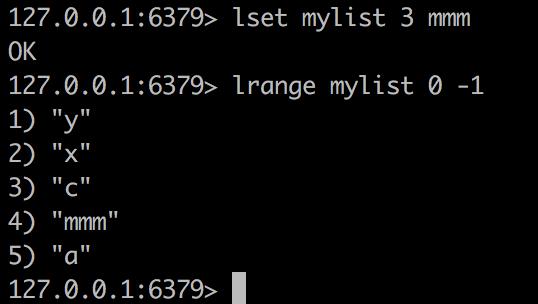
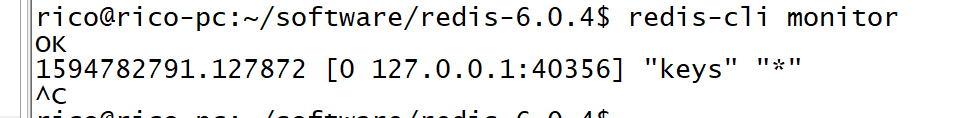
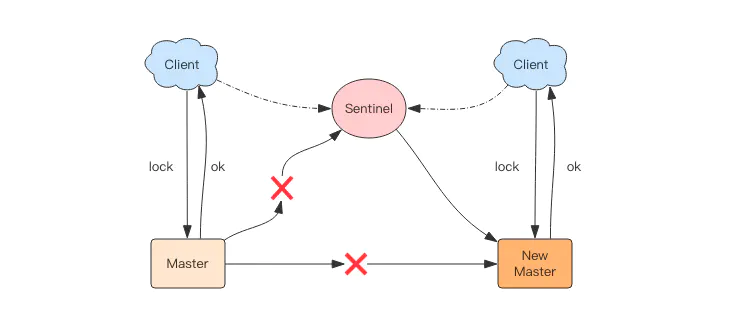

Redis系列
Redis是[Remote Dictionary Service]的首字母缩写，也就是「远程字典服务」
Redis基础
启动关闭
./redis-server --daemonize yes
# 运行命令行
> ./redis-cli
或修改配置文件 找到daemonize no这一行，将no改为yes
启动

使用命令ps -ef | grep -i redis 查看redis是否运行及其端口
关闭Redis
第一种方式 kill -9 5318但这种方式不建议使用
第二种方式 ./bin/redis-cli shutdown 推荐使用这种方式
Redis 基础数据结构
Redis 有 5 种基础数据结构，分别为：string (字符串)、list (列表)、set (集合)、hash (哈希) 和 zset (有序集合)
string (字符串)
字符串 string 是 Redis 最简单的数据结构。Redis 所有的数据结构都是以唯一的 key 字符串作为名称，然后通过这个唯一 key 值来获取相应的 value 数据。不同类型的数据结构的差异就在于 value 的结构不一样。

字符串结构使用非常广泛，一个常见的用途就是缓存用户信息。我们将用户信息结构体使用 JSON 序列化成字符串，然后将序列化后的字符串塞进 Redis 来缓存。同样，取用户信息会经过一次反序列化的过程。
Redis 的字符串是动态字符串，是可以修改的字符串，内部结构实现上类似于 Java 的 ArrayList，采用预分配冗余空间的方式来减少内存的频繁分配，如图中所示，内部为当前字符串实际分配的空间 capacity 一般要高于实际字符串长度 len。当字符串长度小于 1M 时，扩容都是加倍现有的空间，如果超过 1M，扩容时一次只会多扩 1M 的空间。需要注意的是字符串最大长度为 512M。
键值对
127.0.0.1:6379> set name rico
OK
127.0.0.1:6379> get name
"rico"
127.0.0.1:6379> exists name
(integer) 1
127.0.0.1:6379> del name
(integer) 1
127.0.0.1:6379> get name
(nil)
批量键值对**
mget mset应该就是multiget, multiset的缩写吧
> set name1 codehole
OK
> set name2 holycoder
OK
> mget name1 name2 name3 # 返回一个列表
1) "codehole"
2) "holycoder"
3) (nil)
> mset name1 boy name2 girl name3 unknown
> mget name1 name2 name3
1) "boy"
2) "girl"
3) "unknown"
过期和 set 命令扩展
可以对 key 设置过期时间，到点自动删除，这个功能常用来控制缓存的失效时间。不过这个「自动删除」的机制是比较复杂的,后面会介绍
> set name codehole
> get name
"codehole"
> expire name 5 # 5s 后过期
... # wait for 5s
> get name
(nil)
> setex name 5 codehole # 5s 后过期，等价于 set+expire
> get name
"codehole"
... # wait for 5s
> get name
(nil)
> setnx name codehole # 如果 name 不存在就执行 set 创建
(integer) 1
> get name
"codehole"
> setnx name holycoder
(integer) 0 # 因为 name 已经存在，所以 set 创建不成功
> get name
"codehole" # 没有改变
setex等价于set+expire
计数
如果 value 值是一个整数，还可以对它进行自增操作。自增是有范围的，它的范围是 signed long 的最大最小值，超过了这个值，Redis 会报错。
> set age 30
OK
> incr age
(integer) 31
> incrby age 5
(integer) 36
> incrby age -5
(integer) 31
> set codehole 9223372036854775807 # Long.Max
OK
> incr codehole
(error) ERR increment or decrement would overflow
> get name1
"rico"
> append name1 haha
(integer) 8
> get name1
"ricohaha"
获取一个不存在的返回nil
incr表示增加1 如果这个key不存在，这默认设为0并加1 即为1
如果不是int型 会报错 ERR value is not an integer or out of range
decr 会递减1 如果不存在则是0-1即为-1
incrby 可以指定加多少而不是1 同样如果不存在则为0然后加
decrby 可以指定减少多少
append表示在后面追加 返回值时长度，并不是值
字符串是由多个字节组成，每个字节又是由 8 个 bit 组成，如此便可以将一个字符串看成很多 bit 的组合，这便是 bitmap「位图」数据结构
list (列表)
Redis 的列表相当于 Java 语言里面的 LinkedList，注意它是链表而不是数组。这意味着 list 的插入和删除操作非常快，时间复杂度为 O(1)，但是索引定位很慢，时间复杂度为 O(n)，这点让人非常意外。
在Redis中，list是按照插入顺序排序的 ，可以在头部和尾部添加元素，
在链表的两边插入数据效率较高，在链表的中间插入数据，效率较低
当列表弹出了最后一个元素之后，该数据结构自动被删除，内存被回收。

Redis 的列表结构常用来做异步队列使用。将需要延后处理的任务结构体序列化成字符串塞进 Redis 的列表，另一个线程从这个列表中轮询数据进行处理。
rpush表示在右边添加 a b c 顺序进入，a在最左侧 详情可见上面动画

如果名字之前没有则会新建，如果有就会继续增加
lpush 表示在左边添加 a b c，c在最左侧 过程是: a , ba(在a左侧添加b) ,cba(在ba左侧添加c)

lpop 从左侧压出
127.0.0.1:6379> lrange mylist 0 5
1) "a"
2) "b"
3) "c"
127.0.0.1:6379> lpop mylist
"a"
127.0.0.1:6379> lrange mylist 0 5
1) "b"
2) "c"
rpop 右侧压出
> lrange mylist 0 5
1) "a"
2) "b"
3) "c"
> rpop mylist
"c"
> lrange mylist 0 5
1) "a"
2) "b"
llen
llen mylist 获取list长度 , llen 一个没有的 会返回0
lrange
查看 list lrange mylist 0 5 0表示开始 5表示结束 可以是负值，表示倒数第几个
lrange mylist 0 -1 0，-1表示从头到尾
lpushx,rpushx
lpushx mylist z 会在头部插入一个值 但是当mylsit不存在的时候就不会新建然后插入
同理还有rpushx mylist y
lrem
移除元素lrem 名字 个数 值 意思是删除多少个值为多少的值 rem是remove的缩写
如果个数大于0 就会从头向尾遍历删除
如果个数小于0 就会从后面向前遍历删除
lset
lset mylist 3 x 设置角标为3的值

linsert
linsert mylist before x a意思是在mylist中，在第一个出现x的地方的前面插入a


把 mylist的尾部压出加入到mylist2的头部

这个功能主要用于消费者备份
右边进左边出：队列
> rpush books python java golang
(integer) 3
> llen books
(integer) 3
> lpop books
"python"
> lpop books
"java"
> lpop books
"golang"
> lpop books
(nil)
右边进右边出：栈
> rpush books python java golang
(integer) 3
> rpop books
"golang"
> rpop books
"java"
> rpop books
"python"
> rpop books
(nil)
慢操作
lindex 相当于 Java 链表的get(int index)方法，它需要对链表进行遍历，性能随着参数index增大而变差。
ltrim 和字面上的含义不太一样，个人觉得它叫 lretain(保留) 更合适一些，因为 ltrim 跟的两个参数start_index和end_index定义了一个区间，在这个区间内的值，ltrim 要保留，区间之外统统砍掉。我们可以通过ltrim来实现一个定长的链表，这一点非常有用。
index 可以为负数，index=-1表示倒数第一个元素，同样index=-2表示倒数第二个元素。
> rpush books python java golang
(integer) 3
> lindex books 1 # O(n) 慎用
"java"
> lrange books 0 -1 # 获取所有元素，O(n) 慎用
1) "python"
2) "java"
3) "golang"
> ltrim books 1 -1 # O(n) 慎用
OK
> lrange books 0 -1
1) "java"
2) "golang"
> ltrim books 1 0 # 这其实是清空了整个列表，因为区间范围长度为负
OK
> llen books
(integer) 0
快速列表

如果再深入一点，你会发现 Redis 底层存储的还不是一个简单的 linkedlist，而是称之为快速链表 quicklist 的一个结构。
首先在列表元素较少的情况下会使用一块连续的内存存储，这个结构是 ziplist，也即是压缩列表。它将所有的元素紧挨着一起存储，分配的是一块连续的内存。当数据量比较多的时候才会改成 quicklist。因为普通的链表需要的附加指针空间太大，会比较浪费空间，而且会加重内存的碎片化。比如这个列表里存的只是 int 类型的数据，结构上还需要两个额外的指针 prev 和 next 。所以 Redis 将链表和 ziplist 结合起来组成了 quicklist。也就是将多个 ziplist 使用双向指针串起来使用。这样既满足了快速的插入删除性能，又不会出现太大的空间冗余。
hash (字典)
Redis 的字典相当于 Java 语言里面的 HashMap，它是无序字典。内部实现结构上同 Java 的 HashMap 也是一致的，同样的数组 + 链表二维结构。第一维 hash 的数组位置碰撞时，就会将碰撞的元素使用链表串接起来。

不同的是，Redis 的字典的值只能是字符串，另外它们 rehash 的方式不一样，因为 Java 的 HashMap 在字典很大时，rehash 是个耗时的操作，需要一次性全部 rehash。Redis 为了高性能，不能堵塞服务，所以采用了渐进式 rehash 策略。

渐进式 rehash 会在 rehash 的同时，保留新旧两个 hash 结构，查询时会同时查询两个 hash 结构，然后在后续的定时任务中以及 hash 操作指令中，循序渐进地将旧 hash 的内容一点点迁移到新的 hash 结构中。当搬迁完成了，就会使用新的hash结构取而代之。
当 hash 移除了最后一个元素之后，该数据结构自动被删除，内存被回收。

hash 结构也可以用来存储用户信息，不同于字符串一次性需要全部序列化整个对象，hash 可以对用户结构中的每个字段单独存储。这样当我们需要获取用户信息时可以进行部分获取。而以整个字符串的形式去保存用户信息的话就只能一次性全部读取，这样就会比较浪费网络流量。
hash 也有缺点，hash 结构的存储消耗要高于单个字符串，到底该使用 hash 还是字符串，需要根据实际情况再三权衡。
> hset books java "think in java" # 命令行的字符串如果包含空格，要用引号括起来
(integer) 1
> hset books golang "concurrency in go"
(integer) 1
> hset books python "python cookbook"
(integer) 1
> hgetall books # entries()，key 和 value 间隔出现
1) "java"
2) "think in java"
3) "golang"
4) "concurrency in go"
5) "python"
6) "python cookbook"
> hlen books
(integer) 3
> hget books java
"think in java"
> hset books golang "learning go programming" # 因为是更新操作，所以返回 0
(integer) 0
> hget books golang
"learning go programming"
> hmset books java "effective java" python "learning python" golang "modern golang programming" # 批量 set
OK
同字符串对象一样，hash 结构中的单个子 key 也可以进行计数，它对应的指令是 hincrby，和 incr 使用基本一样。但是不支持自增1 ,也即hincr是不支持的
# 老钱又老了一岁
> hincrby user-laoqian age 1
(integer) 30
hexists
hexists 名字 key 判断是否有这个key的值 如果有返回1 如果没有返回 0
hgetall
hgetall 名字可以得到所有属性和值
hlen
hlen 名字 有多少键值对
hkeys
hkeys 名字 可以得到所有的key
hvalues
hvalues 名字 可以得到所有的value
set (集合)
Redis 的集合相当于 Java 语言里面的 HashSet，它内部的键值对是无序的唯一的。它的内部实现相当于一个特殊的字典，字典中所有的 value 都是一个值NULL。
当集合中最后一个元素移除之后，数据结构自动删除，内存被回收。

set 结构有去重功能
> sadd books python
(integer) 1
> sadd books python # 重复
(integer) 0
> sadd books java golang
(integer) 2
> smembers books # 注意顺序，和插入的并不一致，因为 set 是无序的
1) "java"
2) "python"
3) "golang"
> sismember books java # 查询某个 value 是否存在，相当于 contains(o)
(integer) 1
> sismember books rust
(integer) 0
> scard books # 获取长度相当于 count()
(integer) 3
> spop books # 弹出一个
"java"
zset (有序集合)
zset 可能是 Redis 提供的最为特色的数据结构，它也是在面试中面试官最爱问的数据结构。它类似于 Java 的 SortedSet 和 HashMap 的结合体，一方面它是一个 set，保证了内部 value 的唯一性，另一方面它可以给每个 value 赋予一个 score，代表这个 value 的排序权重。它的内部实现用的是一种叫做「跳跃列表」的数据结构。
zset 中最后一个 value 被移除后，数据结构自动删除，内存被回收。

zset 可以用来存粉丝列表，value 值是粉丝的用户 ID，score 是关注时间。我们可以对粉丝列表按关注时间进行排序。
zset 还可以用来存储学生的成绩，value 值是学生的 ID，score 是他的考试成绩。我们可以对成绩按分数进行排序就可以得到他的名次。
> zadd books 9.0 "think in java"
(integer) 1
> zadd books 8.9 "java concurrency"
(integer) 1
> zadd books 8.6 "java cookbook"
(integer) 1
> zrange books 0 -1 # 按 score 排序列出，参数区间为排名范围
1) "java cookbook"
2) "java concurrency"
3) "think in java"
> zrevrange books 0 -1 # 按 score 逆序列出，参数区间为排名范围
1) "think in java"
2) "java concurrency"
3) "java cookbook"
> zcard books # 相当于 count()
(integer) 3
> zscore books "java concurrency" # 获取指定 value 的 score
"8.9000000000000004" # 内部 score 使用 double 类型进行存储，所以存在小数点精度问题
> zrank books "java concurrency" # 排名
(integer) 1
> zrangebyscore books 0 8.91 # 根据分值区间遍历 zset
1) "java cookbook"
2) "java concurrency"
> zrangebyscore books -inf 8.91 withscores # 根据分值区间 (-∞, 8.91] 遍历 zset，同时返回分值。inf 代表 infinite，无穷大的意思。
1) "java cookbook"
2) "8.5999999999999996"
3) "java concurrency"
4) "8.9000000000000004"
> zrem books "java concurrency" # 删除 value
(integer) 1
> zrange books 0 -1
1) "java cookbook"
2) "think in java"
zremrangebyrank mysort 0 4 按照排名删除 0到4个，即5个
zremrangebyscore mysort 起始分数(包含) 终止分数(包含) 按照分数范围删除


zrevrangebyscore 逆序按分数排列 注意分数区间也要倒着写

zincrby mysort 6 赵六 为赵六增加6分
zcount 统计分数段内有多少个

跳跃列表
zset 内部的排序功能是通过「跳跃列表」数据结构来实现的，它的结构非常特殊，也比较复杂。
因为 zset 要支持随机的插入和删除，所以它不好使用数组来表示。我们先看一个普通的链表结构。

我们需要这个链表按照 score 值进行排序。这意味着当有新元素需要插入时，要定位到特定位置的插入点，这样才可以继续保证链表是有序的。通常我们会通过二分查找来找到插入点，但是二分查找的对象必须是数组，只有数组才可以支持快速位置定位，链表做不到，那该怎么办？
想想一个创业公司，刚开始只有几个人，团队成员之间人人平等，都是联合创始人。随着公司的成长，人数渐渐变多，团队沟通成本随之增加。这时候就会引入组长制，对团队进行划分。每个团队会有一个组长。开会的时候分团队进行，多个组长之间还会有自己的会议安排。公司规模进一步扩展，需要再增加一个层级 —— 部门，每个部门会从组长列表中推选出一个代表来作为部长。部长们之间还会有自己的高层会议安排。
跳跃列表就是类似于这种层级制，最下面一层所有的元素都会串起来。然后每隔几个元素挑选出一个代表来，再将这几个代表使用另外一级指针串起来。然后在这些代表里再挑出二级代表，再串起来。最终就形成了金字塔结构。
「跳跃列表」之所以「跳跃」，是因为内部的元素可能「身兼数职」，比如上图中间的这个元素，同时处于 L0、L1 和 L2 层，可以快速在不同层次之间进行「跳跃」。
定位插入点时，先在顶层进行定位，然后下潜到下一级定位，一直下潜到最底层找到合适的位置，将新元素插进去。你也许会问，那新插入的元素如何才有机会「身兼数职」呢？
跳跃列表采取一个随机策略来决定新元素可以兼职到第几层。
首先 L0 层肯定是 100% 了，L1 层只有 50% 的概率，L2 层只有 25% 的概率，L3 层只有 12.5% 的概率，一直随机到最顶层 L31 层。绝大多数元素都过不了几层，只有极少数元素可以深入到顶层。列表中的元素越多，能够深入的层次就越深，能进入到顶层的概率就会越大。
容器型数据结构的通用规则
list/set/hash/zset 这四种数据结构是容器型数据结构，它们共享下面两条通用规则：
create if not exists
如果容器不存在，那就创建一个，再进行操作。比如 rpush 操作刚开始是没有列表的，Redis 就会自动创建一个，然后再 rpush 进去新元素。
drop if no elements
如果容器里元素没有了，那么立即删除元素，释放内存。这意味着 lpop 操作到最后一个元素，列表就消失了。
过期时间
Redis 所有的数据结构都可以设置过期时间，时间到了，Redis 会自动删除相应的对象。需要注意的是过期是以对象为单位，比如一个 hash 结构的过期是整个 hash 对象的过期，而不是其中的某个子 key。
还有一个需要特别注意的地方是如果一个字符串已经设置了过期时间，然后你调用了 set 方法修改了它，它的过期时间会消失。
127.0.0.1:6379> set codehole yoyo
OK
127.0.0.1:6379> expire codehole 600
(integer) 1
127.0.0.1:6379> ttl codehole
(integer) 597
127.0.0.1:6379> set codehole yoyo
OK
127.0.0.1:6379> ttl codehole
(integer) -1
Keys的通用操作
keys *列出所有keys
kyes my* 列出所有my开头的keys 教程上是？号

del 多个key 可以删除
exists可以判断某个key是否存在 存在返回1 不存在返回0
127.0.0.1:6379> exists mylist2
0
127.0.0.1:6379> exists myset
1
rename 名字 新名字 注意这里改的是名字而不是值

设置过期时间 超过过期时间就获取不到了 如果某个key没有设置过期时间，会返回-1 如果已经过期，返回-2

type命令返回指定key的类型 没有这个key返回none
127.0.0.1:6379> type age
string
127.0.0.1:6379> type myset
set
127.0.0.1:6379> type mylist
list
127.0.0.1:6379> type mysort
zset
扩展阅读
Redis 应用
应用 1：千帆竞发 — 分布式锁
分布式应用进行逻辑处理时经常会遇到并发问题。
比如一个操作要修改用户的状态，修改状态需要先读出用户的状态，在内存里进行修改，改完了再存回去。如果这样的操作同时进行了，就会出现并发问题，因为读取和保存状态这两个操作不是原子的。（Wiki 解释：所谓原子操作是指不会被线程调度机制打断的操作；这种操作一旦开始，就一直运行到结束，中间不会有任何 context switch 线程切换。）

这个时候就要使用到分布式锁来限制程序的并发执行。Redis 分布式锁使用非常广泛，它是面试的重要考点之一，很多同学都知道这个知识，也大致知道分布式锁的原理，但是具体到细节的使用上往往并不完全正确。
分布式锁
分布式锁本质上要实现的目标就是在 Redis 里面占一个“坑”，当别的进程也要来占时，发现已经有人蹲在那里了，就只好放弃或者稍后再试。
占坑一般是使用 setnx(set if not exists) 指令，只允许被一个客户端占坑。先来先占， 用完了，再调用 del 指令释放茅坑。(SETEX如果之前已经存在会覆盖)
127.0.0.1:6379> setnx apple true
(integer) 1
127.0.0.1:6379> setnx apple true
(integer) 0 #不能继续加锁了
127.0.0.1:6379> del apple
(integer) 1
127.0.0.1:6379> setnx apple true
(integer) 1#删除后可以加锁了
但是有个问题，如果逻辑执行到中间出现异常了，可能会导致 del 指令没有被调用，这样就会陷入死锁，锁永远得不到释放。
于是我们在拿到锁之后，再给锁加上一个过期时间，比如 5s，这样即使中间出现异常也可以保证 5 秒之后锁会自动释放。
> setnx lock_codehole true
OK
> expire lock_codehole 5
... do something critical ...
> del lock_codehole
(integer) 1
但是以上逻辑还有问题。如果在 setnx 和 expire 之间服务器进程突然挂掉了，可能是因为机器掉电或者是被人为杀掉的，就会导致 expire 得不到执行，也会造成死锁。
这种问题的根源就在于 setnx 和 expire 是两条指令而不是原子指令。如果这两条指令可以一起执行就不会出现问题。也许你会想到用 Redis 事务来解决。但是这里不行，因为 expire 是依赖于 setnx 的执行结果的，如果 setnx 没抢到锁，expire 是不应该执行的。事务里没有 if-else 分支逻辑，事务的特点是一口气执行，要么全部执行要么一个都不执行。
为了解决这个疑难，Redis 开源社区涌现了一堆分布式锁的 library，专门用来解决这个问题。实现方法极为复杂，小白用户一般要费很大的精力才可以搞懂。如果你需要使用分布式锁，意味着你不能仅仅使用 Jedis 或者 redis-py 就行了，还得引入分布式锁的 library。

为了治理这个乱象，Redis 2.8 版本中作者加入了 set 指令的扩展参数，使得 setnx 和 expire 指令可以一起执行，彻底解决了分布式锁的乱象。从此以后所有的第三方分布式锁 library 可以休息了。
SET key value [EX seconds] [PX milliseconds] [NX|XX]
EX seconds： 将键的过期时间设置为seconds秒。 执行SET key value EX seconds的效果等同于执行SETEX key seconds value。PX milliseconds： 将键的过期时间设置为milliseconds毫秒。 执行SET key value PX milliseconds的效果等同于执行PSETEX key milliseconds value。NX： 只在键不存在时， 才对键进行设置操作。 执行SET key value NX的效果等同于执行SETNX key value。XX： 只在键已经存在时， 才对键进行设置操作。
> set lock_codehole true ex 5 nx
OK
... do something critical ...
> del lock_codehole
上面这个指令就是 setnx 和 expire 组合在一起的原子指令，它就是分布式锁的奥义所在。
超时问题
Redis 的分布式锁不能解决超时问题，如果在加锁和释放锁之间的逻辑执行的太长，以至于超出了锁的超时限制，就会出现问题。因为这时候第一个线程持有的锁过期了，临界区的逻辑还没有执行完，这个时候第二个线程就提前重新持有了这把锁，导致临界区代码不能得到严格的串行执行。
为了避免这个问题，Redis 分布式锁不要用于较长时间的任务。如果真的偶尔出现了，数据出现的小波错乱可能需要人工介入解决。
tag = random.nextint() # 随机数
if redis.set(key, tag, nx=True, ex=5):
do_something()
redis.delifequals(key, tag) # 假想的 delifequals 指令
有一个稍微安全一点的方案是为 set 指令的 value 参数设置为一个随机数，释放锁时先匹配随机数是否一致，然后再删除 key，这是为了确保当前线程占有的锁不会被其它线程释放，除非这个锁是过期了被服务器自动释放的。 但是匹配 value 和删除 key 不是一个原子操作，Redis 也没有提供类似于delifequals这样的指令，这就需要使用 Lua 脚本来处理了，因为 Lua 脚本可以保证连续多个指令的原子性执行。
# delifequals
if redis.call("get",KEYS[1]) == ARGV[1] then
return redis.call("del",KEYS[1])
else
return 0
end
但是这也不是一个完美的方案，它只是相对安全一点，因为如果真的超时了，当前线程的逻辑没有执行完，其它线程也会乘虚而入。
可重入性
可重入性是指线程在持有锁的情况下再次请求加锁，如果一个锁支持同一个线程的多次加锁，那么这个锁就是可重入的。比如 Java 语言里有个 ReentrantLock 就是可重入锁。Redis 分布式锁如果要支持可重入，需要对客户端的 set 方法进行包装，使用线程的 Threadlocal 变量存储当前持有锁的计数。
# -*- coding: utf-8
import redis
import threading
locks = threading.local()
locks.redis = {}
def key_for(user_id):
return "account_{}".format(user_id)
def _lock(client, key):
return bool(client.set(key, True, nx=True, ex=5))
def _unlock(client, key):
client.delete(key)
def lock(client, user_id):
key = key_for(user_id)
if key in locks.redis:
locks.redis[key] += 1
return True
ok = _lock(client, key)
if not ok:
return False
locks.redis[key] = 1
return True
def unlock(client, user_id):
key = key_for(user_id)
if key in locks.redis:
locks.redis[key] -= 1
if locks.redis[key] <= 0:
del locks.redis[key]
self._unlock(key)
return True
return False
client = redis.StrictRedis()
print "lock", lock(client, "codehole")
print "lock", lock(client, "codehole")
print "unlock", unlock(client, "codehole")
print "unlock", unlock(client, "codehole")
以上还不是可重入锁的全部，精确一点还需要考虑内存锁计数的过期时间，代码复杂度将会继续升高。老钱不推荐使用可重入锁，它加重了客户端的复杂性，在编写业务方法时注意在逻辑结构上进行调整完全可以不使用可重入锁。下面是 Java 版本的可重入锁。
public class RedisWithReentrantLock {
private ThreadLocal<Map<String, Integer>> lockers = new ThreadLocal<>();
private Jedis jedis;
public RedisWithReentrantLock(Jedis jedis) {
this.jedis = jedis;
}
private boolean _lock(String key) {
return jedis.set(key, "", "nx", "ex", 5L) != null;
}
private void _unlock(String key) {
jedis.del(key);
}
private Map<String, Integer> currentLockers() {
Map<String, Integer> refs = lockers.get();
if (refs != null) {
return refs;
}
lockers.set(new HashMap<>());
return lockers.get();
}
public boolean lock(String key) {
Map<String, Integer> refs = currentLockers();
Integer refCnt = refs.get(key);
if (refCnt != null) {
refs.put(key, refCnt + 1);
return true;
}
boolean ok = this._lock(key);
if (!ok) {
return false;
}
refs.put(key, 1);
return true;
}
public boolean unlock(String key) {
Map<String, Integer> refs = currentLockers();
Integer refCnt = refs.get(key);
if (refCnt == null) {
return false;
}
refCnt -= 1;
if (refCnt > 0) {
refs.put(key, refCnt);
} else {
refs.remove(key);
this._unlock(key);
}
return true;
}
public static void main(String[] args) {
Jedis jedis = new Jedis();
RedisWithReentrantLock redis = new RedisWithReentrantLock(jedis);
System.out.println(redis.lock("codehole"));
System.out.println(redis.lock("codehole"));
System.out.println(redis.unlock("codehole"));
System.out.println(redis.unlock("codehole"));
}
}
跟 Python 版本区别不大，也是基于 ThreadLocal 和引用计数。
总结：
分布式锁可用设置了超时的set/setnx来实现
应用 2：缓兵之计 — 延时队列
我们平时习惯于使用 Rabbitmq 和 Kafka 作为消息队列中间件，来给应用程序之间增加异步消息传递功能。这两个中间件都是专业的消息队列中间件，特性之多超出了大多数人的理解能力。
使用过 Rabbitmq 的同学知道它使用起来有多复杂，发消息之前要创建 Exchange，再创建 Queue，还要将 Queue 和 Exchange 通过某种规则绑定起来，发消息的时候要指定 routing-key，还要控制头部信息。消费者在消费消息之前也要进行上面一系列的繁琐过程。但是绝大多数情况下，虽然我们的消息队列只有一组消费者，但还是需要经历上面这些繁琐的过程。
有了 Redis，它就可以让我们解脱出来，对于那些只有一组消费者的消息队列，使用 Redis 就可以非常轻松的搞定。Redis 的消息队列不是专业的消息队列，它没有非常多的高级特性，没有 ack 保证，如果对消息的可靠性有着极致的追求，那么它就不适合使用。
异步消息队列
Redis 的 list(列表) 数据结构常用来作为异步消息队列使用，使用rpush/lpush操作入队列，使用lpop 和 rpop来出队列。

rpush表示在右边添加apple banana pear 顺序进入，apple在最左侧 ,可以理解为新要素不断的加入到旧要素的右边
> rpush notify-queue apple banana pear
(integer) 3
> llen notify-queue
(integer) 3
> lpop notify-queue #从左侧压出
"apple"
> llen notify-queue
(integer) 2
> lpop notify-queue
"banana"
> llen notify-queue
(integer) 1
> lpop notify-queue
"pear"
> llen notify-queue
(integer) 0
> lpop notify-queue
(nil)
上面是 rpush 和 lpop 结合使用的例子。还可以使用 lpush 和 rpop 结合使用，效果是一样的。这里不再赘述。
队列空了怎么办？
客户端是通过队列的 pop 操作来获取消息，然后进行处理。处理完了再接着获取消息，再进行处理。如此循环往复，这便是作为队列消费者的客户端的生命周期。
可是如果队列空了，客户端就会陷入 pop 的死循环，不停地 pop，没有数据，接着再 pop，又没有数据。这就是浪费生命的空轮询。空轮询不但拉高了客户端的 CPU，redis 的 QPS 也会被拉高，如果这样空轮询的客户端有几十来个，Redis 的慢查询可能会显著增多。
通常我们使用 sleep 来解决这个问题，让线程睡一会，睡个 1s 钟就可以了。不但客户端的 CPU 能降下来，Redis 的 QPS 也降下来了。
队列延迟
用上面睡眠的办法可以解决问题。但是有个小问题，那就是睡眠会导致消息的延迟增大。如果只有 1 个消费者，那么这个延迟就是 1s。如果有多个消费者，这个延迟会有所下降，因为每个消费者的睡觉时间是岔开来的。
有没有什么办法能显著降低延迟呢？你当然可以很快想到：那就把睡觉的时间缩短点。这种方式当然可以，不过有没有更好的解决方案呢？当然也有，那就是 blpop/brpop。
这两个指令的前缀字符b代表的是blocking，也就是阻塞读。
阻塞读在队列没有数据的时候，会立即进入休眠状态，一旦数据到来，则立刻醒过来。消息的延迟几乎为零。用blpop/brpop替代前面的lpop/rpop，就完美解决了上面的问题。
空闲连接自动断开
你以为上面的方案真的很完美么？先别急着开心，其实他还有个问题需要解决。
什么问题？—— 空闲连接的问题。
如果线程一直阻塞在哪里，Redis 的客户端连接就成了闲置连接，闲置过久，服务器一般会主动断开连接，减少闲置资源占用。这个时候blpop/brpop会抛出异常来。
所以编写客户端消费者的时候要小心，注意捕获异常，还要重试。
锁冲突处理
上节课我们讲了分布式锁的问题，但是没有提到客户端在处理请求时加锁没加成功怎么办。一般有 3 种策略来处理加锁失败：
- 直接抛出异常，通知用户稍后重试；
- sleep 一会再重试；
- 将请求转移至延时队列，过一会再试；
直接抛出特定类型的异常
这种方式比较适合由用户直接发起的请求，用户看到错误对话框后，会先阅读对话框的内容，再点击重试，这样就可以起到人工延时的效果。如果考虑到用户体验，可以由前端的代码替代用户自己来进行延时重试控制。它本质上是对当前请求的放弃，由用户决定是否重新发起新的请求。
sleep
sleep 会阻塞当前的消息处理线程，会导致队列的后续消息处理出现延迟。如果碰撞的比较频繁或者队列里消息比较多，sleep 可能并不合适。如果因为个别死锁的 key 导致加锁不成功，线程会彻底堵死，导致后续消息永远得不到及时处理。
延时队列
这种方式比较适合异步消息处理，将当前冲突的请求扔到另一个队列延后处理以避开冲突。
延时队列的实现
延时队列可以通过 Redis 的 zset(有序列表) 来实现。我们将消息序列化成一个字符串作为 zset 的value，这个消息的到期处理时间作为score，然后用多个线程轮询 zset 获取到期的任务进行处理，多个线程是为了保障可用性，万一挂了一个线程还有其它线程可以继续处理。因为有多个线程，所以需要考虑并发争抢任务，确保任务不能被多次执行。
def delay(msg):
msg.id = str(uuid.uuid4()) # 保证 value 值唯一
value = json.dumps(msg)
retry_ts = time.time() + 5 # 5 秒后重试
redis.zadd("delay-queue", retry_ts, value)
def loop():
while True:
# 最多取 1 条
values = redis.zrangebyscore("delay-queue", 0, time.time(), start=0, num=1)
if not values:
time.sleep(1) # 延时队列空的，休息 1s
continue
value = values[0] # 拿第一条，也只有一条
success = redis.zrem("delay-queue", value) # 从消息队列中移除该消息
if success: # 因为有多进程并发的可能，最终只会有一个进程可以抢到消息
msg = json.loads(value)
handle_msg(msg)
Redis 的 zrem(删除) 方法是多线程多进程争抢任务的关键，它的返回值决定了当前实例有没有抢到任务，因为 loop 方法可能会被多个线程、多个进程调用，同一个任务可能会被多个进程线程抢到，通过 zrem 来决定唯一的属主。
同时，我们要注意一定要对 handle_msg 进行异常捕获，避免因为个别任务处理问题导致循环异常退出。以下是 Java 版本的延时队列实现，因为要使用到 Json 序列化，所以还需要 fastjson 库的支持。
import java.lang.reflect.Type;
import java.util.Set;
import java.util.UUID;
import com.alibaba.fastjson.JSON;
import com.alibaba.fastjson.TypeReference;
import redis.clients.jedis.Jedis;
public class RedisDelayingQueue<T> {
static class TaskItem<T> {
public String id;
public T msg;
}
// fastjson 序列化对象中存在 generic 类型时，需要使用 TypeReference
private Type TaskType = new TypeReference<TaskItem<T>>() {
}.getType();
private Jedis jedis;
private String queueKey;
public RedisDelayingQueue(Jedis jedis, String queueKey) {
this.jedis = jedis;
this.queueKey = queueKey;
}
public void delay(T msg) {
TaskItem<T> task = new TaskItem<T>();
task.id = UUID.randomUUID().toString(); // 分配唯一的 uuid
task.msg = msg;
String s = JSON.toJSONString(task); // fastjson 序列化
jedis.zadd(queueKey, System.currentTimeMillis() + 5000, s); // 塞入延时队列 ,5s 后再试
}
public void loop() {
while (!Thread.interrupted()) {
// 只取一条
Set<String> values = jedis.zrangeByScore(queueKey, 0, System.currentTimeMillis(), 0, 1);
if (values.isEmpty()) {
try {
Thread.sleep(500); // 歇会继续
} catch (InterruptedException e) {
break;
}
continue;
}
String s = values.iterator().next();
if (jedis.zrem(queueKey, s) > 0) { // 抢到了
TaskItem<T> task = JSON.parseObject(s, TaskType); // fastjson 反序列化
this.handleMsg(task.msg);
}
}
}
public void handleMsg(T msg) {
System.out.println(msg);
}
public static void main(String[] args) {
Jedis jedis = new Jedis();
RedisDelayingQueue<String> queue = new RedisDelayingQueue<>(jedis, "q-demo");
Thread producer = new Thread() {
public void run() {
for (int i = 0; i < 10; i++) {
queue.delay("codehole" + i);
}
}
};
Thread consumer = new Thread() {
public void run() {
queue.loop();
}
};
producer.start();
consumer.start();
try {
producer.join();
Thread.sleep(6000);
consumer.interrupt();
consumer.join();
} catch (InterruptedException e) {
}
}
}
使用时间作为分数进行排序,其中zrangeByScore用的是这个api
zrangeByScore(String key, String min, String max, int offset, int count)
进一步优化
上面的算法中同一个任务可能会被多个进程取到之后再使用 zrem 进行争抢，那些没抢到的进程都是白取了一次任务，这是浪费。可以考虑使用 lua scripting 来优化一下这个逻辑，将 zrangebyscore 和 zrem 一同挪到服务器端进行原子化操作，这样多个进程之间争抢任务时就不会出现这种浪费了。
总结：
消息队列可使用list的blpop/brpop来实现，延时队列可使用zset来实现
应用 3：节衣缩食 — 位图
在我们平时开发过程中，会有一些 bool 型数据需要存取，比如用户一年的签到记录，签了是 1，没签是 0，要记录 365 天。如果使用普通的 key/value，每个用户要记录 365 个，当用户上亿的时候，需要的存储空间是惊人的。
为了解决这个问题，Redis 提供了位图数据结构，这样每天的签到记录只占据一个位(bit)，365 天就是 365 个位，46 个字节(byte) (一个稍长一点的字符串) 就可以完全容纳下，这就大大节约了存储空间。
位图不是特殊的数据结构，它的内容其实就是普通的字符串，也就是 byte 数组。我们可以使用普通的 get/set 直接获取和设置整个位图的内容，也可以使用位图操作 getbit/setbit 等将 byte 数组看成「位数组」来处理。
当我们要统计月活的时候，因为需要去重，需要使用 set 来记录所有活跃用户的 id，这非常浪费内存。这时就可以考虑使用位图来标记用户的活跃状态。每个用户会都在这个位图的一个确定位置上，0 表示不活跃，1 表示活跃。然后到月底遍历一次位图就可以得到月度活跃用户数。不过这个方法也是有条件的，那就是 userid 是整数连续的，并且活跃占比较高，否则可能得不偿失。
如果你对 Redis 的位图有所了解，它将会是你的面试加分项。
关于位图，可能大家不太熟悉，
那么位图能干啥呢？位图的内容其实就是普通的字符串，也就是byte数组，我们都知道
byte = 8 位无符号整数 = 0 到 255
说个场景。比如你处理一些业务时候，往往会存在 是或者不是 这样的数据，那么这种数据还是频繁去查看和请求，从数据方面和请求次数方面都是非常的大的。那么Redis位图可以帮你解决。每天的记录只占据一个位，他的存储格式：0 1 0 1 0 1。在操作方面我们可以使用：get/set， gitbit/setbit等将byte数组看成【位数组】来处理。
说说他的特性：
位数组是自动扩展的，如果超出现有内容范围，它会自动将位数组进行零扩充。
当然一般这种业务数据，都往往少不了统计，查找，那么位图指令统计bitcount和查找bitpos。bitcount 用来统计指定位置范围内 1 的个数，bitpos 用来查找指定范围内出现的第一个 0 或 1。
bitpos指定的范围是【start，end】。注意的是start 和 end 参数是字节索引，也就是说指定的位范围必须是 8 的倍数，
setbit命令
设置或修改key上的偏移量（offset）的位（value）的值。
- 语法：
setbit key offset value - 返回值：指定偏移量
（offset）原来存储的值

getbit命令
查询key所存储的字符串值，获取偏移量上的位。
- 语法：
getbit key offset - 返回值：返回指定
key上的偏移量，若key不存在，那么返回0。

getcount命令
计算给定key的字符串值中，被设置为1的位bit的数量
- 语法：
bitcount key [start] [end] - 返回值：1比特位的数量
注意：setbit是设置或者清除bit位置。这个是统计key出现1的次数。
（友情提示：）需要注意的是：[start][end]（单位）实际是byte，这是什么意思呢？进入redis实际上是乘以8。
场景
用户日活，月活，留存率的统计
实际是统计每天的用户数量。
- key：日期；
- offset：用户id【数字或者二进制】；要求用户id连续
- value：是否登录/做任意操作；
按日期生成一个位图（bitmap）
- 计算日活：
bitcount key获取key为1的数量； - 计算月活：可把30天的所有
bitmap做or计算，在进行bitcount计算； - 计算留存率：
昨日留存=昨天今天连续登录的人数/昨天登录的人数，即昨天的bitmap与今天的bitmap进行and计算，在除以昨天bitcount的数量
实现用户上线次数的统计
实际上是以用户为主体
- key：用户id；
- offset：日期；
- value：是否上线；
setbit xiaopang 1 0；记录小胖的上线天数，bitcount xiaopang统计小胖的上线天数。
用户在线状态和人数统计
也是使用一个bitmap，使用用户id来充当offset，上线标识是1，下线标识是0，也可轻松统计在线人数。
优点
位图操作是用来操作比特位的，其优点是节省内存空间。为什么可以节省内存空间呢？假如我们需要存储100万个用户的登录状态，使用位图的话最少只需要100万个比特位（比特位1表示登录，比特位0表示未登录）就可以存储了，而如果以字符串的形式存储，比如说以userId为key，是否登录（字符串“1”表示登录，字符串“0”表示未登录）为value进行存储的话，就需要存储100万个字符串了，相比之下使用位图存储占用的空间要小得多，这就是位图存储的优势。
应用 4：四两拨千斤 ——HyperLogLog
在开始这一节之前，我们先思考一个常见的业务问题：如果你负责开发维护一个大型的网站，有一天老板找产品经理要网站每个网页每天的 UV 数据，然后让你来开发这个统计模块，你会如何实现？
如果统计 PV 那非常好办，给每个网页一个独立的 Redis 计数器就可以了，这个计数器的 key 后缀加上当天的日期。这样来一个请求，incrby 一次，最终就可以统计出所有的 PV 数据。
但是 UV 不一样，它要去重，同一个用户一天之内的多次访问请求只能计数一次。这就要求每一个网页请求都需要带上用户的 ID，无论是登陆用户还是未登陆用户都需要一个唯一 ID 来标识。
你也许已经想到了一个简单的方案，那就是为每一个页面一个独立的 set 集合来存储所有当天访问过此页面的用户 ID。当一个请求过来时，我们使用 sadd 将用户 ID 塞进去就可以了。通过 scard 可以取出这个集合的大小，这个数字就是这个页面的 UV 数据。没错，这是一个非常简单的方案。
但是，如果你的页面访问量非常大，比如一个爆款页面几千万的 UV，你需要一个很大的 set 集合来统计，这就非常浪费空间。如果这样的页面很多，那所需要的存储空间是惊人的。为这样一个去重功能就耗费这样多的存储空间，值得么？其实老板需要的数据又不需要太精确，105w 和 106w 这两个数字对于老板们来说并没有多大区别，So，有没有更好的解决方案呢？
这就是本节要引入的一个解决方案，Redis 提供了 HyperLogLog 数据结构就是用来解决这种统计问题的。HyperLogLog 提供不精确的去重计数方案，虽然不精确但是也不是非常不精确，标准误差是 0.81%，这样的精确度已经可以满足上面的 UV 统计需求了。
HyperLogLog 数据结构是 Redis 的高级数据结构，它非常有用，但是令人感到意外的是，使用过它的人非常少。
使用方法
HyperLogLog 提供了两个指令 pfadd 和 pfcount，根据字面意义很好理解，一个是增加计数，一个是获取计数。pfadd 用法和 set 集合的 sadd 是一样的，来一个用户 ID，就将用户 ID 塞进去就是。pfcount 和 scard 用法是一样的，直接获取计数值。
127.0.0.1:6379> pfadd codehole user1
(integer) 1
127.0.0.1:6379> pfcount codehole
(integer) 1
127.0.0.1:6379> pfadd codehole user2
(integer) 1
127.0.0.1:6379> pfcount codehole
(integer) 2
127.0.0.1:6379> pfadd codehole user3
(integer) 1
127.0.0.1:6379> pfcount codehole
(integer) 3
127.0.0.1:6379> pfadd codehole user4
(integer) 1
127.0.0.1:6379> pfcount codehole
(integer) 4
127.0.0.1:6379> pfadd codehole user5
(integer) 1
127.0.0.1:6379> pfcount codehole
(integer) 5
127.0.0.1:6379> pfadd codehole user6
(integer) 1
127.0.0.1:6379> pfcount codehole
(integer) 6
127.0.0.1:6379> pfadd codehole user7 user8 user9 user10
(integer) 1
127.0.0.1:6379> pfcount codehole
(integer) 10
简单试了一下，发现还蛮精确的，一个没多也一个没少。接下来我们使用脚本，往里面灌更多的数据，看看它是否还可以继续精确下去，如果不能精确，差距有多大
public class PfTest {
public static void main(String[] args) {
Jedis jedis = new Jedis();
for (int i = 0; i < 1000; i++) {
jedis.pfadd("rico", "user" + i);
long total = jedis.pfcount("rico");
if (total != i + 1) {
System.out.printf("%d %d\n", total, i + 1);
break;
}
}
jedis.close();
}
}
当我们加入第 100 个元素时，结果开始出现了不一致。接下来我们将数据增加到 10w 个，看看总量差距有多大。
public class JedisTest {
public static void main(String[] args) {
Jedis jedis = new Jedis();
for (int i = 0; i < 100000; i++) {
jedis.pfadd("codehole", "user" + i);
}
long total = jedis.pfcount("codehole");
System.out.printf("%d %d\n", 100000, total);
jedis.close();
}
}
跑了约半分钟，我们看输出：
100000 99723
差了 277 个，按百分比是 0.277%，对于上面的 UV 统计需求来说，误差率也不算高。然后我们把上面的脚本再跑一边，也就相当于将数据重复加入一边，查看输出，可以发现，pfcount 的结果没有任何改变，还是 99723，说明它确实具备去重功能。
pfadd 这个 pf 是什么意思？
它是 HyperLogLog 这个数据结构的发明人 Philippe Flajolet 的首字母缩写
pfmerge 适合什么场合用？
HyperLogLog 除了上面的 pfadd 和 pfcount 之外，还提供了第三个指令 pfmerge，用于将多个 pf 计数值累加在一起形成一个新的 pf 值。
比如在网站中我们有两个内容差不多的页面，运营说需要这两个页面的数据进行合并。其中页面的 UV 访问量也需要合并，那这个时候 pfmerge 就可以派上用场了。
注意事项
HyperLogLog 这个数据结构不是免费的，不是说使用这个数据结构要花钱，它需要占据一定 12k 的存储空间，所以它不适合统计单个用户相关的数据。如果你的用户上亿，可以算算，这个空间成本是非常惊人的。但是相比 set 存储方案，HyperLogLog 所使用的空间那真是可以使用千斤对比四两来形容了。
不过你也不必过于担心，因为 Redis 对 HyperLogLog 的存储进行了优化，在计数比较小时，它的存储空间采用稀疏矩阵存储，空间占用很小，仅仅在计数慢慢变大，稀疏矩阵占用空间渐渐超过了阈值时才会一次性转变成稠密矩阵，才会占用 12k 的空间。
HyperLogLog 实现原理
HyperLogLog算法来源于论文《HyperLogLog the analysis of a near-optimal cardinality estimation algorithm》
HyperLogLog 的使用非常简单，但是实现原理比较复杂，如果读者没有特别的兴趣，下面的内容暂时可以跳过不看。
HyperLogLog本质上来源于生活中一个小的发现，假设你抛了很多次硬币，你告诉在这次抛硬币的过程中最多只有两次扔出连续的反面，让我猜你总共抛了多少次硬币，我敢打赌你抛硬币的总次数不会太多，相反，如果你和我说最多出现了100次连续的反面，那么我敢肯定扔硬盘的总次数非常的多，甚至我还可以给出一个估计，这个估计要怎么给呢？其实是一个很简单的概率问题，假设1代表抛出正面，0代表反面：

上图中以抛硬币序列”1110100110”为例，其中最长的反面序列是”00”，我们顺手把后面那个1也给带上，也就是”001”，因为它包括了序列中最长的一串0，所以在序列中肯定只出现过一次，而它在任意序列出现出现且仅出现一次的概率显然是上图所示的三个二分之一相乘，也就是八分之一，所以我可以给出一个估计值，你大概总共抛了8次硬币。
很显然，上面这种做法虽然能够估计抛硬币的总数，但是显然误差是比较大的，很容易受到突发事件（比如突然连续抛出好多0）的影响，HyperLogLog算法研究的就是如何减小这个误差。
之前说过，HyperLogLog算法是用来计算基数的，这个抛硬币的序列和基数有什么关系呢？比如在数据库中，我只要在每次插入一条新的记录时，计算这条记录的hash，并且转换成二进制，就可以将其看成一个硬币序列了，如下(0b前缀表示二进制数)：

根据上面抛硬币的启发我可以想到如下的估计基数的算法（这里先给出伪代码，后面会有Java实现）：
输入：一个集合
输出：集合的基数
算法：
max = 0
对于集合中的每个元素：
hashCode = hash(元素)
num = hashCode二进制表示中最前面连续的0的数量
if num > max:
max = num
最后的结果是2的(max + 1)次幂
举个例子，对于集合{ele1, ele2}，先求hash(ele1)=0b00110111，它最前面的连续的0的数量为2（又称为前导0），然后求hash(ele2)=0b10010000111，它的前导0数量为0，我们始终只保存前导零数量的最大值，所以最后max是2，我们估计的基数就是2的(2+1)次幂，即8。
为什么最后的max要加1呢？这是一个数学细节，具体要看论文，简单的理解的话，可以像之前抛硬币的例子那样理解，把最长的一串零的后面的一个1或者前面的一个1”顺手”带上进行概率估计。
显然这个算法是非常不准确的，但是这个想法还是很有启发性的，从这个简单的想法跟随下文一步一步优化即可得到最终的比较高精度的HyperLogLog算法。
分桶
最简单的一种优化方法显然就是把数据分成m个均等的部分，分别估计其总数求平均后再乘以m，称之为分桶。对应到前面抛硬币的例子，其实就是把硬币序列分成m个均等的部分，分别用之前提到的那个方法估计总数求平均后再乘以m，这样就能一定程度上避免单一突发事件造成的误差。
具体要怎么分桶呢？我们可以将每个元素的hash值的二进制表示的前几位用来指示数据属于哪个桶，然后把剩下的部分再按照之前最简单的想法处理。
还是以刚刚的那个集合{ele1,ele2}为例，假设我要分2个桶，那么我只要去ele1的hash值的第一位来确定其分桶即可，之后用剩下的部分进行前导零的计算，如下图：
假设ele1和ele2的hash值二进制表示如下：
hash(ele1) = 00110111
hash(ele2) = 10010001
到这里，你大概已经理解了LogLog算法的基本思想，LogLog算法是在HyperLogLog算法之前提出的一个基数估计算法，HyperLogLog算法其实就是LogLog算法的一个改进版。
LogLog算法完整的基数计算公式如下：
到这里，你大概已经理解了LogLog算法的基本思想，LogLog算法是在HyperLogLog算法之前提出的一个基数估计算法，HyperLogLog算法其实就是LogLog算法的一个改进版。
LogLog算法完整的基数计算公式如下：
其中m代表分桶数，R头上一道横杠的记号就代表每个桶的结果（其实就是桶中数据的最长前导零+1）的均值，相比我之前举的简单的例子，LogLog算法还乘了一个常数constant进行修正，这个constant具体是多少等我讲到Java实现的时候再说。
调和平均数
前面的LogLog算法中我们是使用的是平均数来将每个桶的结果汇总起来，但是平均数有一个广为人知的缺点，就是容易受到大的数值的影响，一个常见的例子是，假如我的工资是1000元一个月，我老板的工资是100000元一个月，那么我和老板的平均工资就是(100000 + 1000)/2，即50500元，显然这离我的工资相差甚远，我肯定不服这个平均工资。
用调和平均数就可以解决这一问题，调和平均数的结果会倾向于集合中比较小的数，x1到xn的调和平均数的公式如下：

再用这个公式算一下我和老板的平均工资：

最后的结果是1980元，这和我的工资水平还比较接近，这样的平均工资水平我才比较信服。
再回到前面的LogLog算法，从前面的举的例子可以看出，
影响LogLog算法精度的一个重要因素就是，hash值的前导零的数量显然是有很大的偶然性的，经常会出现一两数据前导零的数目比较多的情况，所以HyperLogLog算法相比LogLog算法一个重要的改进就是使用调和平均数而不是平均数来聚合每个桶中的结果，HyperLogLog算法的公式如下：
其中constant常数和m的含义和之前的LogLog算法公式中的含义一致，Rj代表(第j个桶中的数据的最大前导零数目+1)，为了方便理解，我将公式再拆解一下：
其实从算术平均数改成调和平均数这个优化是很容易想到的，但是为什么LogLog算法没有直接使用调和平均数吗？网上看到一篇英文文章里说大概是因为使用算术平均数的话证明比较容易一些，毕竟科学家们出论文每一步都是要证明的，不像我们这里简单理解一下，猜一猜就可以了。
以上HyperLogLog算法部分来自：https://www.jianshu.com/p/55defda6dcd2
扩展阅读： http://content.research.neustar.biz/blog/hll.html
应用 5：层峦叠嶂 — 布隆过滤器
上一节我们学会了使用 HyperLogLog 数据结构来进行估数，它非常有价值，可以解决很多精确度不高的统计需求。
但是如果我们想知道某一个值是不是已经在 HyperLogLog 结构里面了，它就无能为力了，它只提供了 pfadd 和 pfcount 方法，没有提供 pfcontains 这种方法。
讲个使用场景，比如我们在使用新闻客户端看新闻时，它会给我们不停地推荐新的内容，它每次推荐时要去重，去掉那些已经看过的内容。问题来了，新闻客户端推荐系统如何实现推送去重的？
你会想到服务器记录了用户看过的所有历史记录，当推荐系统推荐新闻时会从每个用户的历史记录里进行筛选，过滤掉那些已经存在的记录。问题是当用户量很大，每个用户看过的新闻又很多的情况下，这种方式，推荐系统的去重工作在性能上跟的上么？
实际上，如果历史记录存储在关系数据库里，去重就需要频繁地对数据库进行 exists 查询，当系统并发量很高时，数据库是很难扛住压力的。
你可能又想到了缓存，但是如此多的历史记录全部缓存起来，那得浪费多大存储空间啊？而且这个存储空间是随着时间线性增长，你撑得住一个月，你能撑得住几年么？但是不缓存的话，性能又跟不上，这该怎么办？
这时，布隆过滤器 (Bloom Filter) 闪亮登场了，它就是专门用来解决这种去重问题的。它在起到去重的同时，在空间上还能节省 90% 以上，只是稍微有那么点不精确，也就是有一定的误判概率。
布隆过滤器是什么？
布隆过滤器可以理解为一个不怎么精确的 set 结构，当你使用它的 contains 方法判断某个对象是否存在时，它可能会误判。但是布隆过滤器也不是特别不精确，只要参数设置的合理，它的精确度可以控制的相对足够精确，只会有小小的误判概率。
波隆过滤器是宁可错杀三千，也不放过一人。用判断url是否是在黑名单集合中，如果你是黑名单，那么我肯定将你拦截，如果不是，我可能错杀将你拦截
套在上面的使用场景中，布隆过滤器能准确过滤掉那些已经看过的内容，那些没有看过的新内容，它也会过滤掉极小一部分 (误判)，但是绝大多数新内容它都能准确识别。这样就可以完全保证推荐给用户的内容都是无重复的。
布隆过滤器基本使用
布隆过滤器有二个基本指令，bf.add 添加元素，bf.exists 查询元素是否存在，它的用法和 set 集合的 sadd 和 sismember 差不多。注意 bf.add 只能一次添加一个元素，如果想要一次添加多个，就需要用到 bf.madd 指令。同样如果需要一次查询多个元素是否存在，就需要用到 bf.mexists 指令。
127.0.0.1:6379> bf.add codehole user1
(integer) 1
127.0.0.1:6379> bf.add codehole user2
(integer) 1
127.0.0.1:6379> bf.add codehole user3
(integer) 1
127.0.0.1:6379> bf.exists codehole user1
(integer) 1
127.0.0.1:6379> bf.exists codehole user2
(integer) 1
127.0.0.1:6379> bf.exists codehole user3
(integer) 1
127.0.0.1:6379> bf.exists codehole user4
(integer) 0
127.0.0.1:6379> bf.madd codehole user4 user5 user6
1) (integer) 1
2) (integer) 1
3) (integer) 1
127.0.0.1:6379> bf.mexists codehole user4 user5 user6 user7
1) (integer) 1
2) (integer) 1
3) (integer) 1
4) (integer) 0
似乎很准确啊，一个都没误判。下面我们用 Python 脚本加入很多元素，看看加到第几个元素的时候，布隆过滤器会出现误判。
# coding: utf-8
import redis
client = redis.StrictRedis()
client.delete("codehole")
for i in range(100000):
client.execute_command("bf.add", "codehole", "user%d" % i)
ret = client.execute_command("bf.exists", "codehole", "user%d" % i)
if ret == 0:
print i
break
Java 客户端 Jedis-2.x 没有提供指令扩展机制，所以你无法直接使用 Jedis 来访问 Redis Module 提供的 bf.xxx 指令。RedisLabs 提供了一个单独的包 JReBloom，但是它是基于 Jedis-3.0，Jedis-3.0 这个包目前还没有进入 release，没有进入 maven 的中央仓库，需要在 Github 上下载。在使用上很不方便，如果怕麻烦，还可以使用 lettuce，它是另一个 Redis 的客户端，相比 Jedis 而言，它很早就支持了指令扩展。
public class BloomTest {
public static void main(String[] args) {
Client client = new Client();
client.delete("codehole");
for (int i = 0; i < 100000; i++) {
client.add("codehole", "user" + i);
boolean ret = client.exists("codehole", "user" + i);
if (!ret) {
System.out.println(i);
break;
}
}
client.close();
}
}
执行上面的代码后，你会张大了嘴巴发现居然没有输出，塞进去了 100000 个元素，还是没有误判，这是怎么回事？如果你不死心的话，可以将数字再加一个 0 试试，你会发现依然没有误判。
原因就在于布隆过滤器对于已经见过的元素肯定不会误判，它只会误判那些没见过的元素。所以我们要稍微改一下上面的脚本，使用 bf.exists 去查找没见过的元素，看看它是不是以为自己见过了。
改成
boolean ret = client.exists("codehole", "user" + (i + 1));
运行后，我们看到了输出是 214，也就是到第 214 的时候，它出现了误判。
误判率大约 1% 多点。你也许会问这个误判率还是有点高啊，有没有办法降低一点？答案是有的。
我们上面使用的布隆过滤器只是默认参数的布隆过滤器，它在我们第一次 add 的时候自动创建。Redis 其实还提供了自定义参数的布隆过滤器，需要我们在 add 之前使用bf.reserve指令显式创建。如果对应的 key 已经存在，bf.reserve会报错。bf.reserve有三个参数，分别是 key, error_rate和initial_size。错误率越低，需要的空间越大。initial_size参数表示预计放入的元素数量，当实际数量超出这个数值时，误判率会上升。
所以需要提前设置一个较大的数值避免超出导致误判率升高。如果不使用 bf.reserve，默认的error_rate是 0.01，默认的initial_size是 100。
接下来我们使用 bf.reserve 改造一下上面的脚本：
# coding: utf-8
import redis
import random
client = redis.StrictRedis()
CHARS = ''.join([chr(ord('a') + i) for i in range(26)])
def random_string(n):
chars = []
for i in range(n):
idx = random.randint(0, len(CHARS) - 1)
chars.append(CHARS[idx])
return ''.join(chars)
users = list(set([random_string(64) for i in range(100000)]))
print 'total users', len(users)
users_train = users[:len(users)/2]
users_test = users[len(users)/2:]
falses = 0
client.delete("codehole")
# 增加了下面这一句
client.execute_command("bf.reserve", "codehole", 0.001, 50000)
for user in users_train:
client.execute_command("bf.add", "codehole", user)
print 'all trained'
for user in users_test:
ret = client.execute_command("bf.exists", "codehole", user)
if ret == 1:
falses += 1
print falses, len(users_test)
Java 版本：
public class BloomTest {
private String chars;
{
StringBuilder builder = new StringBuilder();
for (int i = 0; i < 26; i++) {
builder.append((char) ('a' + i));
}
chars = builder.toString();
}
private String randomString(int n) {
StringBuilder builder = new StringBuilder();
for (int i = 0; i < n; i++) {
int idx = ThreadLocalRandom.current().nextInt(chars.length());
builder.append(chars.charAt(idx));
}
return builder.toString();
}
private List<String> randomUsers(int n) {
List<String> users = new ArrayList<>();
for (int i = 0; i < 100000; i++) {
users.add(randomString(64));
}
return users;
}
public static void main(String[] args) {
BloomTest bloomer = new BloomTest();
List<String> users = bloomer.randomUsers(100000);
List<String> usersTrain = users.subList(0, users.size() / 2);
List<String> usersTest = users.subList(users.size() / 2, users.size());
Client client = new Client();
client.delete("codehole");
// 对应 bf.reserve 指令
client.createFilter("codehole", 50000, 0.001);
for (String user : usersTrain) {
client.add("codehole", user);
}
int falses = 0;
for (String user : usersTest) {
boolean ret = client.exists("codehole", user);
if (ret) {
falses++;
}
}
System.out.printf("%d %d\n", falses, usersTest.size());
client.close();
}
}
运行一下，等待约 1 分钟，输出如下：
total users 100000
all trained
6 50000
我们看到了误判率大约 0.012%，比预计的 0.1% 低很多，不过布隆的概率是有误差的，只要不比预计误判率高太多，都是正常现象。
注意事项
布隆过滤器的initial_size估计的过大，会浪费存储空间，估计的过小，就会影响准确率，用户在使用之前一定要尽可能地精确估计好元素数量，还需要加上一定的冗余空间以避免实际元素可能会意外高出估计值很多。
布隆过滤器的error_rate越小，需要的存储空间就越大，对于不需要过于精确的场合，error_rate设置稍大一点也无伤大雅。比如在新闻去重上而言，误判率高一点只会让小部分文章不能让合适的人看到，文章的整体阅读量不会因为这点误判率就带来巨大的改变。
布隆过滤器的原理
学会了布隆过滤器的使用，下面有必要把原理解释一下，不然读者还会继续蒙在鼓里
每个布隆过滤器对应到 Redis 的数据结构里面就是一个大型的位数组和几个不一样的无偏 hash 函数。所谓无偏就是能够把元素的 hash 值算得比较均匀。
向布隆过滤器中添加 key 时，会使用多个 hash 函数对 key 进行 hash 算得一个整数索引值然后对位数组长度进行取模运算得到一个位置，每个 hash 函数都会算得一个不同的位置。再把位数组的这几个位置都置为 1 就完成了 add 操作。
向布隆过滤器询问 key 是否存在时，跟 add 一样，也会把 hash 的几个位置都算出来，看看位数组中这几个位置是否都为 1，只要有一个位为 0，那么说明布隆过滤器中这个 key 不存在。如果都是 1，这并不能说明这个 key 就一定存在，只是极有可能存在，因为这些位被置为 1 可能是因为其它的 key 存在所致。如果这个位数组比较稀疏，判断正确的概率就会很大，如果这个位数组比较拥挤，判断正确的概率就会降低。具体的概率计算公式比较复杂，感兴趣可以阅读扩展阅读，非常烧脑
使用时不要让实际元素远大于初始化大小，当实际元素开始超出初始化大小时，应该对布隆过滤器进行重建，重新分配一个 size 更大的过滤器，再将所有的历史元素批量 add 进去 (这就要求我们在其它的存储器中记录所有的历史元素)。因为 error_rate 不会因为数量超出就急剧增加，这就给我们重建过滤器提供了较为宽松的时间。
布隆过滤器的其它应用
布隆过滤器在 NoSQL 数据库领域使用非常广泛，我们平时用到的 HBase、Cassandra 还有 LevelDB、RocksDB 内部都有布隆过滤器结构，布隆过滤器可以显著降低数据库的 IO 请求数量。当用户来查询某个 row 时，可以先通过内存中的布隆过滤器过滤掉大量不存在的 row 请求，然后再去磁盘进行查询。
邮箱系统的垃圾邮件过滤功能也普遍用到了布隆过滤器，因为用了这个过滤器，所以平时也会遇到某些正常的邮件被放进了垃圾邮件目录中，这个就是误判所致，概率很低。
布隆过滤器的原理涉及到较为复杂的数学知识，感兴趣可以阅读下面的链接文章继续深入了解内部原理：布隆过滤器。
应用 6： 简单限流
限流算法在分布式领域是一个经常被提起的话题，当系统的处理能力有限时，如何阻止计划外的请求继续对系统施压，这是一个需要重视的问题。 。
除了控制流量，限流还有一个应用目的是用于控制用户行为，避免垃圾请求。比如在 UGC 社区，用户的发帖、回复、点赞等行为都要严格受控，一般要严格限定某行为在规定时间内允许的次数，超过了次数那就是非法行为。对非法行为，业务必须规定适当的惩处策略。
如何使用 Redis 来实现简单限流策略？
首先我们来看一个常见 的简单的限流策略。系统要限定用户的某个行为在指定的时间里只能允许发生 N 次，如何使用 Redis 的数据结构来实现这个限流的功能？
解决方案
这个限流需求中存在一个滑动时间窗口，想想 zset 数据结构的 score 值，是不是可以通过 score 来圈出这个时间窗口来。而且我们只需要保留这个时间窗口，窗口之外的数据都可以砍掉。那这个 zset 的 value 填什么比较合适呢？它只需要保证唯一性即可，用 uuid 会比较浪费空间，那就改用毫秒时间戳吧。

如图所示，用一个 zset 结构记录用户的行为历史，每一个行为都会作为 zset 中的一个 key 保存下来。同一个用户同一种行为用一个 zset 记录。
为节省内存，我们只需要保留时间窗口内的行为记录，同时如果用户是冷用户，滑动时间窗口内的行为是空记录，那么这个 zset 就可以从内存中移除，不再占用空间。
通过统计滑动窗口内的行为数量与阈值 max_count 进行比较就可以得出当前的行为是否允许。用代码表示如下：
Java 版：
public class SimpleRateLimiter {
private Jedis jedis;
public SimpleRateLimiter(Jedis jedis) {
this.jedis = jedis;
}
public boolean isActionAllowed(String userId, String actionKey, int period, int maxCount) {
String key = String.format("hist:%s:%s", userId, actionKey);
long nowTs = System.currentTimeMillis();
Pipeline pipe = jedis.pipelined();
pipe.multi();
pipe.zadd(key, nowTs, "" + nowTs);
pipe.zremrangeByScore(key, 0, nowTs - period * 1000);
Response<Long> count = pipe.zcard(key);
pipe.expire(key, period + 1);
pipe.exec();
pipe.close();
return count.get() <= maxCount;
}
public static void main(String[] args) {
Jedis jedis = new Jedis();
SimpleRateLimiter limiter = new SimpleRateLimiter(jedis);
for(int i=0;i<20;i++) {
System.out.println(limiter.isActionAllowed("rico", "reply", 60, 5));
}
}
}
这段代码还是略显复杂，需要读者花一定的时间好好啃。它的整体思路就是：每一个行为到来时，都维护一次时间窗口。将时间窗口外的记录全部清理掉，只保留窗口内的记录。zset 集合中只有 score 值非常重要，value 值没有特别的意义，只需要保证它是唯一的就可以了。
因为这几个连续的 Redis 操作都是针对同一个 key 的，使用 pipeline 可以显著提升 Redis 存取效率。但这种方案也有缺点，因为它要记录时间窗口内所有的行为记录，如果这个量很大，比如限定 60s 内操作不得超过 100w 次这样的参数，它是不适合做这样的限流的，因为会消耗大量的存储空间。
小结
本节介绍的是限流策略的简单应用，它仍然有较大的提升空间，适用的场景也有限。为了解决简单限流的缺点，下一节我们将引入高级限流算法——漏斗限流。
应用 7：一毛不拔 —— 漏斗限流
漏斗限流是最常用的限流方法之一，顾名思义，这个算法的灵感源于漏斗（funnel）的结
构。

漏洞的容量是有限的，如果将漏嘴堵住，然后一直往里面灌水，它就会变满，直至再也装不进去。如果将漏嘴放开，水就会往下流，流走一部分之后，就又可以继续往里面灌水。如果漏嘴流水的速率大于灌水的速率，那么漏斗永远都装不满。如果漏嘴流水速率小于灌水的速率，那么一旦漏斗满了，灌水就需要暂停并等待漏斗腾空。
所以，漏斗的剩余空间就代表着当前行为可以持续进行的数量，漏嘴的流水速率代表着系统允许该行为的最大频率。
Redis 4.0 提供了一个限流 Redis 模块，它叫 redis-cell。该模块也使用了漏斗算法，并提供了原子的限流指令。有了这个模块，限流问题就非常简单了。该模块只有 1 条指令 cl.throttle，它的参数和返回值都略显复杂，接下来让我们来看看这个指令具体该如何使用。

上面这个指令的意思是允许「用户老钱回复行为」的频率为每 60s 最多 30 次(漏水速率)，漏斗的初始容量为 15，也就是说一开始可以连续回复 15 个帖子，然后才开始受漏水速率的影响。

throttle:节流阀,喉咙
在执行限流指令时，如果被拒绝了，就需要丢弃或重试。cl.throttle 指令考虑的非常周到，连重试时间都帮你算好了，直接取返回结果数组的第四个值进行 sleep 即可，如果不想阻塞线程，也可以异步定时任务来重试。
应用9 大海捞针
在平时线上 Redis 维护工作中，有时候需要从 Redis 实例成千上万的 key 中找出特定前缀的 key 列表来手动处理数据，可能是修改它的值，也可能是删除 key。这里就有一个问题，如何从海量的 key 中找出满足特定前缀的 key 列表来？
Redis 提供了一个简单暴力的指令 keys 用来列出所有满足特定正则字符串规则的 key。
127.0.0.1:6379> set codehole1 a
OK
127.0.0.1:6379> set codehole2 b
OK
127.0.0.1:6379> set codehole3 c
OK
127.0.0.1:6379> set code1hole a
OK
127.0.0.1:6379> set code2hole b
OK
127.0.0.1:6379> set code3hole b
OK
127.0.0.1:6379> keys *
1) "codehole1"
2) "code3hole"
3) "codehole3"
4) "code2hole"
5) "codehole2"
6) "code1hole"
127.0.0.1:6379> keys codehole*
1) "codehole1"
2) "codehole3"
3) "codehole2"
127.0.0.1:6379> keys code*hole
1) "code3hole"
2) "code2hole"
3) "code1hole"
这个指令使用非常简单，提供一个简单的正则字符串即可，但是有很明显的两个缺点。
- 没有 offset、limit 参数，一次性吐出所有满足条件的 key，万一实例中有几百 w 个 key 满足条件，当你看到满屏的字符串刷的没有尽头时，你就知道难受了。
- keys 算法是遍历算法，复杂度是 O(n)，如果实例中有千万级以上的 key，这个指令就会导致 Redis 服务卡顿，所有读写 Redis 的其它的指令都会被延后甚至会超时报错，因为 Redis 是单线程程序，顺序执行所有指令，其它指令必须等到当前的 keys 指令执行完了才可以继续。
面对这两个显著的缺点该怎么办呢？
Redis 为了解决这个问题，它在 2.8 版本中加入了大海捞针的指令——scan。scan 相比 keys 具备有以下特点:
- 复杂度虽然也是 O(n)，但是它是通过游标分步进行的，不会阻塞线程;
- 提供 limit 参数，可以控制每次返回结果的最大条数，limit 只是一个 hint，返回的结果可多可少;
- 同 keys 一样，它也提供模式匹配功能;
- 服务器不需要为游标保存状态，游标的唯一状态就是 scan 返回给客户端的游标整数;
- 返回的结果可能会有重复，需要客户端去重复，这点非常重要;
- 遍历的过程中如果有数据修改，改动后的数据能不能遍历到是不确定的;
- 单次返回的结果是空的并不意味着遍历结束，而要看返回的游标值是否为零;
scan 基础使用
在使用之前，让我们往 Redis 里插入 10000 条数据来进行测试
import redis
client = redis.StrictRedis()
for i in range(10000):
client.set("key%d" % i, i)
好，Redis 中现在有了 10000 条数据，接下来我们找出以 key99 开头 key 列表。
scan 参数提供了三个参数，第一个是 cursor 整数值，第二个是 key 的正则模式，第三个是遍历的 limit hint。第一次遍历时，cursor 值为 0，然后将返回结果中第一个整数值作为下一次遍历的 cursor。一直遍历到返回的 cursor 值为 0 时结束。
127.0.0.1:6379> scan 0 match key99* count 1000
1) "13976"
2) 1) "key9911"
2) "key9974"
3) "key9994"
4) "key9910"
5) "key9907"
6) "key9989"
7) "key9971"
8) "key99"
9) "key9966"
10) "key992"
11) "key9903"
12) "key9905"
127.0.0.1:6379> scan 13976 match key99* count 1000
1) "1996"
2) 1) "key9982"
2) "key9997"
3) "key9963"
4) "key996"
5) "key9912"
6) "key9999"
7) "key9921"
8) "key994"
9) "key9956"
10) "key9919"
127.0.0.1:6379> scan 1996 match key99* count 1000
1) "12594"
2) 1) "key9939"
2) "key9941"
3) "key9967"
4) "key9938"
5) "key9906"
6) "key999"
7) "key9909"
8) "key9933"
9) "key9992"
......
127.0.0.1:6379> scan 11687 match key99* count 1000
1) "0"
2) 1) "key9969"
2) "key998"
3) "key9986"
4) "key9968"
5) "key9965"
6) "key9990"
7) "key9915"
8) "key9928"
9) "key9908"
10) "key9929"
11) "key9944"
从上面的过程可以看到虽然提供的 limit 是 1000，但是返回的结果只有 10 个左右。因为这个 limit 不是限定返回结果的数量，而是限定服务器单次遍历的字典槽位数量(不是结果数量)(约等于)。如果将 limit 设置为 10，你会发现返回结果是空的，但是游标值不为零，意味着遍历还没结束。
127.0.0.1:6379> scan 0 match key99* count 10
1) "3072"
2) (empty list or set)
字典的结构
在 Redis 中所有的 key 都存储在一个很大的字典中，这个字典的结构和 Java 中的 HashMap 一样，是一维数组 + 二维链表结构，第一维数组的大小总是 2^n(n>=0)，扩容一次数组大小空间加倍，也就是 n++。

scan 指令返回的游标就是第一维数组的位置索引，我们将这个位置索引称为槽 (slot)。如果不考虑字典的扩容缩容，直接按数组下标挨个遍历就行了。limit 参数就表示需要遍历的槽位数，之所以返回的结果可能多可能少，是因为不是所有的槽位上都会挂接链表，有些槽位可能是空的，还有些槽位上挂接的链表上的元素可能会有多个。每一次遍历都会将 limit 数量的槽位上挂接的所有链表元素进行模式匹配过滤后，一次性返回给客户端。
scan 遍历顺序
scan 的遍历顺序非常特别。它不是从第一维数组的第 0 位一直遍历到末尾，而是采用了高位进位加法来遍历。之所以使用这样特殊的方式进行遍历，是考虑到字典的扩容和缩容时避免槽位的遍历重复和遗漏。???没理解
首先我们用动画演示一下普通加法和高位进位加法的区别

从动画中可以看出高位进位法从左边加，进位往右边移动，同普通加法正好相反。但是最终它们都会遍历所有的槽位并且没有重复。
字典扩容
Java 中的 HashMap 有扩容的概念，当 loadFactor 达到阈值时，需要重新分配一个新的 2 倍大小的数组，然后将所有的元素全部 rehash 挂到新的数组下面。rehash 就是将元素的 hash 值对数组长度进行取模运算，因为长度变了，所以每个元素挂接的槽位可能也发生了变化。又因为数组的长度是 2^n 次方，所以取模运算等价于位与操作。
a mod 8 = a & (8-1) = a & 7
a mod 16 = a & (16-1) = a & 15
a mod 32 = a & (32-1) = a & 31
这里的 7, 15, 31 称之为字典的 mask 值，mask 的作用就是保留 hash 值的低位，高位都被设置为 0。
接下来我们看看 rehash 前后元素槽位的变化。
假设当前的字典的数组长度由 8 位扩容到 16 位，那么 3 号槽位 011 将会被 rehash 到 3 号槽位和 11 号槽位，也就是说该槽位链表中大约有一半的元素还是 3 号槽位，其它的元素会放到 11 号槽位，11 这个数字的二进制是 1011，就是对 3 的二进制 011 增加了一个高位 1。

抽象一点说，假设开始槽位的二进制数是 xxx，那么该槽位中的元素将被 rehash 到 0xxx 和 1xxx(xxx+8) 中。 如果字典长度由 16 位扩容到 32 位，那么对于二进制槽位 xxxx 中的元素将被 rehash 到 0xxxx 和 1xxxx(xxxx+16) 中。
对比扩容缩容前后的遍历顺序

观察这张图，我们发现采用高位进位加法的遍历顺序，rehash 后的槽位在遍历顺序上是相邻的。
假设当前要即将遍历 110 这个位置 (橙色)，那么扩容后，当前槽位上所有的元素对应的新槽位是 0110 和 1110(深绿色)，也就是在槽位的二进制数增加一个高位 0 或 1。这时我们可以直接从 0110 这个槽位开始往后继续遍历，0110 槽位之前的所有槽位都是已经遍历过的，这样就可以避免扩容后对已经遍历过的槽位进行重复遍历。
再考虑缩容，假设当前即将遍历 110 这个位置 (橙色)，那么缩容后，当前槽位所有的元素对应的新槽位是 10(深绿色)，也就是去掉槽位二进制最高位。这时我们可以直接从 10 这个槽位继续往后遍历，10 槽位之前的所有槽位都是已经遍历过的，这样就可以避免缩容的重复遍历。不过缩容还是不太一样，它会对图中 010 这个槽位上的元素进行重复遍历，因为缩融后 10 槽位的元素是 010 和 110 上挂接的元素的融合。
渐进式 rehash
Java 的 HashMap 在扩容时会一次性将旧数组下挂接的元素全部转移到新数组下面。如果 HashMap 中元素特别多，线程就会出现卡顿现象。Redis 为了解决这个问题，它采用渐进式 rehash。
它会同时保留旧数组和新数组，然后在定时任务中以及后续对 hash 的指令操作中渐渐地将旧数组中挂接的元素迁移到新数组上。这意味着要操作处于 rehash 中的字典，需要同时访问新旧两个数组结构。如果在旧数组下面找不到元素，还需要去新数组下面去寻找。
scan 也需要考虑这个问题，对与 rehash 中的字典，它需要同时扫描新旧槽位，然后将结果融合后返回给客户端。
更多的 scan 指令
scan 指令是一系列指令，除了可以遍历所有的 key 之外，还可以对指定的容器集合进行遍历。比如 zscan 遍历 zset 集合元素，hscan 遍历 hash 字典的元素、sscan 遍历 set 集合的元素。
它们的原理同 scan 都会类似的，因为 hash 底层就是字典，set 也是一个特殊的 hash(所有的 value 指向同一个元素)，zset 内部也使用了字典来存储所有的元素内容，所以这里不再赘述。
大 key 扫描
有时候会因为业务人员使用不当，在 Redis 实例中会形成很大的对象，比如一个很大的 hash，一个很大的 zset 这都是经常出现的。这样的对象对 Redis 的集群数据迁移带来了很大的问题，因为在集群环境下，如果某个 key 太大，会数据导致迁移卡顿。另外在内存分配上，如果一个 key 太大，那么当它需要扩容时，会一次性申请更大的一块内存，这也会导致卡顿。如果这个大 key 被删除，内存会一次性回收，卡顿现象会再一次产生。
在平时的业务开发中，要尽量避免大 key 的产生。
如果你观察到 Redis 的内存大起大落，这极有可能是因为大 key 导致的，这时候你就需要定位出具体是那个 key，进一步定位出具体的业务来源，然后再改进相关业务代码设计。
那如何定位大 key 呢？
为了避免对线上 Redis 带来卡顿，这就要用到 scan 指令，对于扫描出来的每一个 key，使用 type 指令获得 key 的类型，然后使用相应数据结构的 size 或者 len 方法来得到它的大小，对于每一种类型，保留大小的前 N 名作为扫描结果展示出来。
上面这样的过程需要编写脚本，比较繁琐，不过 Redis 官方已经在 redis-cli 指令中提供了这样的扫描功能，我们可以直接拿来即用。
redis-cli -h 127.0.0.1 -p 7001 –-bigkeys
如果你担心这个指令会大幅抬升 Redis 的 ops 导致线上报警，还可以增加一个休眠参数。
redis-cli -h 127.0.0.1 -p 7001 –-bigkeys -i 0.1
上面这个指令每隔 100 条 scan 指令就会休眠 0.1s，ops 就不会剧烈抬升，但是扫描的时间会变长。
扩展阅读
感兴趣可以继续深入阅读 美团近期修复的Scan的一个bug
参考
https://www.jianshu.com/p/305e65de1b13
Redis原理
原理 1：鞭辟入里 — 线程 IO 模型
Redis到底有多快？
官方提供的数据是可以达到100000+的QPS（每秒内查询次数）。
Redis为什么这么快？
1、完全基于内存，绝大部分请求是纯粹的内存操作，非常快速。数据存在内存中，类似于HashMap，HashMap的优势就是查找和操作的时间复杂度都是O(1)；
2、数据结构简单，对数据操作也简单，Redis中的数据结构是专门进行设计的；
3、采用单线程，避免了不必要的上下文切换和竞争条件，也不存在多进程或者多线程导致的切换而消耗 CPU，不用去考虑各种锁的问题，不存在加锁释放锁操作，没有因为可能出现死锁而导致的性能消耗；
4、使用多路I/O复用模型，非阻塞IO；
5、使用底层模型不同，它们之间底层实现方式以及与客户端之间通信的应用协议不一样，Redis直接自己构建了VM 机制 ，因为一般的系统调用系统函数的话，会浪费一定的时间去移动和请求；
那么为什么Redis是单线程的?
我们首先要明白，上边的种种分析，都是为了营造一个Redis很快的氛围！官方FAQ表示，因为Redis是基于内存的操作，CPU不是Redis的瓶颈，Redis的瓶颈最有可能是机器内存的大小或者网络带宽。既然单线程容易实现，而且CPU不会成为瓶颈，那就顺理成章地采用单线程的方案了（毕竟采用多线程会有很多麻烦！）。
看到这里，你可能会气哭！本以为会有什么重大的技术要点才使得Redis使用单线程就可以这么快，没想到就是一句官方看似糊弄我们的回答！但是，我们已经可以很清楚的解释了为什么Redis这么快，并且正是由于在单线程模式的情况下已经很快了，就没有必要在使用多线程了！
但是，我们使用单线程的方式是无法发挥多核CPU 性能，不过我们可以通过在单机开多个Redis 实例来完善！
警告：这里我们一直在强调的单线程，只是在处理我们的网络请求的时候只有一个线程来处理，一个正式的Redis Server运行的时候肯定是不止一个线程的，这里需要大家明确的注意一下！ 例如Redis进行持久化的时候会以子进程或者子线程的方式执行（具体是子线程还是子进程待读者深入研究）；例如我在测试服务器上查看Redis进程，然后找到该进程下的线程：
ps命令的“-T”参数表示显示线程（Show threads, possibly with SPID column.）“SID”栏表示线程ID，而“CMD”栏则显示了线程名称。
Redis 4.0版本开始会支持多线程的方式，但是，只是在某一些操作上进行多线程的操作！
Redis 单线程为什么还能这么快？
（1）纯内存操作。
（2）核心是基于非阻塞的IO多路复用机制
（3）单线程避免了多线程上下文切换的开销。
因为它所有的数据都在内存中，所有的运算都是内存级别的运算。正因为 Redis 是单线程，所以要小心使用 Redis 指令，对于那些时间复杂度为 O(n) 级别的指令，一定要谨慎使用，一不小心就可能会导致 Redis 卡顿。
Redis 单线程如何处理那么多的并发客户端连接？
这个问题，有很多中高级程序员都无法回答，因为他们没听过多路复用这个词汇，不知道 select 系列的事件轮询 API，没用过非阻塞 IO。
redis的线程模式？
要了解redis的线程模式，必须先了解下面几个概念
文件事件处理器
① redis是基于reactor模式开发了网络事件处理器，这个处理器叫做 文件事件处理器(file event Handler)。这个文件事件处理器是单线程的，所以redis才叫做单线程模式，采用IO多路复用机制去同时监听多个socket，根据socket上的事件来选择对应的事件处理器来处理这个事件。
②如果被监听的socket准备好执行accept/read/write/close等某个操作的时候，跟操作对应的文件事件就会产生，这个时候文件处理器就会调用之前关联好的的事件处理器来处理这个事件。
③文件事件处理器是单线程模式运行的，但是通过IO多路复用机制监听多个socket，可以实现高性能的网络通信模型，又可以跟内部其他单线程的模块进行对接，保证了redis内部的线程模型的简单性。
④文件事件处理器的结构包含四个部分：多个socket、IO多路复用程序、文件事件分派器、事件处理器(命令请求处理器、命令回复处理器、连接应答处理器，等等)。
⑤多个socket可能并发的产生不同的操作，每个操作对应不同的文件事件，但是IO多路复用程序会监听多个socket，但是会将socket放到一个队列中去处理，每次从队列中取出一个socket给事件分派器，事件分派器把socket给对应的事件处理器。
⑥然后一个socket的事件处理完了之后，IO多路复用程序才会将队列中的下一个socket给事件分派器。事件分派器会根据每个socket当前产生的事件，来选择对应的事件处理器来处理。
文件事件
①当socket变得可读时(比如客户端对redis执行write操作，或者close操作)，或者有新的可以应答的socket出现时(客户端redis执行connect操作)，socket就会产生一个AE_READABLE事件。
②当socket变得可写的时候(客户端对redis执行read操作)，socket就会产生一个AE_WRITABLE事件。
③IO多路复用程序可以同时监听AE_READABLE和AE_WRITABLE两种事件，要是一个socket同时差生了这两种事件，那么文件分配器优先处理AE_READABLE事件，然后才是AE_WRITABLE事件。
如果是客户端要连接redis，那么会为socket关联连接应答处理器。
如果是客户端要写数据到redis，那么会为socket关联命令请求处理器。
如果是客户端要从redis读数据，那么会为socket关联命令回复处理器。

客户端与redis通信的一次流程
①在redis启动初始化的时候，redis会将连接应答处理器跟AE_READABLE事件关联起来，接着如果一个客户端跟redis发起连接，此时redis会产生一个AE_READABLE事件，然后由连接应答处理器来处理跟客户端建立连接，创建客户端响应的socket，同时将这个socket的AE_READABLE事件跟命令请求处理器关联起来。
②当客户端向redis发起请求的时候(不管是读请求还是写请求，都一样)，首先就会在socket产生一个AE_READABLE事件，然后由对应的命令请求处理器来处理。这个命令请求处理器就会从socket中读取请求的相关数据，然后执行操作和处理。
③接着redis这边准备好了给客户端的响应数据之后，就会将socket的AE_WRITABLE事件跟命令回复处理器关联起来，当客户端这边准备好读取相应数据时，就会在socket上产生一个AE_WRITABLE事件，会由相应的命令回复处理器来处理，就是将准备好的响应数据写入socket，供客户端读取。
④命令回复处理器写完之后，就会删除这个socket的AE_WRITABLE事件和命令回复处理器的关联关系。

非阻塞 IO
当我们调用套接字的读写方法，默认它们是阻塞的，比如read方法要传递进去一个参数n，表示最多读取这么多字节后再返回，如果一个字节都没有，那么线程就会卡在那里，直到新的数据到来或者连接关闭了，read方法才可以返回，线程才能继续处理。而write方法一般来说不会阻塞，除非内核为套接字分配的写缓冲区已经满了，write方法就会阻塞，直到缓存区中有空闲空间挪出来了。

非阻塞 IO 在套接字对象上提供了一个选项Non_Blocking，当这个选项打开时，读写方法不会阻塞，而是能读多少读多少，能写多少写多少。能读多少取决于内核为套接字分配的读缓冲区内部的数据字节数，能写多少取决于内核为套接字分配的写缓冲区的空闲空间字节数。读方法和写方法都会通过返回值来告知程序实际读写了多少字节。
有了非阻塞 IO 意味着线程在读写 IO 时可以不必再阻塞了，读写可以瞬间完成然后线程可以继续干别的事了。
事件轮询 (多路复用)
非阻塞 IO 有个问题，那就是线程要读数据，结果读了一部分就返回了，线程如何知道何时才应该继续读。也就是当数据到来时，线程如何得到通知。写也是一样，如果缓冲区满了，写不完，剩下的数据何时才应该继续写，线程也应该得到通知。

事件轮询 API 就是用来解决这个问题的，最简单的事件轮询 API 是select函数，它是操作系统提供给用户程序的 API。输入是读写描述符列表read_fds & write_fds，输出是与之对应的可读可写事件。同时还提供了一个timeout参数，如果没有任何事件到来，那么就最多等待timeout时间，线程处于阻塞状态。一旦期间有任何事件到来，就可以立即返回。时间过了之后还是没有任何事件到来，也会立即返回。拿到事件后，线程就可以继续挨个处理相应的事件。处理完了继续过来轮询。于是线程就进入了一个死循环，我们把这个死循环称为事件循环，一个循环为一个周期。
每个客户端套接字socket都有对应的读写文件描述符。
read_events, write_events = select(read_fds, write_fds, timeout)
for event in read_events:
handle_read(event.fd)
for event in write_events:
handle_write(event.fd)
handle_others() # 处理其它事情，如定时任务等
因为我们通过select系统调用同时处理多个通道描述符的读写事件，因此我们将这类系统调用称为多路复用 API。现代操作系统的多路复用 API 已经不再使用select系统调用，而改用epoll(linux)和kqueue(freebsd & macosx)，因为 select 系统调用的性能在描述符特别多时性能会非常差。它们使用起来可能在形式上略有差异，但是本质上都是差不多的，都可以使用上面的伪代码逻辑进行理解。
服务器套接字serversocket对象的读操作是指调用accept接受客户端新连接。何时有新连接到来，也是通过select系统调用的读事件来得到通知的。
事件轮询 API 就是 Java 语言里面的 NIO 技术
Java 的 NIO 并不是 Java 特有的技术，其它计算机语言都有这个技术，只不过换了一个词汇，不叫 NIO 而已。
指令队列
Redis 会将每个客户端套接字都关联一个指令队列。客户端的指令通过队列来排队进行顺序处理，先到先服务。
响应队列
Redis 同样也会为每个客户端套接字关联一个响应队列。Redis 服务器通过响应队列来将指令的返回结果回复给客户端。 如果队列为空，那么意味着连接暂时处于空闲状态，不需要去获取写事件，也就是可以将当前的客户端描述符从write_fds里面移出来。等到队列有数据了，再将描述符放进去。避免select系统调用立即返回写事件，结果发现没什么数据可以写。出这种情况的线程会飙高 CPU。
定时任务
服务器处理要响应 IO 事件外，还要处理其它事情。比如定时任务就是非常重要的一件事。如果线程阻塞在 select 系统调用上，定时任务将无法得到准时调度。那 Redis 是如何解决这个问题的呢？
Redis 的定时任务会记录在一个称为最小堆的数据结构中。这个堆中，最快要执行的任务排在堆的最上方。在每个循环周期，Redis 都会将最小堆里面已经到点的任务立即进行处理。处理完毕后，将最快要执行的任务还需要的时间记录下来，这个时间就是select系统调用的timeout参数。因为 Redis 知道未来timeout时间内，没有其它定时任务需要处理，所以定时任务可以安心睡眠timeout的时间。
Nginx 和 Node 的事件处理原理和 Redis 也是类似的
注意点
1、我们知道Redis是用”单线程-多路复用IO模型”来实现高性能的内存数据服务的，这种机制避免了使用锁，但是同时这种机制在进行sunion之类的比较耗时的命令时会使redis的并发下降。
因为是单一线程，所以同一时刻只有一个操作在进行，所以，耗时的命令会导致并发的下降，不只是读并发，写并发也会下降。而单一线程也只能用到一个CPU核心，所以可以在同一个多核的服务器中，可以启动多个实例，组成master-master或者master-slave的形式，耗时的读命令可以完全在slave进行。
原理 2：交头接耳 —— 通信协议
Redis 的作者认为数据库系统的瓶颈一般不在于网络流量，而是数据库自身内部逻辑处理上。所以即使 Redis 使用了浪费流量的文本协议，依然可以取得极高的访问性能。Redis 将所有数据都放在内存，用一个单线程对外提供服务，单个节点在跑满一个 CPU 核心的情况下可以达到了 10w/s 的超高 QPS。
RESP(Redis Serialization Protocol)
RESP 是 Redis 序列化协议的简写。它是一种直观的文本协议，优势在于实现异常简单，解析性能极好。
Redis 协议将传输的结构数据分为 5 种最小单元类型，单元结束时统一加上回车换行符号\r\n。
- 单行字符串 以
+符号开头。 - 多行字符串 以
$符号开头，后跟字符串长度。 - 整数值 以
:符号开头，后跟整数的字符串形式。 - 错误消息 以
-符号开头。 - 数组 以
*号开头，后跟数组的长度。
单行字符串 hello world
+hello world\r\n
多行字符串 hello world
$11\r\nhello world\r\n
多行字符串当然也可以表示单行字符串。
整数 1024
:1024\r\n
错误 参数类型错误
-WRONGTYPE Operation against a key holding the wrong kind of value\r\n
数组 [1,2,3]
*3\r\n:1\r\n:2\r\n:3\r\n
NULL 用多行字符串表示，不过长度要写成-1。
$-1\r\n
空串 用多行字符串表示，长度填 0。
$0\r\n\r\n
注意这里有两个\r\n。为什么是两个?因为两个\r\n之间,隔的是空串。
客户端 -> 服务器
客户端向服务器发送的指令只有一种格式，多行字符串数组。比如一个简单的 set 指令set author codehole会被序列化成下面的字符串。
*3\r\n$3\r\nset\r\n$6\r\nauthor\r\n$8\r\ncodehole\r\n
在控制台输出这个字符串如下，可以看出这是很好阅读的一种格式。
*3 //表示有三个字符串
$3 //set 长度为3
set
$6 //author长度为6
author
$8 //codehole长度为8
codehole
服务器 -> 客户端
服务器向客户端回复的响应要支持多种数据结构，所以消息响应在结构上要复杂不少。不过再复杂的响应消息也是以上 5 中基本类型的组合。
单行字符串响应
127.0.0.1:6379> set author codehole
OK
这里的 OK 就是单行响应，没有使用引号括起来。
+OK
错误响应
127.0.0.1:6379> incr author
(error) ERR value is not an integer or out of range
试图对一个字符串进行自增，服务器抛出一个通用的错误。
-ERR value is not an integer or out of range
整数响应
127.0.0.1:6379> incr books
(integer) 1
这里的1就是整数响应
:1
多行字符串响应
127.0.0.1:6379> get author
"codehole"
这里使用双引号括起来的字符串就是多行字符串响应
$8
codehole
数组响应
127.0.0.1:6379> hset info name laoqian
(integer) 1
127.0.0.1:6379> hset info age 30
(integer) 1
127.0.0.1:6379> hset info sex male
(integer) 1
127.0.0.1:6379> hgetall info
1) "name"
2) "laoqian"
3) "age"
4) "30"
5) "sex"
6) "male"
这里的 hgetall 命令返回的就是一个数组，第 0|2|4 位置的字符串是 hash 表的 key，第 1|3|5 位置的字符串是 value，客户端负责将数组组装成字典再返回。
*6
$4
name
$6
laoqian
$3
age
$2
30
$3
sex
$4
male
嵌套
127.0.0.1:6379> scan 0
1) "0"
2) 1) "info"
2) "books"
3) "author"
scan 命令用来扫描服务器包含的所有 key 列表，它是以游标的形式获取，一次只获取一部分。
scan 命令返回的是一个嵌套数组。数组的第一个值表示游标的值，如果这个值为零，说明已经遍历完毕。如果不为零，使用这个值作为 scan 命令的参数进行下一次遍历。数组的第二个值又是一个数组，这个数组就是 key 列表。
*2
$1
0
*3
$4
info
$5
books
$6
author
小结
Redis 协议里有大量冗余的回车换行符，但是这不影响它成为互联网技术领域非常受欢迎的一个文本协议。有很多开源项目使用 RESP 作为它的通讯协议。在技术领域性能并不总是一切，还有简单性、易理解性和易实现性，这些都需要进行适当权衡。
扩展阅读
如果你想自己实现一套Redis协议的解码器，请阅读老钱的另一篇文章《基于Netty实现Redis协议的编码解码器》
https://redis.io/topics/protocol
原理 3：未雨绸缪 —— 持久化
Redis 的数据全部在内存里，如果突然宕机，数据就会全部丢失，因此必须有一种机制来保证 Redis 的数据不会因为故障而丢失，这种机制就是 Redis 的持久化机制。
Redis 的持久化机制有两种，第一种是快照，第二种是 AOF 日志。快照是一次全量备份，AOF 日志是连续的增量备份。快照是内存数据的二进制序列化形式，在存储上非常紧凑，而 AOF 日志记录的是内存数据修改的指令记录文本。AOF 日志在长期的运行过程中会变的无比庞大，数据库重启时需要加载 AOF 日志进行指令重放，这个时间就会无比漫长。所以需要定期进行 AOF 重写，给 AOF 日志进行瘦身。

快照原理
我们知道 Redis 是单线程程序，这个线程要同时负责多个客户端套接字的并发读写操作和内存数据结构的逻辑读写。
在服务线上请求的同时，Redis 还需要进行内存快照，内存快照要求 Redis 必须进行文件 IO 操作，可文件 IO 操作是不能使用多路复用 API。
这意味着单线程同时在服务线上的请求还要进行文件 IO 操作，文件 IO 操作会严重拖垮服务器请求的性能。还有个重要的问题是为了不阻塞线上的业务，就需要边持久化边响应客户端请求。持久化的同时，内存数据结构还在改变，比如一个大型的 hash 字典正在持久化，结果一个请求过来把它给删掉了，还没持久化完呢，这尼玛要怎么搞？
那该怎么办呢？
Redis 使用操作系统的多进程 COW(Copy On Write) 机制来实现快照持久化，这个机制很有意思，也很少人知道。多进程 COW 也是鉴定程序员知识广度的一个重要指标。
fork(多进程)
Redis 在持久化时会调用 glibc 的函数fork产生一个子进程，快照持久化完全交给子进程来处理，父进程继续处理客户端请求。子进程刚刚产生时，它和父进程共享内存里面的代码段和数据段。这时你可以将父子进程想像成一个连体婴儿，共享身体。这是 Linux 操作系统的机制，为了节约内存资源，所以尽可能让它们共享起来。在进程分离的一瞬间，内存的增长几乎没有明显变化。
用 Python 语言描述进程分离的逻辑如下。fork函数会在父子进程同时返回，在父进程里返回子进程的 pid，在子进程里返回零。如果操作系统内存资源不足，pid 就会是负数，表示fork失败。
pid = os.fork()
if pid > 0:
handle_client_requests() # 父进程继续处理客户端请求
if pid == 0:
handle_snapshot_write() # 子进程处理快照写磁盘
if pid < 0:
# fork error
子进程做数据持久化，它不会修改现有的内存数据结构，它只是对数据结构进行遍历读取，然后序列化写到磁盘中。但是父进程不一样，它必须持续服务客户端请求，然后对内存数据结构进行不间断的修改。
这个时候就会使用操作系统的 COW 机制来进行数据段页面的分离。数据段是由很多操作系统的页面组合而成，当父进程对其中一个页面的数据进行修改时，会将被共享的页面复制一份分离出来，然后对这个复制的页面进行修改。这时子进程相应的页面是没有变化的，还是进程产生时那一瞬间的数据。

随着父进程修改操作的持续进行，越来越多的共享页面被分离出来，内存就会持续增长。但是也不会超过原有数据内存的 2 倍大小。另外一个 Redis 实例里冷数据占的比例往往是比较高的，所以很少会出现所有的页面都会被分离，被分离的往往只有其中一部分页面。每个页面的大小只有 4K，一个 Redis 实例里面一般都会有成千上万的页面。
子进程因为数据没有变化，它能看到的内存里的数据在进程产生的一瞬间就凝固了，再也不会改变，这也是为什么 Redis 的持久化叫「快照」的原因。接下来子进程就可以非常安心的遍历数据了进行序列化写磁盘了。
AOF 原理
AOF 日志存储的是 Redis 服务器的顺序指令序列，AOF 日志只记录对内存进行修改的指令记录。
假设 AOF 日志记录了自 Redis 实例创建以来所有的修改性指令序列，那么就可以通过对一个空的 Redis 实例顺序执行所有的指令，也就是「重放」，来恢复 Redis 当前实例的内存数据结构的状态。
Redis 会在收到客户端修改指令后，进行参数校验进行逻辑处理后，如果没问题，就立即将该指令文本存储到 AOF 日志中，也就是先执行指令才将日志存盘。这点不同于leveldb、hbase等存储引擎，它们都是先存储日志再做逻辑处理。
Redis 在长期运行的过程中，AOF 的日志会越变越长。如果实例宕机重启，重放整个 AOF 日志会非常耗时，导致长时间 Redis 无法对外提供服务。所以需要对 AOF 日志瘦身。
AOF 重写
Redis 提供了 bgrewriteaof 指令用于对 AOF 日志进行瘦身。其原理就是开辟一个子进程对内存进行遍历转换成一系列 Redis 的操作指令，序列化到一个新的 AOF 日志文件中。序列化完毕后再将操作期间发生的增量 AOF 日志追加到这个新的 AOF 日志文件中，追加完毕后就立即替代旧的 AOF 日志文件了，瘦身工作就完成了。
fsync(默认1s执行一次)
AOF 日志是以文件的形式存在的，当程序对 AOF 日志文件进行写操作时，实际上是将内容写到了内核为文件描述符分配的一个内存缓存中，然后内核会异步将脏数据刷回到磁盘的。
这就意味着如果机器突然宕机，AOF 日志内容可能还没有来得及完全刷到磁盘中，这个时候就会出现日志丢失。那该怎么办？
Linux 的glibc提供了fsync(int fd)函数可以将指定文件的内容强制从内核缓存刷到磁盘。只要 Redis 进程实时调用 fsync 函数就可以保证 aof 日志不丢失。但是 fsync 是一个磁盘 IO 操作，它很慢！如果 Redis 执行一条指令就要 fsync 一次，那么 Redis 高性能的地位就不保了。
所以在生产环境的服务器中，Redis 通常是每隔 1s 左右执行一次 fsync 操作，周期 1s 是可以配置的。这是在数据安全性和性能之间做了一个折中，在保持高性能的同时，尽可能使得数据少丢失。
Redis 同样也提供了另外两种策略，一个是永不 fsync——让操作系统来决定何时同步磁盘，很不安全，另一个是来一个指令就 fsync 一次——非常慢。但是在生产环境基本不会使用，了解一下即可。
运维
快照是通过开启子进程的方式进行的，它是一个比较耗资源的操作。
- 遍历整个内存，大块写磁盘会加重系统负载
- AOF 的 fsync 是一个耗时的 IO 操作，它会降低 Redis 性能，同时也会增加系统 IO 负担
所以通常 Redis 的主节点是不会进行持久化操作，持久化操作主要在从节点进行。从节点是备份节点，没有来自客户端请求的压力，它的操作系统资源往往比较充沛。
但是如果出现网络分区，从节点长期连不上主节点，就会出现数据不一致的问题，特别是在网络分区出现的情况下又不小心主节点宕机了，那么数据就会丢失，所以在生产环境要做好实时监控工作，保证网络畅通或者能快速修复。另外还应该再增加一个从节点以降低网络分区的概率，只要有一个从节点数据同步正常，数据也就不会轻易丢失。
Redis 4.0 混合持久化
重启 Redis 时，我们很少使用 rdb 来恢复内存状态，因为会丢失大量数据(rdb备份/持久化是间隔执行的)。我们通常使用 AOF 日志重放，但是重放 AOF 日志性能相对 rdb 来说要慢很多，这样在 Redis 实例很大的情况下，启动需要花费很长的时间。
Redis 4.0 为了解决这个问题，带来了一个新的持久化选项——混合持久化。将 rdb 文件的内容和增量的 AOF 日志文件存在一起。这里的 AOF 日志不再是全量的日志，而是自持久化开始到持久化结束的这段时间发生的增量 AOF 日志，通常这部分 AOF 日志很小。

于是在 Redis 重启的时候，可以先加载 rdb 的内容，然后再重放增量 AOF 日志就可以完全替代之前的 AOF 全量文件重放，重启效率因此大幅得到提升。
扩展阅读 COW奶牛！Copy On Write机制了解一下
原理 4：雷厉风行 —— 管道
大多数同学一直以来对 Redis 管道有一个误解，他们以为这是 Redis 服务器提供的一种特别的技术，有了这种技术就可以加速 Redis 的存取效率。但是实际上 Redis 管道 (Pipeline) 本身并不是 Redis 服务器直接提供的技术，这个技术本质上是由客户端提供的，跟服务器没有什么直接的关系。下面我们对这块做一个深入探究。
Redis 的消息交互
当我们使用客户端对 Redis 进行一次操作时，如下图所示，客户端将请求传送给服务器，服务器处理完毕后，再将响应回复给客户端。这要花费一个网络数据包来回的时间。
如果连续执行多条指令，那就会花费多个网络数据包来回的时间。如下图所示。

回到客户端代码层面，客户端是经历了写-读-写-读四个操作才完整地执行了两条指令
现在如果我们调整读写顺序，改成写—写-读-读，这两个指令同样可以正常完成。
两个连续的写操作和两个连续的读操作总共只会花费一次网络来回，就好比连续的 write 操作合并了，连续的 read 操作也合并了一样。
这便是管道操作的本质，服务器根本没有任何区别对待，还是收到一条消息，执行一条消息，回复一条消息的正常的流程。客户端通过对管道中的指令列表改变读写顺序就可以大幅节省 IO 时间。管道中指令越多，效果越好。
疑问
这里我本来有个疑问：如果把操作顺序改了,那么执行结果也会不一样吧(会错)。比如原来没有A，read的时候没有A,提前write了，查出来的结果就有A了。
答： 这个读写并非指的是命令，任何一个Redis命令在发起时，都会经过 客户端写 -> 服务端读 -> 服务端写 ->客户端读 的过程。 pipeline通过减少客户端与redis的通信次数来实现降低往返延时时间，而且Pipeline 实现的原理是队列，就是说可以把多条指令放入到一个tcp报文一起发送，server则可以将三条命令的处理结果放到一个tcp报文返回。 结果并不会错
管道压力测试
接下来我们实践一下管道的力量。
Redis 自带了一个压力测试工具redis-benchmark，使用这个工具就可以进行管道测试。
首先我们对一个普通的 set 指令进行压测，QPS 大约 5w/s。
> redis-benchmark -t set -q
SET: 51975.05 requests per second
我们加入管道选项-P参数，它表示单个管道内并行的请求数量，看下面P=2，QPS 达到了 9w/s。
> redis-benchmark -t set -P 2 -q
SET: 91240.88 requests per second
再看看P=3，QPS 达到了 10w/s。
SET: 102354.15 requests per second
但如果再继续提升 P 参数，发现 QPS 已经上不去了。这是为什么呢？
因为这里 CPU 处理能力已经达到了瓶颈，Redis 的单线程 CPU 已经飙到了 100%，所以无法再继续提升了。
深入理解管道本质
接下来我们深入分析一个请求交互的流程，真实的情况是它很复杂，因为要经过网络协议栈，这个就得深入内核了。
上图就是一个完整的请求交互流程图。我用文字来仔细描述一遍：
- 客户端进程调用
write将消息写到操作系统内核为套接字分配的发送缓冲send buffer。 - 客户端操作系统内核将发送缓冲的内容发送到网卡，网卡硬件将数据通过「网际路由」送到服务器的网卡。
- 服务器操作系统内核将网卡的数据放到内核为套接字分配的接收缓冲
recv buffer。 - 服务器进程调用
read从接收缓冲中取出消息进行处理。 - 服务器进程调用
write将响应消息写到内核为套接字分配的发送缓冲send buffer。 - 服务器操作系统内核将发送缓冲的内容发送到网卡，网卡硬件将数据通过「网际路由」送到客户端的网卡。
- 客户端操作系统内核将网卡的数据放到内核为套接字分配的接收缓冲
recv buffer。 - 客户端进程调用
read从接收缓冲中取出消息返回给上层业务逻辑进行处理。 - 结束。
其中步骤 5~8 和 1~4 是一样的，只不过方向是反过来的，一个是请求，一个是响应。
我们开始以为 write 操作是要等到对方收到消息才会返回，但实际上不是这样的。write 操作只负责将数据写到本地操作系统内核的发送缓冲然后就返回了。剩下的事交给操作系统内核异步将数据送到目标机器。但是如果发送缓冲满了，那么就需要等待缓冲空出空闲空间来，这个就是写操作 IO 操作的真正耗时。
我们开始以为 read 操作是从目标机器拉取数据，但实际上不是这样的。read 操作只负责将数据从本地操作系统内核的接收缓冲中取出来就了事了。但是如果缓冲是空的，那么就需要等待数据到来，这个就是读操作 IO 操作的真正耗时。
所以对于value = redis.get(key)这样一个简单的请求来说，write操作几乎没有耗时，直接写到发送缓冲就返回，而read就会比较耗时了，因为它要等待消息经过网络路由到目标机器处理后的响应消息,再回送到当前的内核读缓冲才可以返回。这才是一个网络来回的真正开销。
而对于管道来说，连续的write操作根本就没有耗时，之后第一个read操作会等待一个网络的来回开销，然后所有的响应消息就都已经回送到内核的读缓冲了，后续的 read 操作直接就可以从缓冲拿到结果，瞬间就返回了。
小结
这就是管道的本质了，它并不是服务器的什么特性，而是客户端通过改变了读写的顺序带来的性能的巨大提升。
原理 5：同舟共济 —— 事务
为了确保连续多个操作的原子性，一个成熟的数据库通常都会有事务支持，Redis 也不例外。Redis 的事务使用非常简单，不同于关系数据库，我们无须理解那么多复杂的事务模型，就可以直接使用。不过也正是因为这种简单性，它的事务模型很不严格，这要求我们不能像使用关系数据库的事务一样来使用 Redis。
Redis 事务的基本使用
每个事务的操作都有 begin、commit 和 rollback，begin 指示事务的开始，commit 指示事务的提交，rollback 指示事务的回滚。它大致的形式如下。
begin();
try {
command1();
command2();
....
commit();
} catch(Exception e) {
rollback();
}
Redis 在形式上看起来也差不多，分别是 multi/exec/discard。multi 指示事务的开始，exec 指示事务的执行，discard 指示事务的丢弃。
> multi
OK
> incr books
QUEUED
> incr books
QUEUED
> exec
(integer) 1
(integer) 2
上面的指令演示了一个完整的事务过程，所有的指令在 exec 之前不执行，而是缓存在服务器的一个事务队列中，服务器一旦收到 exec 指令，才开执行整个事务队列，执行完毕后一次性返回所有指令的运行结果。因为 Redis 的单线程特性，它不用担心自己在执行队列的时候被其它指令打搅，可以保证他们能得到的「原子性」执行。

上图显示了以上事务过程完整的交互效果。QUEUED 是一个简单字符串，同 OK 是一个形式，它表示指令已经被服务器缓存到队列里了。
原子性
事务的原子性是指要么事务全部成功，要么全部失败，那么 Redis 事务执行是原子性的么？
下面我们来看一个特别的例子。
> multi
OK
> set books iamastring
QUEUED
> incr books
QUEUED
> set poorman iamdesperate
QUEUED
> exec
1) OK
2) (error) ERR value is not an integer or out of range
3) OK
> get books
"iamastring"
> get poorman
"iamdesperate
上面的例子是事务执行到中间遇到失败了，因为我们不能对一个字符串进行数学运算，事务在遇到指令执行失败后，后面的指令还继续执行，所以 poorman 的值能继续得到设置。
到这里，你应该明白 Redis 的事务根本不能算「原子性」，而仅仅是满足了事务的「隔离性」，隔离性中的串行化——当前执行的事务有着不被其它事务打断的权利。
discard(丢弃)
Redis 为事务提供了一个 discard 指令，用于丢弃事务缓存队列中的所有指令，在 exec 执行之前。
> get books
(nil)
> multi
OK
> incr books
QUEUED
> incr books
QUEUED
> discard
OK
> get books
(nil)
我们可以看到 discard 之后，队列中的所有指令都没执行，就好像 multi 和 discard 中间的所有指令从未发生过一样。
优化
上面的 Redis 事务在发送每个指令到事务缓存队列时都要经过一次网络读写，当一个事务内部的指令较多时，需要的网络 IO 时间也会线性增长。所以通常 Redis 的客户端在执行事务时都会结合 pipeline 一起使用，这样可以将多次 IO 操作压缩为单次 IO 操作。比如我们在使用 Python 的 Redis 客户端时执行事务时是要强制使用 pipeline 的。
pipe = redis.pipeline(transaction=true)
pipe.multi()
pipe.incr("books")
pipe.incr("books")
values = pipe.execute()
Watch
考虑到一个业务场景，Redis 存储了我们的账户余额数据，它是一个整数。现在有两个并发的客户端要对账户余额进行修改操作，这个修改不是一个简单的 incrby 指令，而是要对余额乘以一个倍数。Redis 可没有提供 multiplyby 这样的指令。我们需要先取出余额然后在内存里乘以倍数，再将结果写回 Redis。
这就会出现并发问题，因为有多个客户端会并发进行操作。我们可以通过 Redis 的分布式锁来避免冲突，这是一个很好的解决方案。分布式锁是一种悲观锁，那是不是可以使用乐观锁的方式来解决冲突呢？
Redis 提供了这种 watch 的机制，它就是一种乐观锁。有了 watch 我们又多了一种可以用来解决并发修改的方法。
Redis Watch 命令用于监视一个(或多个) key ，如果在事务执行之前这个(或这些) key 被其他命令所改动，那么事务将被打断
watch 的使用方式如下：
while True:
do_watch()
commands()
multi()
send_commands()
try:
exec()
break
except WatchError:
continue
watch 会在事务开始之前盯住 1 个或多个关键变量,注意是开始之前，当事务执行时，也就是服务器收到了 exec 指令要顺序执行缓存的事务队列时，Redis 会检查关键变量自 watch 之后，是否被修改了 (包括当前事务所在的客户端)。如果关键变量被人动过了，exec 指令就会返回 null 回复告知客户端事务执行失败，这个时候客户端一般会选择重试。
> watch books
OK
> incr books # 被修改了
(integer) 1
> multi
OK
> incr books
QUEUED
> exec # 事务执行失败
(nil)
当服务器给 exec 指令返回一个 null 回复时，客户端知道了事务执行是失败的，通常客户端 (redis-py) 都会抛出一个 WatchError 这种错误，不过也有些语言 (jedis) 不会抛出异常，而是通过在 exec 方法里返回一个 null，这样客户端需要检查一下返回结果是否为 null 来确定事务是否执行失败。
注意事项
Redis 禁止在 multi 和 exec 之间执行 watch 指令，而必须在 multi 之前做好盯住关键变量，否则会出错。
接下来我们使用 Python 语言来实现对余额的加倍操作。
# -*- coding: utf-8
import redis
def key_for(user_id):
return "account_{}".format(user_id)
def double_account(client, user_id):
key = key_for(user_id)
while True:
pipe = client.pipeline(transaction=True)
pipe.watch(key)
value = int(pipe.get(key))
value *= 2 # 加倍
pipe.multi()
pipe.set(key, value)
try:
pipe.execute()
break # 总算成功了
except redis.WatchError:
continue # 事务被打断了，重试
return int(client.get(key)) # 重新获取余额
client = redis.StrictRedis()
user_id = "abc"
client.setnx(key_for(user_id), 5) # setnx 做初始化
print double_account(client, user_id)
下面我们再使用 Java 语言实现一遍。
import java.util.List;
import redis.clients.jedis.Jedis;
import redis.clients.jedis.Transaction;
public class TransactionDemo {
public static void main(String[] args) {
Jedis jedis = new Jedis();
String userId = "abc";
String key = keyFor(userId);
jedis.setnx(key, String.valueOf(5)); # setnx 做初始化
System.out.println(doubleAccount(jedis, userId));
jedis.close();
}
public static int doubleAccount(Jedis jedis, String userId) {
String key = keyFor(userId);
while (true) {
jedis.watch(key);
int value = Integer.parseInt(jedis.get(key));
value *= 2; // 加倍
Transaction tx = jedis.multi();
tx.set(key, String.valueOf(value));
List<Object> res = tx.exec();
if (res != null) {
break; // 成功了
}
}
return Integer.parseInt(jedis.get(key)); // 重新获取余额
}
public static String keyFor(String userId) {
return String.format("account_%s", userId);
}
}
我们常常听说 Python 的代码要比 Java 简短太多，但是从这个例子中我们看到 Java 的代码比 python 的代码也多不了多少，大约只多出 50%。
原理 6：小道消息 — PubSub(鸡肋,基本不用)
前面我们讲了 Redis 消息队列的使用方法，但是没有提到 Redis 消息队列的不足之处，那就是它不支持消息的多播机制。

消息多播
消息多播允许生产者生产一次消息，中间件负责将消息复制到多个消息队列，每个消息队列由相应的消费组进行消费。它是分布式系统常用的一种解耦方式，用于将多个消费组的逻辑进行拆分。支持了消息多播，多个消费组的逻辑就可以放到不同的子系统中。
如果是普通的消息队列，就得将多个不同的消费组逻辑串接起来放在一个子系统中，进行连续消费。

PubSub
为了支持消息多播，Redis 不能再依赖于那 5 种基本数据类型了。它单独使用了一个模块来支持消息多播，这个模块的名字叫着 PubSub，也就是 PublisherSubscriber，发布者订阅者模型。我们使用 Python 语言来演示一下 PubSub 如何使用。
# -*- coding: utf-8 -*-
import time
import redis
client = redis.StrictRedis()
p = client.pubsub()
p.subscribe("codehole")
time.sleep(1)
print p.get_message()
client.publish("codehole", "java comes")
time.sleep(1)
print p.get_message()
client.publish("codehole", "python comes")
time.sleep(1)
print p.get_message()
print p.get_message()
{'pattern': None, 'type': 'subscribe', 'channel': 'codehole', 'data': 1L}
{'pattern': None, 'type': 'message', 'channel': 'codehole', 'data': 'java comes'}
{'pattern': None, 'type': 'message', 'channel': 'codehole', 'data': 'python comes'}
客户端发起订阅命令后，Redis 会立即给予一个反馈消息通知订阅成功。因为有网络传输延迟，在 subscribe``get\_message``publish``get\_message``get\_message
Redis PubSub 的生产者和消费者是不同的连接，也就是上面这个例子实际上使用了两个 Redis 的连接。这是必须的，因为 Redis 不允许连接在 subscribe 等待消息时还要进行其它的操作。
在生产环境中，我们很少将生产者和消费者放在同一个线程里。如果它们真要在同一个线程里，何必通过中间件来流转，直接使用函数调用就行。所以我们应该将生产者和消费者分离，接下来我们看看分离后的代码要怎么写。
消费者
# -*- coding: utf-8 -*-
import time
import redis
client = redis.StrictRedis()
p = client.pubsub()
p.subscribe("codehole")
while True:
msg = p.get_message()
if not msg:
time.sleep(1)
continue
print msg
生产者
# -*- coding: utf-8 -*-
import redis
client = redis.StrictRedis()
client.publish("codehole", "python comes")
client.publish("codehole", "java comes")
client.publish("codehole", "golang comes")
必须先启动消费者，然后再执行生产者，消费者我们可以启动多个，pubsub 会保证它们收到的是相同的消息序列。
{'pattern': None, 'type': 'subscribe', 'channel': 'codehole', 'data': 1L}
{'pattern': None, 'type': 'message', 'channel': 'codehole', 'data': 'python comes'}
{'pattern': None, 'type': 'message', 'channel': 'codehole', 'data': 'java comes'}
{'pattern': None, 'type': 'message', 'channel': 'codehole', 'data': 'golang comes'}
我们从消费者的控制台窗口可以看到上面的输出，每个消费者窗口都是同样的输出。第一行是订阅成功消息，它很快就会输出，后面的三行会在生产者进程执行的时候立即输出。 上面的消费者是通过轮询 get_message 来收取消息的，如果收取不到就休眠 1s。这让我们想起了第 3 节的消息队列模型，我们使用 blpop 来代替休眠来提高消息处理的及时性。
PubSub 的消费者如果使用休眠的方式来轮询消息，也会遭遇消息处理不及时的问题。不过我们可以使用 listen 来阻塞监听消息来进行处理，这点同 blpop 原理是一样的。下面我们改造一下消费者
阻塞消费者
# -*- coding: utf-8 -*-
import time
import redis
client = redis.StrictRedis()
p = client.pubsub()
p.subscribe("codehole")
for msg in p.listen():
print msg
代码简短了很多，不需要再休眠了，消息处理也及时了。
模式订阅
上面提到的订阅模式是基于名称订阅的，消费者订阅一个主题是必须明确指定主题的名称。如果我们想要订阅多个主题，那就 subscribe 多个名称。
> subscribe codehole.image codehole.text codehole.blog # 同时订阅三个主题，会有三条订阅成功反馈信息
1) "subscribe"
2) "codehole.image"
3) (integer) 1
1) "subscribe"
2) "codehole.text"
3) (integer) 2
1) "subscribe"
2) "codehole.blog"
3) (integer) 3
这样生产者向这三个主题发布的消息，这个消费者都可以接收到。
> publish codehole.image https://www.google.com/dudo.png
(integer) 1
> publish codehole.text " 你好，欢迎加入码洞 "
(integer) 1
> publish codehole.blog '{"content": "hello, everyone", "title": "welcome"}'
(integer) 1
如果现在要增加一个主题codehole.group，客户端必须也跟着增加一个订阅指令才可以收到新开主题的消息推送。
为了简化订阅的繁琐，redis 提供了模式订阅功能Pattern Subscribe，这样就可以一次订阅多个主题，即使生产者新增加了同模式的主题，消费者也可以立即收到消息
> psubscribe codehole.* # 用模式匹配一次订阅多个主题，主题以 codehole. 字符开头的消息都可以收到
1) "psubscribe"
2) "codehole.*"
3) (integer) 1
消息结构
前面的消费者消息输出时都是下面的这样一个字典形式
{'pattern': None, 'type': 'subscribe', 'channel': 'codehole', 'data': 1L}
{'pattern': None, 'type': 'message', 'channel': 'codehole', 'data': 'python comes'}
{'pattern': None, 'type': 'message', 'channel': 'codehole', 'data': 'java comes'}
{'pattern': None, 'type': 'message', 'channel': 'codehole', 'data': 'golang comes'}
那这几个字段是什么含义呢？
data 这个毫无疑问就是消息的内容，一个字符串。
channel 这个也很明显，它表示当前订阅的主题名称。
type 它表示消息的类型，如果是一个普通的消息，那么类型就是 message，如果是控制消息，比如订阅指令的反馈，它的类型就是 subscribe，如果是模式订阅的反馈，它的类型就是 psubscribe，还有取消订阅指令的反馈 unsubscribe 和 punsubscribe。
pattern 它表示当前消息是使用哪种模式订阅到的，如果是通过 subscribe 指令订阅的，那么这个字段就是空。
PubSub 缺点
PubSub 的生产者传递过来一个消息，Redis 会直接找到相应的消费者传递过去。如果一个消费者都没有，那么消息直接丢弃。如果开始有三个消费者，一个消费者突然挂掉了，生产者会继续发送消息，另外两个消费者可以持续收到消息。但是挂掉的消费者重新连上的时候，这断连期间生产者发送的消息，对于这个消费者来说就是彻底丢失了。
如果 Redis 停机重启，PubSub 的消息是不会持久化的，毕竟 Redis 宕机就相当于一个消费者都没有，所有的消息直接被丢弃。
正是因为 PubSub 有这些缺点，它几乎找不到合适的应用场景。所以 Redis 的作者单独开启了一个项目 Disque 专门用来做多播消息队列。该项目目前没有成熟，一直长期处于 Beta 版本，但是相应的客户端 sdk 已经非常丰富了，就待 Redis 作者临门一脚发布一个 Release 版本。关于 Disque 的更多细节，本小册不会多做详细介绍，感兴趣的同学可以去阅读相关文档。
补充
近期 Redis5.0 新增了 Stream 数据结构，这个功能给 Redis 带来了持久化消息队列，从此 PubSub 可以消失了，Disqueue 估计也永远发不出它的 Release 版本了。具体内容请读者阅读 Stream 章节内容（第 23 节）。
Redis的初衷是解决应用的性能问题，虽然，也有一些针对特定场景的功能，不过有些比较鸡肋，小需求能满足，完善的功能就不如更专业的其他中间件了！ 例如MQ
原理 7：开源节流 —— 小对象压缩
Redis 是一个非常耗费内存的数据库，它所有的数据都放在内存里。如果我们不注意节约使用内存，Redis 就会因为我们的无节制使用出现内存不足而崩溃。Redis 作者为了优化数据结构的内存占用，也苦心孤诣增加了非常多的优化点，这些优化也是以牺牲代码的可读性为代价的，但是毫无疑问这是非常值得的，尤其像 Redis 这种数据库。
32bit vs 64bit
Redis 如果使用 32bit 进行编译，内部所有数据结构所使用的指针空间占用会少一半，如果你对 Redis 使用内存不超过 4G，可以考虑使用 32bit 进行编译，可以节约大量内存。4G 的容量作为一些小型站点的缓存数据库是绰绰有余了，如果不足还可以通过增加实例的方式来解决。
小对象压缩存储 (ziplist)
如果 Redis 内部管理的集合数据结构很小，它会使用紧凑存储形式压缩存储。
这就好比 HashMap 本来是二维结构，但是如果内部元素比较少，使用二维结构反而浪费空间，还不如使用一维数组进行存储，需要查找时，因为元素少进行遍历也很快，甚至可以比 HashMap 本身的查找还要快。比如下面我们可以使用数组来模拟 HashMap 的增删改操作。
public class ArrayMap<K, V> {
private List<K> keys = new ArrayList<>();
private List<V> values = new ArrayList<>();
public V put(K k, V v) {
for (int i = 0; i < keys.size(); i++) {
if (keys.get(i).equals(k)) {
V oldv = values.get(i);
values.set(i, v);
return oldv;
}
}
keys.add(k);
values.add(v);
return null;
}
public V get(K k) {
for (int i = 0; i < keys.size(); i++) {
if (keys.get(i).equals(k)) {
return values.get(i);
}
}
return null;
}
public V delete(K k) {
for (int i = 0; i < keys.size(); i++) {
if (keys.get(i).equals(k)) {
keys.remove(i);
return values.remove(i);
}
}
return null;
}
}
Redis 的 ziplist 是一个紧凑的字节数组结构，如下图所示，每个元素之间都是紧挨着的。我们不用过于关心 zlbytes/zltail 和 zlend 的含义，稍微了解一下就好。

如果它存储的是 hash 结构，那么 key 和 value 会作为两个 entry 相邻存在一起。
127.0.0.1:6379> hset hello a 1
(integer) 1
127.0.0.1:6379> hset hello b 2
(integer) 1
127.0.0.1:6379> hset hello c 3
(integer) 1
127.0.0.1:6379> object encoding hello
"ziplist"

如果它存储的是 zset，那么 value 和 score 会作为两个 entry 相邻存在一起。
127.0.0.1:6379> zadd world 1 a
(integer) 1
127.0.0.1:6379> zadd world 2 b
(integer) 1
127.0.0.1:6379> zadd world 3 c
(integer) 1
127.0.0.1:6379> object encoding world
"ziplist"
关于压缩列表更多细节，请阅读第34节《极度深寒 —— 探索「列表」内部结构》和第35节《极度深寒 —— 探索「紧凑列表」内部》
Redis 的 intset 是一个紧凑的整数数组结构，它用于存放元素都是整数的并且元素个数较少的 set 集合。
如果整数可以用 uint16 表示，那么 intset 的元素就是 16 位的数组，如果新加入的整数超过了 uint16 的表示范围，那么就使用 uint32 表示，如果新加入的元素超过了 uint32 的表示范围，那么就使用 uint64 表示，Redis 支持 set 集合动态从 uint16 升级到 uint32，再升级到 uint64。
127.0.0.1:6379> sadd hello 1 2 3
(integer) 3
127.0.0.1:6379> object encoding hello
"intset"
如果 set 里存储的是字符串，那么 sadd 立即升级为 hashtable 结构。还记得 Java 的 HashSet 么，它内部是使用 HashMap 实现的。
127.0.0.1:6379> sadd hello yes no
(integer) 2
127.0.0.1:6379> object encoding hello
"hashtable"
存储界限 当集合对象的元素不断增加，或者某个 value 值过大，这种小对象存储也会被升级为标准结构。Redis 规定在小对象存储结构的限制条件如下：
hash-max-ziplist-entries 512 # hash 的元素个数超过 512 就必须用标准结构存储
hash-max-ziplist-value 64 # hash 的任意元素的 key/value 的长度超过 64 就必须用标准结构存储
list-max-ziplist-entries 512 # list 的元素个数超过 512 就必须用标准结构存储
list-max-ziplist-value 64 # list 的任意元素的长度超过 64 就必须用标准结构存储
zset-max-ziplist-entries 128 # zset 的元素个数超过 128 就必须用标准结构存储
zset-max-ziplist-value 64 # zset 的任意元素的长度超过 64 就必须用标准结构存储
set-max-intset-entries 512 # set 的整数元素个数超过 512 就必须用标准结构存储
接下来我们做一个小实验，看看这里的界限是不是真的起到作用了。
import redis
client = redis.StrictRedis()
client.delete("hello")
for i in range(512):
client.hset("hello", str(i), str(i))
print client.object("encoding", "hello") # 获取对象的存储结构
client.hset("hello", "512", "512")
print client.object("encoding", "hello") # 再次获取对象的存储结构
输出：
ziplist
hashtable
可以看出来当 hash 结构的元素个数超过 512 的时候，存储结构就发生了变化。
接下来我们再试试递增 value 的长度，在 Python 里面对字符串乘以一个整数 n 相当于重复 n 次。
import redis
client = redis.StrictRedis()
client.delete("hello")
for i in range(64):
client.hset("hello", str(i), "0" * (i+1))
print client.object("encoding", "hello") # 获取对象的存储结构
client.hset("hello", "512", "0" * 65)
print client.object("encoding", "hello") # 再次获取对象的存储结构
输出：
ziplist
hashtable
可以看出来当 hash 结构的任意 entry 的 value 值超过了 64，存储结构就升级成标准结构了。
内存回收机制
Redis 并不总是可以将空闲内存立即归还给操作系统。
如果当前 Redis 内存有 10G，当你删除了 1GB 的 key 后，再去观察内存，你会发现内存变化不会太大。( 面试题: redis删除很多key, 内存不减少的原因? ) 原因是操作系统回收内存是以页为单位，如果这个页上只要有一个 key 还在使用，那么它就不能被回收。Redis 虽然删除了 1GB 的 key，但是这些 key 分散到了很多页面中，每个页面都还有其它 key 存在，这就导致了内存不会立即被回收。
不过，如果你执行 flushdb，然后再观察内存会发现内存确实被回收了。原因是所有的 key 都干掉了，大部分之前使用的页面都完全干净了，会立即被操作系统回收。
Redis 虽然无法保证立即回收已经删除的 key 的内存，但是它会重用那些尚未回收的空闲内存。这就好比电影院里虽然人走了，但是座位还在，下一波观众来了，直接坐就行。而操作系统回收内存就好比把座位都给搬走了。这个比喻是不是很 6？
内存分配算法
内存分配是一个非常复杂的课题，需要适当的算法划分内存页，需要考虑内存碎片，需要平衡性能和效率。
Redis 为了保持自身结构的简单性，在内存分配这里直接做了甩手掌柜，将内存分配的细节丢给了第三方内存分配库去实现。目前 Redis 可以使用 jemalloc(facebook) 库来管理内存，也可以切换到tcmalloc(google)。因为 jemalloc 相比 tcmalloc的性能要稍好一些，所以Redis默认使用了jemalloc。
127.0.0.1:6379> info memory
# Memory
used_memory:809608
used_memory_human:790.63K
used_memory_rss:8232960
used_memory_peak:566296608
used_memory_peak_human:540.06M
used_memory_lua:36864
mem_fragmentation_ratio:10.17
mem_allocator:jemalloc-3.6.0
通过info memory指令可以看到 Redis 的mem_allocator使用了 jemalloc。
扩展阅读
原理 8：有备无患 —— 主从同步
很多企业都没有使用到 Redis 的集群，但是至少都做了主从。有了主从，当 master 挂掉的时候，运维让从库过来接管，服务就可以继续，否则 master 需要经过数据恢复和重启的过程，这就可能会拖很长的时间，影响线上业务的持续服务。
在了解 Redis 的主从复制之前，让我们先来理解一下现代分布式系统的理论基石——CAP 原理。
CAP 原理
CAP 原理就好比分布式领域的牛顿定律，它是分布式存储的理论基石。自打 CAP 的论文发表之后，分布式存储中间件犹如雨后春笋般一个一个涌现出来。理解这个原理其实很简单，本节我们首先对这个原理进行一些简单的讲解。
- C - Consistent ，一致性
- A - Availability ，可用性
- P - Partition tolerance ，分区容忍性
分布式系统的节点往往都是分布在不同的机器上进行网络隔离开的，这意味着必然会有网络断开的风险，这个网络断开的场景的专业词汇叫着「网络分区」。
在网络分区发生时，两个分布式节点之间无法进行通信，我们对一个节点进行的修改操作将无法同步到另外一个节点，所以数据的「一致性」将无法满足，因为两个分布式节点的数据不再保持一致。除非我们牺牲「可用性」，也就是暂停分布式节点服务，在网络分区发生时，不再提供修改数据的功能，直到网络状况完全恢复正常再继续对外提供服务。

一句话概括 CAP 原理就是——网络分区发生时，一致性和可用性两难全。
最终一致
Redis 的主从数据是异步同步的，所以分布式的 Redis 系统并不满足「一致性」要求。当客户端在 Redis 的主节点修改了数据后，立即返回，即使在主从网络断开的情况下，主节点依旧可以正常对外提供修改服务，所以 Redis 满足「可用性」。
Redis 保证「最终一致性」，从节点会努力追赶主节点，最终从节点的状态会和主节点的状态将保持一致。如果网络断开了，主从节点的数据将会出现大量不一致，一旦网络恢复，从节点会采用多种策略努力追赶上落后的数据，继续尽力保持和主节点一致。
主从同步
Redis 同步支持主从同步和从从同步，从从同步功能是 Redis 后续版本增加的功能，为了减轻主库的同步负担。后面为了描述上的方便，统一理解为主从同步。
增量同步
Redis 同步的是指令流，主节点会将那些对自己的状态产生修改性影响的指令记录在本地的内存 buffer 中，然后异步将 buffer 中的指令同步到从节点，从节点一边执行同步的指令流来达到和主节点一样的状态，一边向主节点反馈自己同步到哪里了 (偏移量)。
因为内存的 buffer 是有限的，所以 Redis 主库不能将所有的指令都记录在内存 buffer 中。Redis 的复制内存 buffer 是一个定长的环形数组，如果数组内容满了，就会从头开始覆盖前面的内容。

如果因为网络状况不好，从节点在短时间内无法和主节点进行同步，那么当网络状况恢复时，Redis 的主节点中那些没有同步的指令在 buffer 中有可能已经被后续的指令覆盖掉了，从节点将无法直接通过指令流来进行同步，这个时候就需要用到更加复杂的同步机制 —— 快照同步。
快照同步
快照同步是一个非常耗费资源的操作，它首先需要在主库上进行一次 bgsave 将当前内存的数据全部快照到磁盘文件中，然后再将快照文件的内容全部传送到从节点。从节点将快照文件接受完毕后，立即执行一次全量加载，加载之前先要将当前内存的数据清空。加载完毕后通知主节点继续进行增量同步。
在整个快照同步进行的过程中，主节点的复制 buffer 还在不停的往前移动，如果快照同步的时间过长或者复制 buffer 太小，都会导致同步期间的增量指令在复制 buffer 中被覆盖，这样就会导致快照同步完成后无法进行增量复制，然后会再次发起快照同步，如此极有可能会陷入快照同步的死循环。

所以务必配置一个合适的复制 buffer 大小参数，避免快照复制的死循环。
增加从节点
当从节点刚刚加入到集群时，它必须先要进行一次快照同步，同步完成后再继续进行增量同步。
无盘复制
主节点在进行快照同步时，会进行很重的文件 IO 操作，特别是对于非 SSD 磁盘存储时，快照会对系统的负载产生较大影响。特别是当系统正在进行 AOF 的 fsync 操作时如果发生快照，fsync 将会被推迟执行，这就会严重影响主节点的服务效率。
所以从 Redis 2.8.18 版开始支持无盘复制。所谓无盘复制是指主服务器直接通过套接字将快照内容发送到从节点，生成快照是一个遍历的过程，主节点会一边遍历内存，一边将序列化的内容发送到从节点，从节点还是跟之前一样，先将接收到的内容存储到磁盘文件中，再进行一次性加载。
Wait 指令
Redis 的复制是异步进行的，wait 指令可以让异步复制变身同步复制，确保系统的强一致性 (不严格)。wait 指令是 Redis3.0 版本以后才出现的。
> set key value
OK
> wait 1 0
(integer) 1
wait 提供两个参数，第一个参数是从库的数量 N，第二个参数是时间 t，以毫秒为单位。它表示等待 wait 指令之前的所有写操作同步到 N 个从库 (也就是确保 N 个从库的同步没有滞后)，最多等待时间 t。如果时间 t=0，表示无限等待直到 N 个从库同步完成达成一致。
假设此时出现了网络分区，wait 指令第二个参数时间 t=0，主从同步无法继续进行，wait 指令会永远阻塞，Redis 服务器将丧失可用性。
小结
主从复制是 Redis 分布式的基础，Redis 的高可用离开了主从复制将无从进行。后面的章节我们会开始讲解 Redis 的集群模式，这几种集群模式都依赖于本节所讲的主从复制。
不过复制功能也不是必须的，如果你将 Redis 只用来做缓存，跟 memcache 一样来对待，也就无需要从库做备份，挂掉了重新启动一下就行。但是只要你使用了 Redis 的持久化功能，就必须认真对待主从复制，它是系统数据安全的基础保障。
Redis 之 集群
集群 1：李代桃僵 — Sentinel
目前我们讲的 Redis 还只是主从方案，最终一致性。读者们可思考过，如果主节点凌晨 3 点突发宕机怎么办？就坐等运维从床上爬起来，然后手工进行从主切换，再通知所有的程序把地址统统改一遍重新上线么？毫无疑问，这样的人工运维效率太低，事故发生时估计得至少 1 个小时才能缓过来。如果是一个大型公司，这样的事故足以上新闻了。
所以我们必须有一个高可用方案来抵抗节点故障，当故障发生时可以自动进行从主切换，程序可以不用重启，运维可以继续睡大觉，仿佛什么事也没发生一样。Redis 官方提供了这样一种方案 —— Redis Sentinel(哨兵)。
我们可以将 Redis Sentinel 集群看成是一个 ZooKeeper 集群，它是集群高可用的心脏，它一般是由 3～5 个节点组成，这样挂了个别节点集群还可以正常运转。
它负责持续监控主从节点的健康，当主节点挂掉时，自动选择一个最优的从节点切换为主节点。客户端来连接集群时，会首先连接 sentinel，通过 sentinel 来查询主节点的地址，然后再去连接主节点进行数据交互。当主节点发生故障时，客户端会重新向 sentinel 要地址，sentinel 会将最新的主节点地址告诉客户端。如此应用程序将无需重启即可自动完成节点切换。比如上图的主节点挂掉后，集群将可能自动调整为下图所示结构。
从这张图中我们能看到主节点挂掉了，原先的主从复制也断开了，客户端和损坏的主节点也断开了。从节点被提升为新的主节点，其它从节点开始和新的主节点建立复制关系。客户端通过新的主节点继续进行交互。Sentinel 会持续监控已经挂掉了主节点，待它恢复后，集群会调整为下面这张图。
此时原先挂掉的主节点现在变成了从节点，从新的主节点那里建立复制关系。
消息丢失
Redis 主从采用异步复制，意味着当主节点挂掉时，从节点可能没有收到全部的同步消息，这部分未同步的消息就丢失了。如果主从延迟特别大，那么丢失的数据就可能会特别多。Sentinel 无法保证消息完全不丢失，但是也尽可能保证消息少丢失。它有两个选项可以限制主从延迟过大。
min-slaves-to-write 1
min-slaves-max-lag 10
第一个参数表示主节点必须至少有一个从节点在进行正常复制，否则就停止对外写服务，丧失可用性。
何为正常复制，何为异常复制？这个就是由第二个参数控制的，它的单位是秒，表示如果 10s 没有收到从节点的反馈，就意味着从节点同步不正常，要么网络断开了，要么一直没有给反馈。
Sentinel 基本使用
接下来我们看看客户端如何使用 sentinel，标准的流程应该是客户端可以通过 sentinel 发现主从节点的地址，然后在通过这些地址建立相应的连接来进行数据存取操作。我们来看看 Python 客户端是如何做的。
>>> from redis.sentinel import Sentinel
>>> sentinel = Sentinel([('localhost', 26379)], socket_timeout=0.1)
>>> sentinel.discover_master('mymaster')
('127.0.0.1', 6379)
>>> sentinel.discover_slaves('mymaster')
[('127.0.0.1', 6380)]
sentinel 的默认端口是 26379，不同于 Redis 的默认端口 6379，通过 sentinel 对象的 discover_xxx 方法可以发现主从地址，主地址只有一个，从地址可以有多个。
>>> master = sentinel.master_for('mymaster', socket_timeout=0.1)
>>> slave = sentinel.slave_for('mymaster', socket_timeout=0.1)
>>> master.set('foo', 'bar')
>>> slave.get('foo')
'bar'
通过 xxx_for 方法可以从连接池中拿出一个连接来使用，因为从地址有多个，redis 客户端对从地址采用轮询方案，也就是 RoundRobin 轮着来。
有个问题是，但 sentinel 进行主从切换时，客户端如何知道地址变更了 ? 通过分析源码，我发现 redis-py 在建立连接的时候进行了主库地址变更判断。
连接池建立新连接时，会去查询主库地址，然后跟内存中的主库地址进行比对，如果变更了，就断开所有连接，重新使用新地址建立新连接。如果是旧的主库挂掉了，那么所有正在使用的连接都会被关闭，然后在重连时就会用上新地址。
但是这样还不够，如果是 sentinel 主动进行主从切换，主库并没有挂掉，而之前的主库连接已经建立了在使用了，没有新连接需要建立，那这个连接是不是一致切换不了？
继续深入研究源码，我发现 redis-py 在另外一个点也做了控制。那就是在处理命令的时候捕获了一个特殊的异常ReadOnlyError，在这个异常里将所有的旧连接全部关闭了，后续指令就会进行重连。
主从切换后，之前的主库被降级到从库，所有的修改性的指令都会抛出ReadonlyError。如果没有修改性指令，虽然连接不会得到切换，但是数据不会被破坏，所以即使不切换也没关系
作业
- 尝试自己搭建一套 redis-sentinel 集群；
- 使用 Python 或者 Java 的客户端对集群进行一些常规操作；
- 试试主从切换，主动切换和被动切换都试一试，看看客户端能否正常切换连接；
集群 2：分而治之 — Codis(已淘汰)
在大数据高并发场景下，单个 Redis 实例往往会显得捉襟见肘。首先体现在内存上，单个 Redis 的内存不宜过大，内存太大会导致 rdb 文件过大，进一步导致主从同步时全量同步时间过长，在实例重启恢复时也会消耗很长的数据加载时间，特别是在云环境下，单个实例内存往往都是受限的。其次体现在 CPU 的利用率上，单个 Redis 实例只能利用单个核心，这单个核心要完成海量数据的存取和管理工作压力会非常大。
正是在这样的大数据高并发的需求之下，Redis 集群方案应运而生。它可以将众多小内存的 Redis 实例综合起来，将分布在多台机器上的众多 CPU 核心的计算能力聚集到一起，完成海量数据存储和高并发读写操作。
Codis 是 Redis 集群方案之一，令我们感到骄傲的是，它是中国人开发并开源的，来自前豌豆荚中间件团队。绝大多数国内的开源项目都不怎么靠谱，但是 Codis 非常靠谱。有了 Codis 技术积累之后，项目「突头人」刘奇又开发出来中国人自己的开源分布式数据库 —— TiDB，可以说 6 到飞起。👍
从 Redis 的广泛流行到 RedisCluster 的广泛使用之间相隔了好多年，Codis 就是在这样的市场空缺的机遇下发展出来的。大型公司有明确的 Redis 在线扩容需求，但是市面上没有特别好的中间件可以做到这一点。
Codis 使用 Go 语言开发，它是一个代理中间件，它和 Redis 一样也使用 Redis 协议对外提供服务，当客户端向 Codis 发送指令时，Codis 负责将指令转发到后面的 Redis 实例来执行，并将返回结果再转回给客户端。
Codis 上挂接的所有 Redis 实例构成一个 Redis 集群，当集群空间不足时，可以通过动态增加 Redis 实例来实现扩容需求。
客户端操纵 Codis 同操纵 Redis 几乎没有区别，还是可以使用相同的客户端 SDK，不需要任何变化。
因为 Codis 是无状态的，它只是一个转发代理中间件，这意味着我们可以启动多个 Codis 实例，供客户端使用，每个 Codis 节点都是对等的。因为单个 Codis 代理能支撑的 QPS 比较有限，通过启动多个 Codis 代理可以显著增加整体的 QPS 需求，还能起到容灾功能，挂掉一个 Codis 代理没关系，还有很多 Codis 代理可以继续服务。
Codis 分片原理
Codis 要负责将特定的 key 转发到特定的 Redis 实例，那么这种对应关系 Codis 是如何管理的呢？
Codis 将所有的 key 默认划分为 1024 个槽位(slot)，它首先对客户端传过来的 key 进行 crc32 运算计算哈希值，再将 hash 后的整数值对 1024 这个整数进行取模得到一个余数，这个余数就是对应 key 的槽位。
每个槽位都会唯一映射到后面的多个 Redis 实例之一，Codis 会在内存维护槽位和 Redis 实例的映射关系。这样有了上面 key 对应的槽位，那么它应该转发到哪个 Redis 实例就很明确了。
hash = crc32(command.key)
slot_index = hash % 1024
redis = slots[slot_index].redis
redis.do(command)
槽位数量默认是1024，它是可以配置的，如果集群节点比较多，建议将这个数值配置大一些，比如2048、4096。
不同的 Codis 实例之间槽位关系如何同步？
如果 Codis 的槽位映射关系只存储在内存里，那么不同的 Codis 实例之间的槽位关系就无法得到同步。所以 Codis 还需要一个分布式配置存储数据库专门用来持久化槽位关系。Codis 开始使用 ZooKeeper，后来连 etcd 也一块支持了。
Codis 将槽位关系存储在 zk 中，并且提供了一个 Dashboard 可以用来观察和修改槽位关系，当槽位关系变化时，Codis Proxy 会监听到变化并重新同步槽位关系，从而实现多个 Codis Proxy 之间共享相同的槽位关系配置。
扩容
刚开始 Codis 后端只有一个 Redis 实例，1024 个槽位全部指向同一个 Redis。然后一个 Redis 实例内存不够了，所以又加了一个 Redis 实例。这时候需要对槽位关系进行调整，将一半的槽位划分到新的节点。这意味着需要对这一半的槽位对应的所有 key 进行迁移，迁移到新的 Redis 实例。
那 Codis 如何找到槽位对应的所有 key 呢？
Codis 对 Redis 进行了改造，增加了 SLOTSSCAN 指令，可以遍历指定 slot 下所有的 key。Codis 通过 SLOTSSCAN 扫描出待迁移槽位的所有的 key，然后挨个迁移每个 key 到新的 Redis 节点。
在迁移过程中，Codis 还是会接收到新的请求打在当前正在迁移的槽位上，因为当前槽位的数据同时存在于新旧两个槽位中，Codis 如何判断该将请求转发到后面的哪个具体实例呢？
Codis 无法判定迁移过程中的 key 究竟在哪个实例中，所以它采用了另一种完全不同的思路。当 Codis 接收到位于正在迁移槽位中的 key 后，会立即强制对当前的单个 key 进行迁移，迁移完成后，再将请求转发到新的 Redis 实例。
slot_index = crc32(command.key) % 1024
if slot_index in migrating_slots:
do_migrate_key(command.key) # 强制执行迁移
redis = slots[slot_index].new_redis
else:
redis = slots[slot_index].redis
redis.do(command)
我们知道 Redis 支持的所有 Scan 指令都是无法避免重复的，同样 Codis 自定义的 SLOTSSCAN 也是一样，但是这并不会影响迁移。因为单个 key 被迁移一次后，在旧实例中它就彻底被删除了，也就不可能会再次被扫描出来了。
自动均衡
Redis 新增实例，手工均衡slots太繁琐，所以 Codis 提供了自动均衡功能。自动均衡会在系统比较空闲的时候观察每个 Redis 实例对应的 Slots 数量，如果不平衡，就会自动进行迁移。
Codis 的代价
Codis 给 Redis 带来了扩容的同时，也损失了其它一些特性。因为 Codis 中所有的 key 分散在不同的 Redis 实例中，所以事务就不能再支持了，事务只能在单个 Redis 实例中完成。同样 rename 操作也很危险，它的参数是两个 key，如果这两个 key 在不同的 Redis 实例中，rename 操作是无法正确完成的。Codis 的官方文档中给出了一系列不支持的命令列表。
同样为了支持扩容，单个 key 对应的 value 不宜过大，因为集群的迁移的最小单位是 key，对于一个 hash 结构，它会一次性使用 hgetall 拉取所有的内容，然后使用 hmset 放置到另一个节点。如果 hash 内部的 kv 太多，可能会带来迁移卡顿。官方建议单个集合结构的总字节容量不要超过 1M。如果我们要放置社交关系数据，例如粉丝列表这种，就需要注意了，可以考虑分桶存储，在业务上作折中。
Codis 因为增加了 Proxy 作为中转层，所有在网络开销上要比单个 Redis 大，毕竟数据包多走了一个网络节点，整体在性能上要比单个 Redis 的性能有所下降。但是这部分性能损耗不是太明显，可以通过增加 Proxy 的数量来弥补性能上的不足。
Codis 的集群配置中心使用 zk 来实现，意味着在部署上增加了 zk 运维的代价，不过大部分互联网企业内部都有 zk 集群，可以使用现有的 zk 集群使用即可。
Codis 的优点
Codis 在设计上相比 Redis Cluster 官方集群方案要简单很多，因为它将分布式的问题交给了第三方 zk/etcd 去负责，自己就省去了复杂的分布式一致性代码的编写维护工作。而 Redis Cluster 的内部实现非常复杂，它为了实现去中心化，混合使用了复杂的 Raft 和 Gossip 协议，还有大量的需要调优的配置参数，当集群出现故障时，维护人员往往不知道从何处着手。
MGET 指令的操作过程
mget 指令用于批量获取多个 key 的值，这些 key 可能会分布在多个 Redis 实例中。Codis 的策略是将 key 按照所分配的实例打散分组，然后依次对每个实例调用 mget 方法，最后将结果汇总为一个，再返回给客户端。
架构变迁
Codis 作为非官方 Redis 集群方案，近几年来它的结构一直在不断变化，一方面当官方的 Redis 有变化的时候它要实时去跟进，另一方面它作为 Redis Cluster 的竞争方案之一，它还得持续提高自己的竞争力，给自己增加更多的官方集群所没有的便捷功能。
比如 Codis 有个特色的地方在于强大的 Dashboard 功能，能够便捷地对 Redis 集群进行管理。这是 Redis 官方所欠缺的。另外 Codis 还开发了一个 Codis-fe(federation 联邦) 工具，可以同时对多个 Codis 集群进行管理。在大型企业，Codis 集群往往会有几十个，有这样一个便捷的联邦工具可以降低不少运维成本。
Codis 的尴尬
Codis 不是 Redis 官方项目，这意味着它的命运会无比曲折，它总是要被官方 Redis 牵着牛鼻子走。当 Redis 官方提供了什么功能它欠缺时，Codis 就会感到恐惧，害怕自己被市场甩掉，所以必须实时保持跟进。
同时因为 Codis 总是要比 Redis 官方慢一拍，Redis 官方提供的最新功能，Codis 往往要等很久才能同步。比如现在 Redis 已经进入到 4.0 阶段，提供了插件化 Redis-Module 支持，目前 Codis 还没有提供解决方案。
现在 Redis-Cluster 在业界已经逐渐流行起来，Codis 能否持续保持竞争力是个问题，我们看到 Codis 在不断的差异化竞争，竞争的方法就体现在工具上，而不是内核，这个和官方的路线真是相反的，官方对工具无暇顾及，只提供基本的工具，其它完全交给第三方去开发。
Codis 的后台管理
后台管理的界面非常友好，使用了最新的 BootStrap 前端框架。比较酷炫的是可以看到实时的 QPS 波动曲线。
同时还支持服务器集群管理功能，可以增加分组、增加节点、执行自动均衡等指令，还可以直接查看所有 slot 的状态，每个 slot 被分配到哪个 Redis 实例。
思考 & 作业
- 请读者自己尝试搭建一个 Codis 集群。
- 使用 Python 或者 Java 客户端体验一下 Codis 集群的常规 Redis 指令。
集群 3：众志成城 — Cluster
RedisCluster 是 Redis 的亲儿子，它是 Redis 作者自己提供的 Redis 集群化方案。
cluster是redis官方提供的集群化方案，它与codis不同，它是去中心化的，集群的每个节点负责一部分数据，相互连接形成一个对等的集群，它们之间通过一种特殊的二进制协议相互交互集群信息。
cluster的槽位划分更细，槽位的信息存储于每个节点上，不需要另外的分布式存储来存节点的信息。客户端也存有关于槽位的信息，它可以直接定位到目标节点。
如果 redis 只用复制功能做主从，那么当数据量巨大的情况下，单机情况下可能已经承受不下一份数据，更不用说是主从都要各自保存一份完整的数据。在这种情况下，数据分片是一个非常好的解决办法。
redis 的 custer 正是用于解决该问题。它主要提供两个功能：
1、自动对数据分片，落到各个节点上
2、即使集群部分节点失效或者连接不上，依然可以继续处理命令
相对于 Codis 的不同，它是去中心化的，如图所示，该集群有三个 Redis 节点组成，每个节点负责整个集群的一部分数据，每个节点负责的数据多少可能不一样。这三个节点相互连接组成一个对等的集群，它们之间通过一种特殊的二进制协议相互交互集群信息。

Redis Cluster 将所有数据划分为 16384 的 slots，它比 Codis 的 1024 个槽划分的更为精细，每个节点负责其中一部分槽位。槽位的信息存储于每个节点中，它不像 Codis，它不需要另外的分布式存储来存储节点槽位信息。
当 Redis Cluster 的客户端来连接集群时，它也会得到一份集群(所有)的槽位配置信息。这样当客户端要查找某个 key 时，可以直接定位到目标节点。
这点不同于 Codis，Codis 需要通过 Proxy 来定位目标节点，RedisCluster 是直接定位。客户端为了可以直接定位某个具体的 key 所在的节点，它就需要缓存槽位相关信息，这样才可以准确快速地定位到相应的节点。同时因为槽位的信息可能会存在客户端与服务器不一致的情况，还需要纠正机制来实现槽位信息的校验调整。
Redis 集群实现的基础是分片，即将数据集有机的分割为多个片，并将这些分片指派给多个 Redis 实例，每个实例只保存总数据集的一个子集。利用多台计算机内存和来支持更大的数据库，而避免受限于单机的内存容量；通过多核计算机集群，可有效扩展计算能力；通过多台计算机和网络适配器，允许我们扩展网络带宽。
基于“分片”的思想，Redis 提出了 Hash Slot。Redis Cluster 把所有的物理节点映射到预先分好的16384个 Slot 上(个人觉得说：把16384个 Slot映射到物理节点上，比如有9台机器 比较好理解，一个物理节点上有多个槽位)，当需要在 Redis 集群中放置一个 Key-Value 时，根据 CRC16(key) Mod 16384的值，决定将一个 Key 放到哪个 Slot 中。

另外，RedisCluster 的每个节点会将集群的配置信息持久化到配置文件中，所以必须确保配置文件是可写的，而且尽量不要依靠人工修改配置文件。
简单哈希算法
假设有三台机，数据落在哪台机的算法为：
c = Hash(key) % 3
例如 key A 的哈希值为4，4 % 3 = 1，则落在第二台机。Key ABC 哈希值为11，11 % 3 = 2，则落在第三台机上。
利用这样的算法，假设现在数据量太大了，需要增加一台机器。A 原本落在第二台上，现在根据算法4 % 4 = 0，落到了第一台机器上了，但是第一台机器上根本没有 A 的值。这样的算法会导致增加机器或减少机器的时候，引起大量的缓存穿透，造成雪崩。
一致性哈希算法
在1997年，麻省理工学院的 Karger 等人提出了一致性哈希算法，为的就是解决分布式缓存的问题。
在一致性哈希算法中，整个哈希空间是一个虚拟圆环。
假设有四个节点 Node A、B、C、D，经过 ip 地址的哈希计算，它们的位置如下：

有4个存储对象 Object A、B、C、D，经过对 Key 的哈希计算后，它们的位置如下
对于各个 Object，它所真正的存储位置是按顺时针找到的第一个存储节点。例如 Object A 顺时针找到的第一个节点是 Node A，所以 Node A 负责存储 Object A，Object B 存储在 Node B。
一致性哈希算法大概如此，那么它的容错性和扩展性如何呢？
假设 Node C 节点挂掉了，Object C 的存储丢失，那么它顺时针找到的最新节点是 Node D。也就是说 Node C 挂掉了，受影响仅仅包括 Node B 到 Node C 区间的数据，并且这些数据会转移到 Node D 进行存储。
同理，假设现在数据量大了，需要增加一台节点 Node X。Node X 的位置在 Node B 到 Node C 之间，那么受到影响的仅仅是 Node B 到 Node X 间的数据，它们要重新落到 Node X 上。
所以一致性哈希算法对于容错性和扩展性有非常好的支持。但一致性哈希算法也有一个严重的问题，就是数据倾斜。
如果在分片的集群中，节点太少，并且分布不均，一致性哈希算法就会出现部分节点数据太多，部分节点数据太少。也就是说无法控制节点存储数据的分配。如下图，大部分数据都在 A 上了，B 的数据比较少。
哈希槽
redis 集群（cluster）并没有选用上面一致性哈希，而是采用了哈希槽（slot）的这种概念(也是一致性hash
:带虚拟节点的一致性hash环， 只不过最小单位不是redis节点，而是槽，把16384个槽分配到多个实例中，然后一致性hash这些槽而不是节点)。主要的原因就是上面所说的，一致性哈希算法对于数据分布、节点位置的控制并不是很友好。
首先哈希槽其实是两个概念，第一个是哈希算法。redis cluster 的 hash 算法不是简单的 hash()，而是 crc16 算法，一种校验算法。另外一个就是槽位的概念，空间分配的规则。其实哈希槽的本质和一致性哈希算法非常相似，不同点就是对于哈希空间的定义。一致性哈希的空间是一个圆环，节点分布是基于圆环的，无法很好的控制数据分布。而 redis cluster 的槽位空间是自定义分配的，类似于 windows 盘分区的概念。这种分区是可以自定义大小，自定义位置的。
redis cluster 包含了16384个哈希槽，每个 key 通过计算后都会落在具体一个槽位上，而这个槽位是属于哪个存储节点的，则由用户自己定义分配。例如机器硬盘小的，可以分配少一点槽位，硬盘大的可以分配多一点。如果节点硬盘都差不多则可以平均分配。所以哈希槽这种概念很好地解决了一致性哈希的弊端。
另外在容错性和扩展性上，表象与一致性哈希一样，都是对受影响的数据进行转移。而哈希槽本质上是对槽位的转移，把故障节点负责的槽位转移到其他正常的节点上。扩展节点也是一样，把其他节点上的槽位转移到新的节点上。
但一定要注意的是，对于槽位的转移和分派，redis 集群是不会自动进行的，而是需要人工配置的。所以 redis 集群的高可用是依赖于节点的主从复制与主从间的自动故障转移。
槽位定位算法
Cluster 默认会对 key 值使用 crc16 算法进行 hash 得到一个整数值，然后用这个整数值对 16384 进行取模来得到具体槽位。
为什么redis的槽位是16384个？ redis的作者给的回答是由于节点之间的心跳包都要带上槽位信息，用bitmap压缩后后16384个只占用2K空间，redis集群理论上不会超过1000个节点，不需要更大的槽位
Cluster 还允许用户强制某个 key 挂在特定槽位上，通过在 key 字符串里面嵌入 tag 标记，这就可以强制 key 所挂在的槽位等于 tag 所在的槽位。
def HASH_SLOT(key)
s = key.index "{"
if s
e = key.index "}",s+1
if e && e != s+1
key = key[s+1..e-1]
end
end
crc16(key) % 16384
end
跳转
当客户端向一个错误的节点发出了指令，该节点会发现指令的 key 所在的槽位并不归自己管理，这时它会向客户端发送一个特殊的跳转指令携带目标操作的节点地址，告诉客户端去连这个节点去获取数据。
GET x
-MOVED 3999 127.0.0.1:6381
MOVED 指令的第一个参数 3999 是 key 对应的槽位编号，后面是目标节点地址。MOVED 指令前面有一个减号，表示该指令是一个错误消息。
客户端收到 MOVED 指令后，要立即纠正本地的槽位映射表。后续所有 key 将使用新的槽位映射表。
迁移
Redis Cluster 提供了工具 redis-trib 可以让运维人员手动调整槽位的分配情况，它使用 Ruby 语言进行开发，通过组合各种原生的 Redis Cluster 指令来实现。这点 Codis 做的更加人性化，它不但提供了 UI 界面可以让我们方便的迁移，还提供了自动化平衡槽位工具，无需人工干预就可以均衡集群负载。不过 Redis 官方向来的策略就是提供最小可用的工具，其它都交由社区完成。
迁移过程
Redis 迁移的单位是槽，Redis 一个槽一个槽进行迁移，当一个槽正在迁移时，这个槽就处于中间过渡状态。这个槽在原节点的状态为migrating，在目标节点的状态为importing，表示数据正在从源流向目标。
迁移工具 redis-trib 首先会在源和目标节点设置好中间过渡状态，然后一次性获取源节点槽位的所有 key 列表(keysinslot指令，可以部分获取)，再挨个key进行迁移。每个 key 的迁移过程是以原节点作为目标节点的「客户端」，原节点对当前的key执行dump指令得到序列化内容，然后通过「客户端」向目标节点发送指令restore携带序列化的内容作为参数，目标节点再进行反序列化就可以将内容恢复到目标节点的内存中，然后返回「客户端」OK，原节点「客户端」收到后再把当前节点的key删除掉就完成了单个key迁移的整个过程。
从源节点获取内容 => 存到目标节点 => 从源节点删除内容。
注意这里的迁移过程是同步的，在目标节点执行restore指令到原节点删除key之间，原节点的主线程会处于阻塞状态，直到key被成功删除。
如果迁移过程中突然出现网络故障，整个slot的迁移只进行了一半。这时两个节点依旧处于中间过渡状态。待下次迁移工具重新连上时，会提示用户继续进行迁移。
在迁移过程中，如果每个key的内容都很小，migrate指令执行会很快，它就并不会影响客户端的正常访问。如果key的内容很大，因为migrate指令是阻塞指令会同时导致原节点和目标节点卡顿，影响集群的稳定型。所以在集群环境下业务逻辑要尽可能避免大key的产生。
在迁移过程中，客户端访问的流程会有很大的变化。
首先新旧两个节点对应的槽位都存在部分 key 数据。客户端先尝试访问旧节点，如果对应的数据还在旧节点里面，那么旧节点正常处理。如果对应的数据不在旧节点里面，那么有两种可能，要么该数据在新节点里，要么根本就不存在。旧节点不知道是哪种情况，所以它会向客户端返回一个-ASK targetNodeAddr的重定向指令。客户端收到这个重定向指令后，先去目标节点执行一个不带任何参数的asking指令，然后在目标节点再重新执行原先的操作指令。
为什么需要执行一个不带参数的asking指令呢？
因为在迁移没有完成之前，按理说这个槽位还是不归新节点管理的，如果这个时候向目标节点发送该槽位的指令，节点是不认的，它会向客户端返回一个-MOVED重定向指令告诉它去源节点去执行。如此就会形成 重定向循环。asking指令的目标就是打开目标节点的选项，告诉它下一条指令不能不理，而要当成自己的槽位来处理。
从以上过程可以看出，迁移是会影响服务效率的，同样的指令在正常情况下一个 ttl 就能完成，而在迁移中得 3 个 ttl 才能搞定。
容错
Redis Cluster 可以为每个主节点设置若干个从节点，单主节点故障时，集群会自动将其中某个从节点提升为主节点。如果某个主节点没有从节点，那么当它发生故障时，集群将完全处于不可用状态。不过 Redis 也提供了一个参数cluster-require-full-coverage可以允许部分节点故障，其它节点还可以继续提供对外访问。
网络抖动
真实世界的机房网络往往并不是风平浪静的，它们经常会发生各种各样的小问题。比如网络抖动就是非常常见的一种现象，突然之间部分连接变得不可访问，然后很快又恢复正常。
为解决这种问题，Redis Cluster 提供了一种选项cluster-node-timeout，表示当某个节点持续 timeout 的时间失联时，才可以认定该节点出现故障，需要进行主从切换。如果没有这个选项，网络抖动会导致主从频繁切换 (数据的重新复制)。
还有另外一个选项cluster-slave-validity-factor作为倍乘系数来放大这个超时时间来宽松容错的紧急程度。如果这个系数为零，那么主从切换是不会抗拒网络抖动的。如果这个系数大于 1，它就成了主从切换的松弛系数。
可能下线 (PFAIL-Possibly Fail) 与确定下线 (Fail)
因为 Redis Cluster 是去中心化的，一个节点认为某个节点失联了并不代表所有的节点都认为它失联了。所以集群还得经过一次协商的过程，只有当大多数节点都认定了某个节点失联了，集群才认为该节点需要进行主从切换来容错。
Redis 集群节点采用 Gossip 协议来广播自己的状态以及自己对整个集群认知的改变。比如一个节点发现某个节点失联了 (PFail)，它会将这条信息向整个集群广播，其它节点也就可以收到这点失联信息。如果一个节点收到了某个节点失联的数量 (PFail Count) 已经达到了集群的大多数，就可以标记该节点为确定下线状态 (Fail)，然后向整个集群广播，强迫其它节点也接收该节点已经下线的事实，并立即对该失联节点进行主从切换。
Cluster 基本使用
redis-py 客户端不支持 Cluster 模式，要使用 Cluster，必须安装另外一个包，这个包是依赖 redis-py 包的。
pip install redis-py-cluster
下面我们看看 redis-py-cluster 如何使用。
>>> from rediscluster import StrictRedisCluster
>>> # Requires at least one node for cluster discovery. Multiple nodes is recommended.
>>> startup_nodes = [{"host": "127.0.0.1", "port": "7000"}]
>>> rc = StrictRedisCluster(startup_nodes=startup_nodes, decode_responses=True)
>>> rc.set("foo", "bar")
True
>>> print(rc.get("foo"))
'bar'
Cluster 是去中心化的，它有多个节点组成，构造 StrictRedisCluster 实例时，我们可以只用一个节点地址，其它地址可以自动通过这个节点来发现。不过如果提供多个节点地址，安全性会更好。如果只提供一个节点地址，那么当这个节点挂了，客户端就必须更换地址才可以继续访问 Cluster。 第二个参数 decode_responses 表示是否要将返回结果中的 byte 数组转换成 unicode。
Cluster 使用起来非常方便，用起来和普通的 redis-py 差别不大，仅仅是构造方式不同。但是它们也有相当大的不一样之处，比如 Cluster 不支持事务，Cluster 的 mget 方法相比 Redis 要慢很多，被拆分成了多个 get 指令，Cluster 的 rename 方法不再是原子的，它需要将数据从原节点转移到目标节点。
槽位迁移感知
如果 Cluster 中某个槽位正在迁移或者已经迁移完了，client 如何能感知到槽位的变化呢？客户端保存了槽位和节点的映射关系表，它需要即时得到更新，才可以正常地将某条指令发到正确的节点中。
我们前面提到 Cluster 有两个特殊的 error 指令，一个是 moved，一个是 asking。
第一个 moved 是用来纠正槽位的。如果我们将指令发送到了错误的节点，该节点发现对应的指令槽位不归自己管理，就会将目标节点的地址随同 moved 指令回复给客户端通知客户端去目标节点去访问。这个时候客户端就会刷新自己的槽位关系表，然后重试指令，后续所有打在该槽位的指令都会转到目标节点。
第二个 asking 指令和 moved 不一样，它是用来临时纠正槽位的。如果当前槽位正处于迁移中，指令会先被发送到槽位所在的旧节点，如果旧节点存在数据，那就直接返回结果了，如果不存在，那么它可能真的不存在也可能在迁移目标节点上。所以旧节点会通知客户端去新节点尝试一下拿数据，看看新节点有没有。这时候就会给客户端返回一个 asking error 携带上目标节点的地址。客户端收到这个 asking error 后，就会去目标节点去尝试。客户端不会刷新槽位映射关系表，因为它只是临时纠正该指令的槽位信息，不影响后续指令。
重试 2 次
moved 和 asking 指令都是重试指令，客户端会因为这两个指令多重试一次。读者有没有想过会不会存在一种情况，客户端有可能重试 2 次呢？这种情况是存在的，比如一条指令被发送到错误的节点，这个节点会先给你一个 moved 错误告知你去另外一个节点重试。所以客户端就去另外一个节点重试了，结果刚好这个时候运维人员要对这个槽位进行迁移操作，于是给客户端回复了一个 asking 指令告知客户端去目标节点去重试指令。所以这里客户端重试了 2 次。
重试多次
在某些特殊情况下，客户端甚至会重试多次，读者可以开发一下自己的脑洞想一想什么情况下会重试多次。
正是因为存在多次重试的情况，所以客户端的源码里在执行指令时都会有一个循环，然后会设置一个最大重试次数，Java 和 Python 都有这个参数，只是设置的值不一样。当重试次数超过这个值时，客户端会直接向业务层抛出异常。
集群变更感知
当服务器节点变更时，客户端应该即时得到通知以实时刷新自己的节点关系表。那客户端是如何得到通知的呢？这里要分 2 种情况：
- 目标节点挂掉了，客户端会抛出一个
ConnectionError，紧接着会随机挑一个节点来重试，这时被重试的节点会通过moved error告知目标槽位被分配到的新的节点地址。 - 运维手动修改了集群信息，将 master 切换到其它节点，并将旧的 master 移除集群。这时打在旧节点上的指令会收到一个
ClusterDown的错误，告知当前节点所在集群不可用 (当前节点已经被孤立了，它不再属于之前的集群)。这时客户端就会关闭所有的连接，清空槽位映射关系表，然后向上层抛错。待下一条指令过来时，就会重新尝试初始化节点信息。
思考 & 作业
- 请读者自己尝试搭建 Cluster 集群。
- 使用客户端连接集群进行一些常规指令的操作体验。
entinel是解决HA问题的，cluster是解决sharding问题的，经常一起用
cluster也不支持事务 ？
答：针对于需要使用事务的场景，可以把相关key打tag让它们存储到一个 槽 。cluster是支持同一个 槽 的事务的
Redis扩展
Stream
Redis5.0 被作者 Antirez 突然放了出来，增加了很多新的特色功能。而 Redis5.0 最大的新特性就是多出了一个数据结构 Stream，它是一个新的强大的支持多播的可持久化的消息队列，作者坦言 Redis Stream 狠狠地借鉴了 Kafka 的设计。
Redis Stream 的结构如上图所示，它有一个消息链表，将所有加入的消息都串起来，每个消息都有一个唯一的 ID 和对应的内容。消息是持久化的，Redis 重启后，内容还在。
每个 Stream 都有唯一的名称，它就是 Redis 的 key，在我们首次使用xadd指令追加消息时自动创建。
每个 Stream 都可以挂多个消费组，每个消费组会有个游标last_delivered_id在 Stream 数组之上往前移动，表示当前消费组已经消费到哪条消息了。每个消费组都有一个 Stream 内唯一的名称，消费组不会自动创建，它需要单独的指令xgroup create进行创建，需要指定从 Stream 的某个消息 ID 开始消费，这个 ID 用来初始化last_delivered_id变量。
每个消费组 (Consumer Group) 的状态都是独立的，相互不受影响。也就是说同一份 Stream 内部的消息会被每个消费组都消费到。
同一个消费组 (Consumer Group) 可以挂接多个消费者 (Consumer)，这些消费者之间是竞争关系，任意一个消费者读取了消息都会使游标last_delivered_id往前移动。每个消费者有一个组内唯一名称。
消费者 (Consumer) 内部会有个状态变量pending_ids，它记录了当前已经被客户端读取的消息，但是还没有 ack。如果客户端没有 ack，这个变量里面的消息 ID 会越来越多，一旦某个消息被 ack，它就开始减少。这个 pending_ids 变量在 Redis 官方被称之为PEL，也就是Pending Entries List，这是一个很核心的数据结构，它用来确保客户端至少消费了消息一次，而不会在网络传输的中途丢失了没处理。
消息 ID
消息 ID 的形式是timestampInMillis-sequence，例如1527846880572-5，它表示当前的消息在毫米时间戳1527846880572时产生，并且是该毫秒内产生的第 5 条消息。消息 ID 可以由服务器自动生成，也可以由客户端自己指定，但是形式必须是整数-整数，而且必须是后面加入的消息的 ID 要大于前面的消息 ID。
消息内容
消息内容就是键值对，形如 hash 结构的键值对，这没什么特别之处。
增删改查
xadd追加消息xdel删除消息，这里的删除仅仅是设置了标志位，不影响消息总长度xrange获取消息列表，会自动过滤已经删除的消息xlen消息长度del删除 Stream
# * 号表示服务器自动生成 ID，后面顺序跟着一堆 key/value
# 名字叫 laoqian，年龄 30 岁
127.0.0.1:6379> xadd codehole * name laoqian age 30
1527849609889-0 # 生成的消息 ID
127.0.0.1:6379> xadd codehole * name xiaoyu age 29
1527849629172-0
127.0.0.1:6379> xadd codehole * name xiaoqian age 1
1527849637634-0
127.0.0.1:6379> xlen codehole
(integer) 3
# -表示最小值 , + 表示最大值
127.0.0.1:6379> xrange codehole - +
127.0.0.1:6379> xrange codehole - +
1) 1) 1527849609889-0
2) 1) "name"
2) "laoqian"
3) "age"
4) "30"
2) 1) 1527849629172-0
2) 1) "name"
2) "xiaoyu"
3) "age"
4) "29"
3) 1) 1527849637634-0
2) 1) "name"
2) "xiaoqian"
3) "age"
4) "1"
# 指定最小消息 ID 的列表
127.0.0.1:6379> xrange codehole 1527849629172-0 +
1) 1) 1527849629172-0
2) 1) "name"
2) "xiaoyu"
3) "age"
4) "29"
2) 1) 1527849637634-0
2) 1) "name"
2) "xiaoqian"
3) "age"
4) "1"
# 指定最大消息 ID 的列表
127.0.0.1:6379> xrange codehole - 1527849629172-0
1) 1) 1527849609889-0
2) 1) "name"
2) "laoqian"
3) "age"
4) "30"
2) 1) 1527849629172-0
2) 1) "name"
2) "xiaoyu"
3) "age"
4) "29"
127.0.0.1:6379> xdel codehole 1527849609889-0
(integer) 1
# 长度不受影响
127.0.0.1:6379> xlen codehole
(integer) 3
# 被删除的消息没了
127.0.0.1:6379> xrange codehole - +
1) 1) 1527849629172-0
2) 1) "name"
2) "xiaoyu"
3) "age"
4) "29"
2) 1) 1527849637634-0
2) 1) "name"
2) "xiaoqian"
3) "age"
4) "1"
# 删除整个 Stream
127.0.0.1:6379> del codehole
(integer) 1
独立消费
我们可以在不定义消费组的情况下进行 Stream 消息的独立消费，当 Stream 没有新消息时，甚至可以阻塞等待。Redis 设计了一个单独的消费指令xread，可以将 Stream 当成普通的消息队列 (list) 来使用。使用 xread 时，我们可以完全忽略消费组 (Consumer Group) 的存在，就好比 Stream 就是一个普通的列表 (list)。
# 从 Stream 头部读取两条消息
127.0.0.1:6379> xread count 2 streams codehole 0-0
1) 1) "codehole"
2) 1) 1) 1527851486781-0
2) 1) "name"
2) "laoqian"
3) "age"
4) "30"
2) 1) 1527851493405-0
2) 1) "name"
2) "yurui"
3) "age"
4) "29"
# 从 Stream 尾部读取一条消息，毫无疑问，这里不会返回任何消息
127.0.0.1:6379> xread count 1 streams codehole $
(nil)
# 从尾部阻塞等待新消息到来，下面的指令会堵住，直到新消息到来
127.0.0.1:6379> xread block 0 count 1 streams codehole $
# 我们从新打开一个窗口，在这个窗口往 Stream 里塞消息
127.0.0.1:6379> xadd codehole * name youming age 60
1527852774092-0
# 再切换到前面的窗口，我们可以看到阻塞解除了，返回了新的消息内容
# 而且还显示了一个等待时间，这里我们等待了 93s
127.0.0.1:6379> xread block 0 count 1 streams codehole $
1) 1) "codehole"
2) 1) 1) 1527852774092-0
2) 1) "name"
2) "youming"
3) "age"
4) "60"
(93.11s)
客户端如果想要使用 xread 进行顺序消费，一定要记住当前消费到哪里了，也就是返回的消息 ID。下次继续调用 xread 时，将上次返回的最后一个消息 ID 作为参数传递进去，就可以继续消费后续的消息。
block 0 表示永远阻塞，直到消息到来，block 1000 表示阻塞 1s，如果 1s 内没有任何消息到来，就返回 nil。
127.0.0.1:6379> xread block 1000 count 1 streams codehole $
(nil)
(1.07s)
创建消费组
Stream 通过xgroup create``last_delivered_id
# 表示从头开始消费
127.0.0.1:6379> xgroup create codehole cg1 0-0
OK
# $ 表示从尾部开始消费，只接受新消息，当前 Stream 消息会全部忽略
127.0.0.1:6379> xgroup create codehole cg2 $
OK
# 获取 Stream 信息
127.0.0.1:6379> xinfo stream codehole
1) length
2) (integer) 3 # 共 3 个消息
3) radix-tree-keys
4) (integer) 1
5) radix-tree-nodes
6) (integer) 2
7) groups
8) (integer) 2 # 两个消费组
9) first-entry # 第一个消息
10) 1) 1527851486781-0
2) 1) "name"
2) "laoqian"
3) "age"
4) "30"
11) last-entry # 最后一个消息
12) 1) 1527851498956-0
2) 1) "name"
2) "xiaoqian"
3) "age"
4) "1"
# 获取 Stream 的消费组信息
127.0.0.1:6379> xinfo groups codehole
1) 1) name
2) "cg1"
3) consumers
4) (integer) 0 # 该消费组还没有消费者
5) pending
6) (integer) 0 # 该消费组没有正在处理的消息
2) 1) name
2) "cg2"
3) consumers # 该消费组还没有消费者
4) (integer) 0
5) pending
6) (integer) 0 # 该消费组没有正在处理的消息
消费
Stream 提供了 xreadgroup 指令可以进行消费组的组内消费，需要提供消费组名称、消费者名称和起始消息 ID。它同 xread 一样，也可以阻塞等待新消息。读到新消息后，对应的消息 ID 就会进入消费者的 PEL(正在处理的消息) 结构里，客户端处理完毕后使用 xack 指令通知服务器，本条消息已经处理完毕，该消息 ID 就会从 PEL 中移除。
# > 号表示从当前消费组的 last_delivered_id 后面开始读
# 每当消费者读取一条消息，last_delivered_id 变量就会前进
127.0.0.1:6379> xreadgroup GROUP cg1 c1 count 1 streams codehole >
1) 1) "codehole"
2) 1) 1) 1527851486781-0
2) 1) "name"
2) "laoqian"
3) "age"
4) "30"
127.0.0.1:6379> xreadgroup GROUP cg1 c1 count 1 streams codehole >
1) 1) "codehole"
2) 1) 1) 1527851493405-0
2) 1) "name"
2) "yurui"
3) "age"
4) "29"
127.0.0.1:6379> xreadgroup GROUP cg1 c1 count 2 streams codehole >
1) 1) "codehole"
2) 1) 1) 1527851498956-0
2) 1) "name"
2) "xiaoqian"
3) "age"
4) "1"
2) 1) 1527852774092-0
2) 1) "name"
2) "youming"
3) "age"
4) "60"
# 再继续读取，就没有新消息了
127.0.0.1:6379> xreadgroup GROUP cg1 c1 count 1 streams codehole >
(nil)
# 那就阻塞等待吧
127.0.0.1:6379> xreadgroup GROUP cg1 c1 block 0 count 1 streams codehole >
# 开启另一个窗口，往里塞消息
127.0.0.1:6379> xadd codehole * name lanying age 61
1527854062442-0
# 回到前一个窗口，发现阻塞解除，收到新消息了
127.0.0.1:6379> xreadgroup GROUP cg1 c1 block 0 count 1 streams codehole >
1) 1) "codehole"
2) 1) 1) 1527854062442-0
2) 1) "name"
2) "lanying"
3) "age"
4) "61"
(36.54s)
# 观察消费组信息
127.0.0.1:6379> xinfo groups codehole
1) 1) name
2) "cg1"
3) consumers
4) (integer) 1 # 一个消费者
5) pending
6) (integer) 5 # 共 5 条正在处理的信息还有没有 ack
2) 1) name
2) "cg2"
3) consumers
4) (integer) 0 # 消费组 cg2 没有任何变化，因为前面我们一直在操纵 cg1
5) pending
6) (integer) 0
# 如果同一个消费组有多个消费者，我们可以通过 xinfo consumers 指令观察每个消费者的状态
127.0.0.1:6379> xinfo consumers codehole cg1 # 目前还有 1 个消费者
1) 1) name
2) "c1"
3) pending
4) (integer) 5 # 共 5 条待处理消息
5) idle
6) (integer) 418715 # 空闲了多长时间 ms 没有读取消息了
# 接下来我们 ack 一条消息
127.0.0.1:6379> xack codehole cg1 1527851486781-0
(integer) 1
127.0.0.1:6379> xinfo consumers codehole cg1
1) 1) name
2) "c1"
3) pending
4) (integer) 4 # 变成了 5 条
5) idle
6) (integer) 668504
# 下面 ack 所有消息
127.0.0.1:6379> xack codehole cg1 1527851493405-0 1527851498956-0 1527852774092-0 1527854062442-0
(integer) 4
127.0.0.1:6379> xinfo consumers codehole cg1
1) 1) name
2) "c1"
3) pending
4) (integer) 0 # pel 空了
5) idle
6) (integer) 745505
Stream 消息太多怎么办?
读者很容易想到，要是消息积累太多，Stream 的链表岂不是很长，内容会不会爆掉?xdel 指令又不会删除消息，它只是给消息做了个标志位。
Redis 自然考虑到了这一点，所以它提供了一个定长 Stream 功能。在 xadd 的指令提供一个定长长度 maxlen，就可以将老的消息干掉，确保最多不超过指定长度。
127.0.0.1:6379> xlen codehole
(integer) 5
127.0.0.1:6379> xadd codehole maxlen 3 * name xiaorui age 1
1527855160273-0
127.0.0.1:6379> xlen codehole
(integer) 3
我们看到 Stream 的长度被砍掉了。如果 Stream 在未来可以提供按时间戳清理消息的规则那就更加完美了，但是目前还没有。
消息如果忘记 ACK 会怎样?
Stream 在每个消费者结构中保存了正在处理中的消息 ID 列表 PEL，如果消费者收到了消息处理完了但是没有回复 ack，就会导致 PEL 列表不断增长，如果有很多消费组的话，那么这个 PEL 占用的内存就会放大。
PEL 如何避免消息丢失?
在客户端消费者读取 Stream 消息时，Redis 服务器将消息回复给客户端的过程中，客户端突然断开了连接，消息就丢失了。但是 PEL 里已经保存了发出去的消息 ID。待客户端重新连上之后，可以再次收到 PEL 中的消息 ID 列表。不过此时 xreadgroup 的起始消息 ID 不能为参数>，而必须是任意有效的消息 ID，一般将参数设为 0-0，表示读取所有的 PEL 消息以及自last_delivered_id之后的新消息。
Stream 的高可用
Stream 的高可用是建立主从复制基础上的，它和其它数据结构的复制机制没有区别，也就是说在 Sentinel 和 Cluster 集群环境下 Stream 是可以支持高可用的。不过鉴于 Redis 的指令复制是异步的，在 failover 发生时，Redis 可能会丢失极小部分数据，这点 Redis 的其它数据结构也是一样的。
分区 Partition
Redis 的服务器没有原生支持分区能力，如果想要使用分区，那就需要分配多个 Stream，然后在客户端使用一定的策略来生产消息到不同的 Stream。你也许会认为 Kafka 要先进很多，它是原生支持 Partition 的。关于这一点，我并不认同。记得 Kafka 的客户端也存在 HashStrategy 么，因为它也是通过客户端的 hash 算法来将不同的消息塞入不同分区的。
另外,Kafka 还支持动态增加分区数量的能力，但是这种调整能力也是很蹩脚的，它不会把之前已经存在的内容进行 rehash，不会重新分区历史数据。这种简单的动态调整的能力 Redis Stream 通过增加新的 Stream 就可以做到。
小结
Stream 的消费模型借鉴了 Kafka 的消费分组的概念，它弥补了 Redis Pub/Sub 不能持久化消息的缺陷。但是它又不同于 kafka，Kafka 的消息可以分 partition，而 Stream 不行。如果非要分 parition 的话，得在客户端做，提供不同的 Stream 名称，对消息进行 hash 取模来选择往哪个 Stream 里塞。
如果读者稍微研究过 Redis 作者的另一个开源项目 Disque 的话，这极可能是作者意识到 Disque 项目的活跃程度不够，所以将 Disque 的内容移植到了 Redis 里面。这只是本人的猜测，未必是作者的初衷。如果读者有什么不同的想法，可以在评论区一起参与讨论。
Info 指令
在使用 Redis 时，时常会遇到很多问题需要诊断，在诊断之前需要了解 Redis 的运行状态，通过强大的 Info 指令，你可以清晰地知道 Redis 内部一系列运行参数。
Info 指令显示的信息非常繁多，分为 9 大块，每个块都有非常多的参数，这 9 个块分别是:
- Server 服务器运行的环境参数
- Clients 客户端相关信息
- Memory 服务器运行内存统计数据
- Persistence 持久化信息
- Stats 通用统计数据
- Replication 主从复制相关信息
- CPU CPU 使用情况
- Cluster 集群信息
- KeySpace 键值对统计数量信息
Info 可以一次性获取所有的信息，也可以按块取信息。
# 获取所有信息
> info
# 获取内存相关信息
> info memory
# 获取复制相关信息
> info replication
考虑到参数非常繁多，一一说明工作量巨大，下面我只挑一些关键性的、非常实用和最常用的参数进行详细讲解。如果读者想要了解所有的参数细节，请参考阅读 Redis 官网文档。
Redis 每秒执行多少次指令？
这个信息在 Stats 块里，可以通过 info stats 看到。
# ops_per_sec: operations per second，也就是每秒操作数
> redis-cli info stats |grep ops
instantaneous_ops_per_sec:789
instantaneous 瞬间的，即刻的
表示 ops 是 789，也就是所有客户端每秒会发送 789 条指令到服务器执行。极限情况下，Redis 可以每秒执行 10w 次指令，CPU 几乎完全榨干。如果 qps 过高，可以考虑通过 monitor 指令快速观察一下究竟是哪些 key 访问比较频繁，从而在相应的业务上进行优化，以减少 IO 次数。monitor 指令会瞬间吐出来巨量的指令文本，所以一般在执行 monitor 后立即 ctrl+c中断输出。
> redis-cli monitor

Redis 连接了多少客户端？
这个信息在 Clients 块里，可以通过 info clients 看到。
> redis-cli info clients
# Clients
connected_clients:124 # 这个就是正在连接的客户端数量
client_longest_output_list:0
client_biggest_input_buf:0
blocked_clients:0
这个信息也是比较有用的，通过观察这个数量可以确定是否存在意料之外的连接。如果发现这个数量不对劲，接着就可以使用client list指令列出所有的客户端链接地址来确定源头。
关于客户端的数量还有个重要的参数需要观察，那就是rejected_connections，它表示因为超出最大连接数限制而被拒绝的客户端连接次数，如果这个数字很大，意味着服务器的最大连接数设置的过低需要调整 maxclients 参数。
> redis-cli info stats |grep reject
rejected_connections:0
Redis 内存占用多大 ?
这个信息在 Memory 块里，可以通过 info memory 看到。
> redis-cli info memory | grep used | grep human
used_memory_human:827.46K # 内存分配器 (jemalloc) 从操作系统分配的内存总量
used_memory_rss_human:3.61M # 操作系统看到的内存占用 ,top 命令看到的内存
used_memory_peak_human:829.41K # Redis 内存消耗的峰值
used_memory_lua_human:37.00K # lua 脚本引擎占用的内存大小
如果单个 Redis 内存占用过大，并且在业务上没有太多压缩的空间的话，可以考虑集群化了。
复制积压缓冲区多大？
这个信息在 Replication 块里，可以通过 info replication 看到。
> redis-cli info replication |grep backlog
repl_backlog_active:0
repl_backlog_size:1048576 # 这个就是积压缓冲区大小
repl_backlog_first_byte_offset:0
repl_backlog_histlen:0
复制积压缓冲区大小非常重要，它严重影响到主从复制的效率。当从库因为网络原因临时断开了主库的复制，然后网络恢复了，又重新连上的时候，这段断开的时间内发生在 master 上的修改操作指令都会放在积压缓冲区中，这样从库可以通过积压缓冲区恢复中断的主从同步过程。
积压缓冲区是环形的，后来的指令会覆盖掉前面的内容。如果从库断开的时间过长，或者缓冲区的大小设置的太小，都会导致从库无法快速恢复中断的主从同步过程，因为中间的修改指令被覆盖掉了。这时候从库就会进行全量同步模式，非常耗费 CPU 和网络资源。
如果有多个从库复制，积压缓冲区是共享的，它不会因为从库过多而线性增长。如果实例的修改指令请求很频繁，那就把积压缓冲区调大一些，几十个 M 大小差不多了，如果很闲，那就设置为几个 M。
> redis-cli info stats | grep sync
sync_full:0
sync_partial_ok:0
sync_partial_err:0 # 半同步失败次数
通过查看sync_partial_err变量的次数来决定是否需要扩大积压缓冲区，它表示主从半同步复制失败的次数。
其他
http://www.redis.cn/commands/info.html
再谈分布式锁
在第三节，我们细致讲解了分布式锁的原理，它的使用非常简单，一条指令就可以完成加锁操作。不过在集群环境下，这种方式是有缺陷的，它不是绝对安全的。
比如在 Sentinel 集群中，主节点挂掉时，从节点会取而代之，客户端上却并没有明显感知。原先第一个客户端在主节点中申请成功了一把锁，但是这把锁还没有来得及同步到从节点，主节点突然挂掉了。然后从节点变成了主节点，这个新的节点内部没有这个锁，所以当另一个客户端过来请求加锁时，立即就批准了。这样就会导致系统中同样一把锁被两个客户端同时持有，不安全性由此产生。

不过这种不安全也仅仅是在主从发生 failover 的情况下才会产生，而且持续时间极短，业务系统多数情况下可以容忍。
Redlock 算法
为了解决这个问题，Antirez 发明了 Redlock 算法，它的流程比较复杂，不过已经有了很多开源的 library 做了良好的封装，用户可以拿来即用，比如 redlock-py。
import redlock
addrs = [{
"host": "localhost",
"port": 6379,
"db": 0
}, {
"host": "localhost",
"port": 6479,
"db": 0
}, {
"host": "localhost",
"port": 6579,
"db": 0
}]
dlm = redlock.Redlock(addrs)
success = dlm.lock("user-lck-laoqian", 5000)
if success:
print 'lock success'
dlm.unlock('user-lck-laoqian')
else:
print 'lock failed'
为了使用 Redlock，需要提供多个 Redis 实例，这些实例之前相互独立没有主从关系。同很多分布式算法一样，redlock 也使用「大多数机制」。
加锁时，它会向过半节点发送 set(key, value, nx=True, ex=xxx) 指令，只要过半节点 set 成功，那就认为加锁成功。释放锁时，需要向所有节点发送 del 指令。不过 Redlock 算法还需要考虑出错重试、时钟漂移等很多细节问题，同时因为 Redlock 需要向多个节点进行读写，意味着相比单实例 Redis 性能会下降一些。
Redlock 使用场景
如果你很在乎高可用性，希望挂了一台 redis 完全不受影响，那就应该考虑 redlock。不过代价也是有的，需要更多的 redis 实例，性能也下降了，代码上还需要引入额外的 library，运维上也需要特殊对待，这些都是需要考虑的成本，使用前请再三斟酌。
扩展阅读
过期策略
Redis 所有的数据结构都可以设置过期时间，时间一到，就会自动删除。你可以想象 Redis 内部有一个死神，时刻盯着所有设置了过期时间的 key，寿命一到就会立即收割。
你还可以进一步站在死神的角度思考，会不会因为同一时间太多的 key 过期，以至于忙不过来。同时因为 Redis 是单线程的，收割的时间也会占用线程的处理时间，如果收割的太过于繁忙，会不会导致线上读写指令出现卡顿。
这些问题 Antirez 早就想到了，所有在过期这件事上，Redis 非常小心。
过期的 key 集合
redis 会将每个设置了过期时间的 key 放入到一个独立的字典中，以后会定时遍历这个字典来删除到期的 key。除了定时遍历之外，它还会使用惰性策略来删除过期的 key，所谓惰性策略就是在客户端访问这个 key 的时候，redis 对 key 的过期时间进行检查，如果过期了就立即删除。定时删除是集中处理，惰性删除是零散处理。
定时扫描策略
Redis 默认会每秒进行十次过期扫描，过期扫描不会遍历过期字典中所有的 key，而是采用了一种简单的贪心策略。
- 从过期字典中随机 20 个 key；
- 删除这 20 个 key 中已经过期的 key；
- 如果过期的 key 比率超过 1/4，那就重复步骤 1；
同时，为了保证过期扫描不会出现循环过度，导致线程卡死现象，算法还增加了扫描时间的上限，默认不会超过 25ms。
设想一个大型的 Redis 实例中所有的 key 在同一时间过期了，会出现怎样的结果？
毫无疑问，Redis 会持续扫描过期字典 (循环多次)，直到过期字典中过期的 key 变得稀疏，才会停止 (循环次数明显下降)。这就会导致线上读写请求出现明显的卡顿现象。导致这种卡顿的另外一种原因是内存管理器需要频繁回收内存页，这也会产生一定的 CPU 消耗。
当客户端请求到来时，服务器如果正好进入过期扫描状态，客户端的请求将会等待至少 25ms 后才会进行处理，如果客户端将超时时间设置的比较短，比如 10ms，那么就会出现大量的链接因为超时而关闭，业务端就会出现很多异常。而且这时你还无法从 Redis 的 slowlog 中看到慢查询记录，因为慢查询指的是逻辑处理过程慢，不包含等待时间。
所以业务开发人员一定要注意过期时间，如果有大批量的 key 过期，要给过期时间设置一个随机范围，而不宜全部在同一时间过期，分散过期处理的压力。
# 在目标过期时间上增加一天的随机时间
redis.expire_at(key, random.randint(86400) + expire_ts)
在一些活动系统中，因为活动是一期一会，下一期活动举办时，前面几期的很多数据都可以丢弃了，所以需要给相关的活动数据设置一个过期时间，以减少不必要的 Redis 内存占用。如果不加注意，你可能会将过期时间设置为活动结束时间再增加一个常量的冗余时间，如果参与活动的人数太多，就会导致大量的 key 同时过期。
掌阅服务端在开发过程中就曾出现过多次因为大量 key 同时过期导致的卡顿报警现象，通过将过期时间随机化总是能很好地解决了这个问题，希望读者们今后能少犯这样的错误。
从库的过期策略
从库不会进行过期扫描，从库对过期的处理是被动的。主库在 key 到期时，会在 AOF 文件里增加一条 del 指令，同步到所有的从库，从库通过执行这条 del 指令来删除过期的 key。
因为指令同步是异步进行的，所以主库过期的 key 的 del 指令没有及时同步到从库的话，会出现主从数据的不一致，主库没有的数据在从库里还存在，比如上一节的集群环境分布式锁的算法漏洞就是因为这个同步延迟产生的。
淘汰策略
当 Redis 内存超出物理内存限制时，内存的数据会开始和磁盘产生频繁的交换 (swap)。交换会让 Redis 的性能急剧下降，对于访问量比较频繁的 Redis 来说，这样龟速的存取效率基本上等于不可用。
在生产环境中我们是不允许 Redis 出现交换行为的，为了限制最大使用内存，Redis 提供了配置参数 maxmemory 来限制内存超出期望大小。
当实际内存超出 maxmemory 时，Redis 提供了几种可选策略 (maxmemory-policy) 来让用户自己决定该如何腾出新的空间以继续提供读写服务。
noeviction 不会继续服务写请求 (DEL 请求可以继续服务)，读请求可以继续进行。这样可以保证不会丢失数据，但是会让线上的业务不能持续进行。这是默认的淘汰策略。
volatile-lru 尝试淘汰设置了过期时间的 key，且最少使用的 key 优先被淘汰。没有设置过期时间的 key 不会被淘汰，这样可以保证需要持久化的数据不会突然丢失。(volatile英文意为不稳定的)
volatile-ttl 跟上面一样，除了淘汰的策略不是 LRU，而是 key 的剩余寿命 ttl 的值，ttl 越小越优先被淘汰。
volatile-random 跟上面一样，不过淘汰的 key 是过期 key 集合中随机的 key。
allkeys-lru 区别于 volatile-lru，这个策略要淘汰的 key 对象是全体的 key 集合，而不只是过期的 key 集合。这意味着没有设置过期时间的 key 也会被淘汰。
allkeys-random 跟上面一样，不过淘汰的策略是随机的 key。
volatile-xxx 策略只会针对带过期时间的 key 进行淘汰，allkeys-xxx 策略会对所有的 key 进行淘汰。如果你只是拿 Redis 做缓存，那应该使用 allkeys-xxx，客户端写缓存时不必携带过期时间。如果你还想同时使用 Redis 的持久化功能，那就使用 volatile-xxx 策略，这样可以保留没有设置过期时间的 key，它们是永久的 key 不会被 LRU 算法淘汰。
LRU 算法
实现 LRU 算法除了需要 key/value 字典外，还需要附加一个链表，链表中的元素按照一定的顺序进行排列。当空间满的时候，会踢掉链表尾部的元素。当字典的某个元素被访问时，它在链表中的位置会被移动到表头。所以链表的元素排列顺序就是元素最近被访问的时间顺序。
位于链表尾部的元素就是不被重用的元素，所以会被踢掉。位于表头的元素就是最近刚刚被人用过的元素，所以暂时不会被踢。
下面我们使用 Python 的 OrderedDict(双向链表 + 字典) 来实现一个简单的 LRU 算法。
from collections import OrderedDict
class LRUDict(OrderedDict):
def __init__(self, capacity):
self.capacity = capacity
self.items = OrderedDict()
def __setitem__(self, key, value):
old_value = self.items.get(key)
if old_value is not None:
self.items.pop(key)
self.items[key] = value
elif len(self.items) < self.capacity:
self.items[key] = value
else:
self.items.popitem(last=True)
self.items[key] = value
def __getitem__(self, key):
value = self.items.get(key)
if value is not None:
self.items.pop(key)
self.items[key] = value
return value
def __repr__(self):
return repr(self.items)
d = LRUDict(10)
for i in range(15):
d[i] = i
print d
近似 LRU 算法
Redis 使用的是一种近似 LRU 算法，它跟 LRU 算法还不太一样。之所以不使用 LRU 算法，是因为需要消耗大量的额外的内存，需要对现有的数据结构进行较大的改造。近似 LRU 算法则很简单，在现有数据结构的基础上使用随机采样法来淘汰元素，能达到和 LRU 算法非常近似的效果。Redis 为实现近似 LRU 算法，它给每个 key 增加了一个额外的小字段，这个字段的长度是 24 个 bit，也就是最后一次被访问的时间戳。
上一节提到处理 key 过期方式分为集中处理和懒惰处理，LRU 淘汰不一样，它的处理方式只有懒惰处理。当 Redis 执行写操作时，发现内存超出 maxmemory，就会执行一次 LRU 淘汰算法。这个算法也很简单，就是随机采样出 5(可以配置) 个 key，然后淘汰掉最旧的 key，如果淘汰后内存还是超出 maxmemory，那就继续随机采样淘汰，直到内存低于 maxmemory 为止。
如何采样就是看 maxmemory-policy 的配置，如果是 allkeys 就是从所有的 key 字典中随机，如果是 volatile 就从带过期时间的 key 字典中随机。每次采样多少个 key 看的是 maxmemory_samples 的配置，默认为 5。
下面是随机 LRU 算法和严格 LRU 算法的效果对比图：
图中绿色部分是新加入的 key，深灰色部分是老旧的 key，浅灰色部分是通过 LRU 算法淘汰掉的 key。从图中可以看出采样数量越大，近似 LRU 算法的效果越接近严格 LRU 算法。同时 Redis3.0 在算法中增加了淘汰池，进一步提升了近似 LRU 算法的效果。
淘汰池是一个数组，它的大小是 maxmemory_samples，在每一次淘汰循环中，新随机出来的 key 列表会和淘汰池中的 key 列表进行融合，淘汰掉最旧的一个 key 之后，保留剩余较旧的 key 列表放入淘汰池中留待下一个循环。
LinkedHashMap 实现 LRU
LinkedHashMap自身已经实现了顺序存储，默认情况下是按照元素的添加顺序存储，也可以启用按照访问顺序存储，即最近读取的数据放在最前面，最早读取的数据放在最后面，然后它还有一个判断是否删除最老数据的方法，默认是返回false，即不删除数据，我们使用LinkedHashMap实现LRU缓存的方法就是对LinkedHashMap实现简单的扩展，扩展方式有两种，一种是inheritance，一种是delegation，具体使用什么方式看个人喜好
//LinkedHashMap的一个构造函数，当参数accessOrder为true时，即会按照访问顺序排序，最近访问的放在最前，最早访问的放在后面
public LinkedHashMap(int initialCapacity, float loadFactor, boolean accessOrder) {
super(initialCapacity, loadFactor);
this.accessOrder = accessOrder;
}
//LinkedHashMap自带的判断是否删除最老的元素方法，默认返回false，即不删除老数据
//我们要做的就是重写这个方法，当满足一定条件时删除老数据
protected boolean removeEldestEntry(Map.Entry<K,V> eldest) {
return false;
}
LinkedHashMap实现LRU
采用inheritance方式实现比较简单，而且实现了Map接口，在多线程环境使用时可以使用 Collections.synchronizedMap()方法实现线程安全操作
public class LRUCache2<K, V> extends LinkedHashMap<K, V> {
private final int MAX_CACHE_SIZE;
public LRUCache2(int cacheSize) {
super((int) Math.ceil(cacheSize / 0.75) + 1, 0.75f, true);
MAX_CACHE_SIZE = cacheSize;
}
@Override
protected boolean removeEldestEntry(Map.Entry eldest) {
return size() > MAX_CACHE_SIZE;
}
@Override
public String toString() {
StringBuilder sb = new StringBuilder();
for (Map.Entry<K, V> entry : entrySet()) {
sb.append(String.format("%s:%s ", entry.getKey(), entry.getValue()));
}
return sb.toString();
}
}
这样算是比较标准的实现吧，实际使用中这样写还是有些繁琐，更实用的方法时像下面这样写，省去了单独见一个类的麻烦
final int cacheSize = 100;
Map<String, String> map = new LinkedHashMap<String, String>((int) Math.ceil(cacheSize / 0.75f) + 1, 0.75f, true) {
@Override
protected boolean removeEldestEntry(Map.Entry<String, String> eldest) {
return size() > cacheSize;
}
};
LRU缓存LinkedHashMap(delegation)实现
delegation方式实现更加优雅一些，但是由于没有实现Map接口，所以线程同步就需要自己搞定了
public class LRUCache3<K, V> {
private final int MAX_CACHE_SIZE;
private final float DEFAULT_LOAD_FACTOR = 0.75f;
LinkedHashMap<K, V> map;
public LRUCache3(int cacheSize) {
MAX_CACHE_SIZE = cacheSize;
//根据cacheSize和加载因子计算hashmap的capactiy，+1确保当达到cacheSize上限时不会触发hashmap的扩容，
int capacity = (int) Math.ceil(MAX_CACHE_SIZE / DEFAULT_LOAD_FACTOR) + 1;
map = new LinkedHashMap(capacity, DEFAULT_LOAD_FACTOR, true) {
@Override
protected boolean removeEldestEntry(Map.Entry eldest) {
return size() > MAX_CACHE_SIZE;
}
};
}
public synchronized void put(K key, V value) {
map.put(key, value);
}
public synchronized V get(K key) {
return map.get(key);
}
public synchronized void remove(K key) {
map.remove(key);
}
public synchronized Set<Map.Entry<K, V>> getAll() {
return map.entrySet();
}
public synchronized int size() {
return map.size();
}
public synchronized void clear() {
map.clear();
}
@Override
public String toString() {
StringBuilder sb = new StringBuilder();
for (Map.Entry entry : map.entrySet()) {
sb.append(String.format("%s:%s ", entry.getKey(), entry.getValue()));
}
return sb.toString();
}
}
LFU
Redis 4.0以后新增 LFU 算法
- LRU (Least recently used) 最近最少使用，如果数据最近被访问过，那么将来被访问的几率也更高。
- LFU (Least frequently used) 最不经常使用，如果一个数据在最近一段时间内使用次数很少，那么在将来一段时间内被使用的可能性也很小。
FIFO (Fist in first out) 先进先出， 如果一个数据最先进入缓存中，则应该最早淘汰掉。
扩展阅读
- 《Redis LRU 实现策略》
懒惰删除
一直以来我们认为 Redis 是单线程的，单线程为 Redis 带来了代码的简洁性和丰富多样的数据结构。不过Redis内部实际上并不是只有一个主线程，它还有几个异步线程专门用来处理一些耗时的操作。
处理客户端的请求指令是单线程的。其内部的某些处理还是多线程的
Redis 为什么要懒惰删除(lazy free)？
删除指令 del 会直接释放对象的内存，大部分情况下，这个指令非常快，没有明显延迟。不过如果删除的 key 是一个非常大的对象，比如一个包含了千万元素的 hash，那么删除操作就会导致单线程卡顿。
Redis 为了解决这个卡顿问题，在 4.0 版本引入了 unlink 指令，它能对删除操作进行懒处理，丢给后台线程来异步回收内存。
> unlink key
OK
如果有多线程的开发经验，你肯定会担心这里的线程安全问题，会不会出现多个线程同时并发修改数据结构的情况存在。
关于这点，我打个比方。可以将整个 Redis 内存里面所有有效的数据想象成一棵大树。当 unlink 指令发出时，它只是把大树中的一个树枝别断了，然后扔到旁边的火堆里焚烧 (异步线程池)。树枝离开大树的一瞬间，它就再也无法被主线程中的其它指令访问到了，因为主线程只会沿着这颗大树来访问。
flush
Redis 提供了 flushdb 和 flushall 指令，用来清空数据库，这也是极其缓慢的操作。Redis 4.0 同样给这两个指令也带来了异步化，在指令后面增加 async 参数就可以将整棵大树连根拔起，扔给后台线程慢慢焚烧。
> flushall async
OK
异步队列
主线程将对象的引用从「大树」中摘除后，会将这个 key 的内存回收操作包装成一个任务，塞进异步任务队列，后台线程会从这个异步队列中取任务。任务队列被主线程和异步线程同时操作，所以必须是一个线程安全的队列。

不是所有的 unlink 操作都会延后处理，如果对应 key 所占用的内存很小，延后处理就没有必要了，这时候 Redis 会将对应的 key 内存立即回收，跟 del 指令一样。
AOF Sync也很慢
Redis需要每秒一次(可配置)同步AOF日志到磁盘，确保消息尽量不丢失，需要调用sync函数，这个操作会比较耗时，会导致主线程的效率下降，所以Redis也将这个操作移到异步线程来完成。执行AOF Sync操作的线程是一个独立的异步线程，和前面的懒惰删除线程不是一个线程，同样它也有一个属于自己的任务队列，队列里只用来存放AOF Sync任务。
更多异步删除点
Redis 回收内存除了 del 指令和 flush 之外，还会存在于在 key 的过期、LRU 淘汰、rename 指令以及从库全量同步时接受完 rdb 文件后会立即进行的 flush 操作。
Redis4.0 为这些删除点也带来了异步删除机制，打开这些点需要额外的配置选项。
slave-lazy-flush从库接受完 rdb 文件后的 flush 操作lazyfree-lazy-eviction内存达到 maxmemory 时进行淘汰lazyfree-lazy-expire key过期删除lazyfree-lazy-server-delrename 指令删除 destKey
扩展阅读
优雅地使用 Jedis
本节面向 Java 用户，主题是如何优雅地使用 Jedis 编写应用程序，既可以让代码看起来赏心悦目，又可以避免使用者犯错。
Jedis 是 Java 用户最常用的 Redis 开源客户端。它非常小巧，实现原理也很简单，最重要的是很稳定，而且使用的方法参数名称和官方的文档非常 match，如果有什么方法不会用，直接参考官方的指令文档阅读一下就会了，省去了非必要的重复学习成本。不像有些客户端把方法名称都换了，虽然表面上给读者带来了便捷，但是需要挨个重新学习这些 API，提高了学习成本。
Java 程序一般都是多线程的应用程序，意味着我们很少直接使用 Jedis，而是要用到 Jedis 的连接池 —— JedisPool。同时因为 Jedis 对象不是线程安全的，当我们要使用 Jedis 对象时，需要从连接池中拿出一个 Jedis 对象独占，使用完毕后再将这个对象还给连接池。
用代码表示如下：
import redis.clients.jedis.Jedis;
import redis.clients.jedis.JedisPool;
public class JedisTest {
public static void main(String[] args) {
JedisPool pool = new JedisPool();
Jedis jedis = pool.getResource(); // 拿出 Jedis 链接对象
doSomething(jedis);
jedis.close(); // 归还链接
}
private static void doSomething(Jedis jedis) {
// code it here
}
}
上面的代码有个问题，如果 doSomething 方法抛出了异常的话，从连接池中拿出来的 Jedis 对象将无法归还给连接池。如果这样的异常发生了好几次，连接池中的所有链接都被持久占用了，新的请求过来时就会阻塞等待空闲的链接，这样的阻塞一般会直接导致应用程序卡死。
为了避免这种情况的发生，程序员需要在使用 JedisPool 里面的 Jedis 链接时，应该使用 try-with-resource 语句来保护 Jedis 对象。
import redis.clients.jedis.Jedis;
import redis.clients.jedis.JedisPool;
public class JedisTest {
public static void main(String[] args) {
JedisPool pool = new JedisPool();
try (Jedis jedis = pool.getResource()) { // 用完自动 close
doSomething(jedis);
}
}
private static void doSomething(Jedis jedis) {
// code it here
}
}
这样 Jedis 对象肯定会归还给连接池 (死循环除外)，避免应用程序卡死的惨剧发生。
但是当一个团队够大的时候，并不是所有的程序员都会非常有经验，他们可能因为各种原因忘记了使用 try-with-resource 语句，惨剧就会突然冒出来让运维人员措手不及。我们需要在代码上加上一层硬约束，通过这层约束，当程序员想要访问 Jedis 对象时，不会再出现使用了 Jedis 对象而不归还。
import redis.clients.jedis.Jedis;
import redis.clients.jedis.JedisPool;
interface CallWithJedis {
public void call(Jedis jedis);
}
class RedisPool {
private JedisPool pool;
public RedisPool() {
this.pool = new JedisPool();
}
public void execute(CallWithJedis caller) {
try (Jedis jedis = pool.getResource()) {
caller.call(jedis);
}
}
}
public class JedisTest {
public static void main(String[] args) {
RedisPool redis = new RedisPool();
redis.execute(new CallWithJedis() {
@Override
public void call(Jedis jedis) {
// do something with jedis
}
});
}
}
我们通过一个特殊的自定义的 RedisPool 对象将 JedisPool 对象隐藏起来，避免程序员直接使用它的 getResource 方法而忘记了归还。程序员使用 RedisPool 对象时需要提供一个回调类来才能使用 Jedis 对象。
但是每次访问 Redis 都需要写一个回调类，真是特别繁琐，代码也显得非常臃肿。幸好 Java8 带来了 Lambda 表达式，我们可以使用 Lambda 表达式简化上面的代码。
public class JedisTest {
public static void main(String[] args) {
Redis redis = new Redis();
redis.execute(jedis -> {
// do something with jedis
});
}
}
这样看起来就简洁优雅多了。但是还有个问题，Java 不允许在闭包里修改闭包外面的变量。比如下面的代码，我们想从 Redis 里面拿到某个 zset 对象的长度，编译器会直接报错。
public class JedisTest {
public static void main(String[] args) {
Redis redis = new Redis();
long count = 0;
redis.execute(jedis -> {
count = jedis.zcard("codehole"); // 此处应该报错
});
System.out.println(count);
}
}
编译器暴露出来的错误时：Local variable count defined in an enclosing scope must be final or effectively final，告诉我们 count 变量必须设置成 final 类型才可以让闭包来访问。
如果这时我们将 count 设置成 final 类型，结果编辑器又报错了：The final local variable count cannot be assigned. It must be blank and not using a compound assignment，告诉我们 final 类型的变量在闭包里面不能被修改。
那该怎么办呢？
这里需要定义一个 Holder 类型，将需要修改的变量包装起来。
class Holder<T> {
private T value;
public Holder() {
}
public Holder(T value) {
this.value = value;
}
public void value(T value) {
this.value = value;
}
public T value() {
return value;
}
}
public class JedisTest {
public static void main(String[] args) {
Redis redis = new Redis();
Holder<Long> countHolder = new Holder<>();
redis.execute(jedis -> {
long count = jedis.zcard("codehole");
countHolder.value(count);
});
System.out.println(countHolder.value());
}
}
有了上面定义的 Holder 包装类，就可以绕过闭包对变量修改的限制。只不过代码上要多一层略显繁琐的变量包装过程。这些都是对程序员的硬约束，他们必须这么做才可以得到自己想要的数据。
重试
我们知道 Jedis 默认没有提供重试机制，意味着如果网络出现了抖动，就会大范围报错，或者一个后台应用因为链接过于空闲被服务端强制关闭了链接，当重新发起新请求时就第一个指令会出错。而 Redis 的 Python 客户端 redis-py 提供了这种重试机制，redis-py 在遇到链接错误时会尝试进行重连，然后再重发指令。
那如果我们希望在 Jedis 上面增加重试机制，该如何做呢？有了上面的 RedisPool 对象，重试就非常容易进行了。
class Redis {
private JedisPool pool;
public Redis() {
this.pool = new JedisPool();
}
public void execute(CallWithJedis caller) {
Jedis jedis = pool.getResource();
try {
caller.call(jedis);
} catch (JedisConnectionException e) {
caller.call(jedis); // 重试一次
} finally {
jedis.close();
}
}
}
上面的代码我们只重试了一次，如有需要也可以重试多次，但是也不能无限重试，就好比人逝不可复生，要节哀顺变。
作业
囿于精力，以上代码并没有做到非常细致，比如 Redis 的链接参数都没有提及，连接池的大小以及超时参数等也没有配置，这些细节工作就留给读者们作为本节的作业，自己动手完成一个完善的封装吧。
保护 Redis
本节我们来谈谈使用 Redis 需要注意的安全风险以及防范措施，避免数据泄露和丢失，避免所在主机权限被黑客窃取，以及避免人为操作失误。
指令安全
Redis 有一些非常危险的指令，这些指令会对 Redis 的稳定以及数据安全造成非常严重的影响。比如 keys 指令会导致 Redis 卡顿，flushdb 和 flushall 会让 Redis 的所有数据全部清空。如何避免人为操作失误导致这些灾难性的后果也是运维人员特别需要注意的风险点之一。
Redis 在配置文件中提供了 rename-command 指令用于将某些危险的指令修改成特别的名称，用来避免人为误操作。比如在配置文件的 security 块增加下面的内容:
rename-command keys abckeysabc
如果还想执行 keys 方法，那就不能直接敲 keys 命令了，而需要键入abckeysabc。 如果想完全封杀某条指令，可以将指令 rename 成空串，就无法通过任何字符串指令来执行这条指令了。
rename-command flushall ""
端口安全
Redis 默认会监听 *:6379，如果当前的服务器主机有外网地址，Redis 的服务将会直接暴露在公网上，任何一个初级黑客使用适当的工具对 IP 地址进行端口扫描就可以探测出来。
Redis 的服务地址一旦可以被外网直接访问，内部的数据就彻底丧失了安全性。高级一点的黑客们可以通过 Redis 执行 Lua 脚本拿到服务器权限，恶意的竞争对手们甚至会直接清空你的 Redis 数据库。
bind 10.100.20.13
所以，运维人员务必在 Redis 的配置文件中指定监听的 IP 地址，避免这样的惨剧发生。更进一步，还可以增加 Redis 的密码访问限制，客户端必须使用 auth 指令传入正确的密码才可以访问 Redis，这样即使地址暴露出去了，普通黑客也无法对 Redis 进行任何指令操作。
requirepass yoursecurepasswordhereplease
密码控制也会影响到从库复制，从库必须在配置文件里使用 masterauth 指令配置相应的密码才可以进行复制操作。
masterauth yoursecurepasswordhereplease
Lua 脚本安全
开发者必须禁止 Lua 脚本由用户输入的内容 (UGC) 生成，这可能会被黑客利用以植入恶意的攻击代码来得到 Redis 的主机权限。
同时，我们应该让 Redis 以普通用户的身份启动，这样即使存在恶意代码黑客也无法拿到 root 权限。
SSL 代理
Redis 并不支持 SSL 链接，意味着客户端和服务器之间交互的数据不应该直接暴露在公网上传输，否则会有被窃听的风险。如果必须要用在公网上，可以考虑使用 SSL 代理。
SSL 代理比较常见的有 ssh，不过 Redis 官方推荐使用 spiped 工具，可能是因为 spiped 的功能相对比较单一，使用也比较简单，易于理解。下面这张图是使用 spiped 对 ssh 通道进行二次加密 (因为 ssh 通道也可能存在 bug)。
同样 SSL 代理也可以用在主从复制上，如果 Redis 主从实例需要跨机房复制，spiped 也可以派上用场。
小结
本节讲解了最基本的 Redis 安全防护思路，下一节我们来详细讲解 spiped 的原理和使用。
Redis 安全通信
想象这样一个应用场景，公司有两个机房。因为一个紧急需求，需要跨机房读取 Redis 数据。应用部署在 A 机房，存储部署在 B 机房。如果使用普通 tcp 直接访问，因为跨机房所以传输数据会暴露在公网，这非常不安全，客户端服务器交互的数据存在被窃听的风险。
Redis 本身并不支持 SSL 安全链接，不过有了 SSL 代理软件，我们可以让通信数据透明地得到加密，就好像 Redis 穿上了一层隐身外套一样。spiped 就是这样的一款 SSL 代理软件，它是 Redis 官方推荐的代理软件。
spiped 原理
让我们放大细节，仔细观察 spiped 实现原理。spiped 会在客户端和服务器各启动一个 spiped 进程。
左边的 spiped 进程 A 负责接受来自 Redis Client 发送过来的请求数据，加密后传送到右边的 spiped 进程 B。spiped B 将接收到的数据解密后传递到 Redis Server。然后 Redis Server 再走一个反向的流程将响应回复给 Redis Client。
每一个 spiped 进程都会有一个监听端口 (server socket) 用来接收数据，同时还会作为一个客户端 (socket client) 将数据转发到目标地址。
spiped 进程需要成对出现，相互之间需要使用相同的共享密钥来加密消息。
spiped 使用入门
安装 spiped，我用的是 Mac。
> brew install spiped
如果是 Linux，可以使用 apt-get 或者 yum 安装：
> apt-get install spiped
> yum install spiped
1、使用 Docker 启动 redis-server，注意要绑定本机的回环127.0.0.1；
> docker run -d -p127.0.0.1:6379:6379 --name redis-server-6379 redis
12781661ec47faa8a8a967234365192f4da58070b791262afb8d9f64fce61835
> docker ps
CONTAINER ID IMAGE COMMAND CREATED STATUS PORTS NAMES
12781661ec47 redis "docker-entrypoint.s…" Less than a second ago Up 1 second 127.0.0.1:6379->6379/tcp redis-server-6379
2、生成随机的密钥文件；dd if=/dev/urandom bs=32 count=1 of=spiped.key
# 随机的 32 个字节
> dd if=/dev/urandom bs=32 count=1 of=spiped.key
1+0 records in
1+0 records out
32 bytes transferred in 0.000079 secs (405492 bytes/sec)
> ls -l
rw-r--r-- 1 qianwp staff 32 7 24 18:13 spiped.key
3、使用密钥文件启动服务器 spiped 进程，172.16.128.81是我本机的公网 IP 地址；
spiped -d -s '[172.16.128.81]:6479' -t '[127.0.0.1]:6379' -k spiped.key
# -d 表示 decrypt(对输入数据进行解密)，-s 为源监听地址，-t 为转发目标地址
> spiped -d -s '[172.16.128.81]:6479' -t '[127.0.0.1]:6379' -k spiped.key
> ps -ef|grep spiped
501 30673 1 0 7:29 下午 ?? 0:00.04 spiped -d -s [172.16.128.81]:6479 -t [127.0.0.1]:6379 -k spiped.key
这个 spiped 进程监听公网 IP 的 6479 端口接收公网上的数据，将数据解密后转发到本机回环地址的 6379 端口，也就是 redis-server 监听的端口。
4、使用密钥文件启动客户端 spiped 进程，172.16.128.81是我本机的公网 IP 地址；
# -e 表示 encrypt，对输入数据进行加密
> spiped -e -s '[127.0.0.1]:6579' -t '[172.16.128.81]:6479' -k spiped.key
> ps -ef|grep spiped
501 30673 1 0 7:29 下午 ?? 0:00.04 spiped -d -s [172.16.128.81]:6479 -t [127.0.0.1]:6379 -k spiped.key
501 30696 1 0 7:30 下午 ?? 0:00.03 spiped -e -s [127.0.0.1]:6579 -t [172.16.128.81]:6479 -k spiped.key
客户端 spiped 进程监听了本地回环地址的 6579 端口，将该端口上收到的数据加密转发到服务器 spiped 进程。
5、启动客户端链接，因为 Docker 里面的客户端不好访问宿主机的回环地址，所以 Redis 的客户端我们使用 Python 代码来启动；
>> import redis
>> c=redis.StrictRedis(host="localhost", port=6579)
>> c.ping()
>> c.info('cpu')
{'used_cpu_sys': 4.83,
'used_cpu_sys_children': 0.0,
'used_cpu_user': 0.93,
'used_cpu_user_children': 0.0}
可以看出客户端和服务器已经通了，如果我们尝试直接链接服务器 spiped 进程 (加密的端口 6379)，看看会发生什么。
>>> import redis
>>> c=redis.StrictRedis(host="172.16.128.81", port=6479)
>>> c.ping()
Traceback (most recent call last):
File "<stdin>", line 1, in <module>
File "/Users/qianwp/source/animate/juejin-redis/.py/lib/python2.7/site-packages/redis/client.py", line 777, in ping
return self.execute_command('PING')
File "/Users/qianwp/source/animate/juejin-redis/.py/lib/python2.7/site-packages/redis/client.py", line 674, in execute_command
return self.parse_response(connection, command_name, **options)
File "/Users/qianwp/source/animate/juejin-redis/.py/lib/python2.7/site-packages/redis/client.py", line 680, in parse_response
response = connection.read_response()
File "/Users/qianwp/source/animate/juejin-redis/.py/lib/python2.7/site-packages/redis/connection.py", line 624, in read_response
response = self._parser.read_response()
File "/Users/qianwp/source/animate/juejin-redis/.py/lib/python2.7/site-packages/redis/connection.py", line 284, in read_response
response = self._buffer.readline()
File "/Users/qianwp/source/animate/juejin-redis/.py/lib/python2.7/site-packages/redis/connection.py", line 216, in readline
self._read_from_socket()
File "/Users/qianwp/source/animate/juejin-redis/.py/lib/python2.7/site-packages/redis/connection.py", line 191, in _read_from_socket
(e.args,))
redis.exceptions.ConnectionError: Error while reading from socket: ('Connection closed by server.',)
从输出中可以看出来请求是发送过去了，但是却出现了读超时，要么是服务器在默认的超时时间内没有返回数据，要么是服务器没有返回客户端想要的数据。
spiped 可以同时支持多个客户端链接的数据转发工作，它还可以通过参数来限定允许的最大客户端连接数。但是对于服务器 spiped，它不能同时支持多个服务器之间的转发。意味着在集群环境下，需要为每一个 server 节点启动一个 spiped 进程来代收消息，在运维实践上这可能会比较繁琐。
作业
请读者将 Redis 替换成 MySQL 来体验一下 spiped 的神奇魔力。
生产环境redis安装配置
安装
$ wget http://download.redis.io/releases/redis-6.0.6.tar.gz
$ tar xzf redis-6.0.6.tar.gz
$ cd redis-6.0.6
$ make
$ make install PREFIX=/usr/local/redis
配置
vi /usr/local/redis/etc/redis.confs
后台启动:
将daemonize no 改成daemonize yes
启用守护进程后，Redis会把pid写到一个pidfile中，在/var/run/redis.pid
修改端口
port 6379 改成自己想要的端口
远程连接
如果需要远程连接redis需把protected-mode改为no 还需要把 bind 127.0.0.1注释掉
你可以绑定单一接口，如果没有绑定，所有接口都会监听到来的连接
bind 127.0.0.1
需要密码
取消注释requirepass同时设置密码
持久化规则
默认是
save 900 1
save 300 10
save 60 10000
分别表示900秒（15分钟）内有1个更改，300秒（5分钟）内有10个更改以及60秒内有10000个更改。
如果需求是只把redis当作缓存来用
设置为空，save "" 然后重启redis服务即可。
查找大key
redis-cli –bigkeys
timeout
客户端闲置多少秒后，断开连接，默认为300（秒）
timeout 300
指定ip端口连接
./src/redis-cli -h 指定ip -p 指定端口 -a 指定密码
如果没有-a指定密码，需要连接后手动输入auth 密码
关闭redis
redis-cli 登录后shutdown
Redis Lua脚本执行原理
Redis 提供了非常丰富的指令集，但是用户依然不满足，希望可以自定义扩充若干指令来完成一些特定领域的问题。Redis 为这样的用户场景提供了 lua 脚本支持，用户可以向服务器发送 lua 脚本来执行自定义动作，获取脚本的响应数据。Redis 服务器会单线程原子性执行 lua 脚本，保证 lua 脚本在处理的过程中不会被任意其它请求打断。
比如在分布式锁小节，我们提到了 del_if_equals 伪指令，它可以将匹配 key 和删除 key 合并在一起原子性执行，Redis 原生没有提供这样功能的指令，它可以使用 lua 脚本来完成。
if redis.call("get",KEYS[1]) == ARGV[1] then
return redis.call("del",KEYS[1])
else
return 0
end
那上面这个脚本如何执行呢？使用 EVAL 指令
127.0.0.1:6379> set foo bar
OK
127.0.0.1:6379> eval 'if redis.call("get",KEYS[1]) == ARGV[1] then return redis.call("del",KEYS[1]) else return 0 end' 1 foo bar
(integer) 1
127.0.0.1:6379> eval 'if redis.call("get",KEYS[1]) == ARGV[1] then return redis.call("del",KEYS[1]) else return 0 end' 1 foo bar
(integer) 0
EVAL 指令的第一个参数是脚本内容字符串，上面的例子我们将 lua 脚本压缩成一行以单引号围起来是为了方便命令行执行。然后是 key 的数量以及key 串，最后是一系列附加参数字符串。附加参数的数量不需要和 key 保持一致，可以完全没有附加参数。
EVAL SCRIPT KEY_NUM KEY1 KEY2 ... KEYN ARG1 ARG2 ....
上面的例子中只有 1 个 key，它就是 foo，紧接着 bar 是唯一的附加参数。在 lua 脚本中，数组下标是从 1 开始，所以通过 KEYS[1] 就可以得到 第一个 key，通过 ARGV[1] 就可以得到第一个附加参数。redis.call 函数可以让我们调用 Redis 的原生指令，上面的代码分别调用了 get 指令和 del 指令。return 返回的结果将会返回给客户端。
SCRIPT LOAD 和 EVALSHA 指令
在上面的例子中，脚本的内容很短。如果脚本的内容很长，而且客户端需要频繁执行，那么每次都需要传递冗长的脚本内容势必比较浪费网络流量。所以 Redis 还提供了 SCRIPT LOAD 和 EVALSHA 指令来解决这个问题。
SCRIPT LOAD 指令用于将客户端提供的 lua 脚本传递到服务器而不执行，但是会得到脚本的唯一 ID，这个唯一 ID 是用来唯一标识服务器缓存的这段 lua 脚本，它是由 Redis 使用 sha1 算法揉捏脚本内容而得到的一个很长的字符串。有了这个唯一 ID，后面客户端就可以通过 EVALSHA 指令反复执行这个脚本了。 我们知道 Redis 有 incrby 指令可以完成整数的自增操作，但是没有提供自乘这样的指令。
incrby key value ==> $key = $key + value
mulby key value ==> $key = $key * value
下面我们使用 SCRIPT LOAD 和 EVALSHA 指令来完成自乘运算。
local curVal = redis.call("get", KEYS[1])
if curVal == false then
curVal = 0
else
curVal = tonumber(curVal)
end
curVal = curVal * tonumber(ARGV[1])
redis.call("set", KEYS[1], curVal)
return curVal
先将上面的脚本单行化，语句之间使用分号隔开
local curVal = redis.call("get", KEYS[1]); if curVal == false then curVal = 0 else curVal = tonumber(curVal) end; curVal = curVal * tonumber(ARGV[1]); redis.call("set", KEYS[1], curVal); return curVal
加载脚本
127.0.0.1:6379> script load 'local curVal = redis.call("get", KEYS[1]); if curVal == false then curVal = 0 else curVal = tonumber(curVal) end; curVal = curVal * tonumber(ARGV[1]); redis.call("set", KEYS[1], curVal); return curVal'
"be4f93d8a5379e5e5b768a74e77c8a4eb0434441"
命令行输出了很长的字符串，它就是脚本的唯一标识，下面我们使用这个唯一标识来执行指令
127.0.0.1:6379> evalsha be4f93d8a5379e5e5b768a74e77c8a4eb0434441 1 notexistskey 5
(integer) 0
127.0.0.1:6379> evalsha be4f93d8a5379e5e5b768a74e77c8a4eb0434441 1 notexistskey 5
(integer) 0
127.0.0.1:6379> set foo 1
OK
127.0.0.1:6379> evalsha be4f93d8a5379e5e5b768a74e77c8a4eb0434441 1 foo 5
(integer) 5
127.0.0.1:6379> evalsha be4f93d8a5379e5e5b768a74e77c8a4eb0434441 1 foo 5
(integer) 25
错误处理
上面的脚本参数要求传入的附加参数必须是整数，如果没有传递整数会怎样呢？
127.0.0.1:6379> evalsha be4f93d8a5379e5e5b768a74e77c8a4eb0434441 1 foo bar
(error) ERR Error running script (call to f_be4f93d8a5379e5e5b768a74e77c8a4eb0434441): @user_script:1: user_script:1: attempt to perform arithmetic on a nil value
可以看到客户端输出了服务器返回的通用错误消息，注意这是一个动态抛出的异常，Redis 会保护主线程不会因为脚本的错误而导致服务器崩溃，近似于在脚本的外围有一个很大的 try catch 语句包裹。在 lua 脚本执行的过程中遇到了错误，同 redis 的事务一样，那些通过 redis.call 函数已经执行过的指令对服务器状态产生影响是无法撤销的，在编写 lua 代码时一定要小心，避免没有考虑到的判断条件导致脚本没有完全执行。
如果读者对 lua 语言有所了解就知道 lua 原生没有提供 try catch 语句，那上面提到的异常包裹语句究竟是用什么来实现的呢？lua 的替代方案是内置了 pcall(f) 函数调用。pcall 的意思是 protected call，它会让 f 函数运行在保护模式下，f 如果出现了错误，pcall 调用会返回 false 和错误信息。而普通的 call(f) 调用在遇到错误时只会向上抛出异常。在 Redis 的源码中可以看到 lua 脚本的执行被包裹在 pcall 函数调用中。
// 编译期
int luaCreateFunction(client *c, lua_State *lua, char *funcname, robj *body) {
...
if (lua_pcall(lua,0,0,0)) {
addReplyErrorFormat(c,"Error running script (new function): %s\n",
lua_tostring(lua,-1));
lua_pop(lua,1);
return C_ERR;
}
...
}
// 运行期
void evalGenericCommand(client *c, int evalsha) {
...
err = lua_pcall(lua,0,1,-2);
...
}
Redis 在 lua 脚本中除了提供了 redis.call 函数外，同样也提供了 redis.pcall 函数。前者遇到错误向上抛出异常，后者会返回错误信息。使用时一定要注意 call 函数出错时会中断脚本的执行，为了保证脚本的原子性，要谨慎使用。
错误传递
redis.call 函数调用会产生错误，脚本遇到这种错误会返回怎样的信息呢？我们再看个例子
127.0.0.1:6379> hset foo x 1 y 2
(integer) 2
127.0.0.1:6379> eval 'return redis.call("incr", "foo")' 0
(error) ERR Error running script (call to f_8727c9c34a61783916ca488b366c475cb3a446cc): @user_script:1: WRONGTYPE Operation against a key holding the wrong kind of value
客户端输出的依然是一个通用的错误消息，而不是 incr 调用本应该返回的 WRONGTYPE 类型的错误消息。Redis 内部在处理 redis.call 遇到错误时是向上抛出异常，外围的用户看不见的 pcall调用捕获到脚本异常时会向客户端回复通用的错误信息。如果我们将上面的 call 改成 pcall，结果就会不一样，它可以将内部指令返回的特定错误向上传递。
127.0.0.1:6379> eval 'return redis.pcall("incr", "foo")' 0
(error) WRONGTYPE Operation against a key holding the wrong kind of value
脚本死循环怎么办？
Redis 的指令执行是个单线程，这个单线程还要执行来自客户端的 lua 脚本。如果 lua 脚本中来一个死循环，是不是 Redis 就完蛋了？Redis 为了解决这个问题，它提供了 script kill 指令用于动态杀死一个执行时间超时的 lua 脚本。不过 script kill 的执行有一个重要的前提，那就是当前正在执行的脚本没有对 Redis 的内部数据状态进行修改，因为 Redis 不允许 script kill 破坏脚本执行的原子性。比如脚本内部使用了 redis.call(“set”, key, value) 修改了内部的数据，那么 script kill 执行时服务器会返回错误。下面我们来尝试以下 script kill 指令。
127.0.0.1:6379> eval 'while(true) do print("hello") end' 0
eval 指令执行后，可以明显看出来 redis 卡死了，死活没有任何响应，如果去观察 Redis 服务器日志可以看到日志在疯狂输出 hello 字符串。这时候就必须重新开启一个 redis-cli 来执行 script kill 指令。
127.0.0.1:6379> script kill
OK
(2.58s)
再回过头看 eval 指令的输出
127.0.0.1:6379> eval 'while(true) do print("hello") end' 0
(error) ERR Error running script (call to f_d395649372f578b1a0d3a1dc1b2389717cadf403): @user_script:1: Script killed by user with SCRIPT KILL...
(6.99s)
看到这里细心的同学会注意到两个疑点，第一个是 script kill 指令为什么执行了 2.58 秒，第二个是脚本都卡死了，Redis 哪里来的闲功夫接受 script kill 指令。如果你自己尝试了在第二个窗口执行 redis-cli 去连接服务器，你还会发现第三个疑点，redis-cli 建立连接有点慢，大约顿了有 1 秒左右。
Script Kill 的原理
下面我就要开始揭秘 kill 的原理了，lua 脚本引擎功能太强大了，它提供了各式各样的钩子函数，它允许在内部虚拟机执行指令时运行钩子代码。比如每执行 N 条指令执行一次某个钩子函数，Redis 正是使用了这个钩子函数。
void evalGenericCommand(client *c, int evalsha) {
...
// lua引擎每执行10w条指令，执行一次钩子函数 luaMaskCountHook
lua_sethook(lua,luaMaskCountHook,LUA_MASKCOUNT,100000);
...
}
Redis 在钩子函数里会忙里偷闲去处理客户端的请求，并且只有在发现 lua 脚本执行超时之后才会去处理请求，这个超时时间默认是 5 秒。于是上面提出的三个疑点也就烟消云散了。
思考题
在延时队列小节，我们使用 zrangebyscore 和 zdel 两条指令来争抢延时队列中的任务，通过 zdel 的返回值来决定是哪个客户端抢到了任务，这意味着那些没有抢到任务的客户端会有这样一种感受 —— 到了嘴边的肉(任务)最后还被别人抢走了，会很不爽。如果可以使用 lua 脚本来实现争抢逻辑，将 zrangebyscore 和 zdel 指令原子性执行就不会存在这种问题，读者可以尝试一下。
注：如果读者不熟悉 lua，建议先学习 lua 语言，lua 语言简单易学，但是也不是几分钟就可以学会的事
命令行工具的妙用
我们天天都在使用 Redis 内置的命令行工具 redis-cli，久而久之以为它就是一个简单的交互式 Redis 数据结构手工操作程序，但是它背后强大的功能绝大多数同学可能闻所未闻。本节我们一起来挖掘这些鲜为人知的有趣用法。
执行单条命令
平时在访问 Redis 服务器，一般都会使用 redis-cli 进入交互模式，然后一问一答来读写服务器，这种情况下我们使用的是它的「交互模式」。还有另外一种「直接模式」，通过将命令参数直接传递给 redis-cli 来执行指令并获取输出结果。
$ redis-cli incrby foo 5
(integer) 5
$ redis-cli incrby foo 5
(integer) 10
如果输出的内容较大，还可以将输出重定向到外部文件
$ redis-cli info > info.txt
$ wc -l info.txt
120 info.txt
上面的命令指向的服务器是默认服务器地址，如果想指向特定的服务器可以这样
// -n 2 表示使用第2个库，相当于 select 2
$ redis-cli -h localhost -p 6379 -n 2 ping
PONG
批量执行命令
在平时线上的开发过程中，有时候我们免不了要手工造数据，然后导入 Redis。通常我们会编写脚本程序来做这件事。不过还有另外一种比较便捷的方式，那就是直接使用 redis-cli 来批量执行一系列指令。
$ cat cmds.txt
set foo1 bar1
set foo2 bar2
set foo3 bar3
......
$ cat cmds.txt | redis-cli
OK
OK
OK
...
上面的指令使用了 Unix 管道将 cat 指令的标准输出连接到 redis-cli 的标准输入。其实还可以直接使用输入重定向来批量执行指令。
$ redis-cli < cmds.txt
OK
OK
OK
...
set 多行字符串
如果一个字符串有多行，你希望将它传入 set 指令，redis-cli 要如何做？可以使用 -x 选项，该选项会使用标准输入的内容作为最后一个参数。
$ cat str.txt
Ernest Hemingway once wrote,
"The world is a fine place and worth fighting for."
I agree with the second part.
$ redis-cli -x set foo < str.txt
OK
$ redis-cli get foo
"Ernest Hemingway once wrote,\n\"The world is a fine place and worth fighting for.\"\nI agree with the second part.\n"
重复执行指令
redis-cli 还支持重复执行指令多次，每条指令执行之间设置一个间隔时间，如此便可以观察某条指令的输出内容随时间变化。
// 间隔1s，执行5次，观察qps的变化
$ redis-cli -r 5 -i 1 info | grep ops
instantaneous_ops_per_sec:43469
instantaneous_ops_per_sec:47460
instantaneous_ops_per_sec:47699
instantaneous_ops_per_sec:46434
instantaneous_ops_per_sec:47216
如果将次数设置为 -1 那就是重复无数次永远执行下去。如果不提供 -i 参数，那就没有间隔，连续重复执行。在交互模式下也可以重复执行指令，形式上比较怪异，在指令前面增加次数
127.0.0.1:6379> 5 ping
PONG
PONG
PONG
PONG
PONG
# 下面的指令很可怕，你的屏幕要愤怒了
127.0.0.1:6379> 10000 info
.......
导出 csv
redis-cli 不能一次导出整个库的内容为 csv，但是可以导出单条指令的输出为 csv 格式。
$ redis-cli rpush lfoo a b c d e f g
(integer) 7
$ redis-cli --csv lrange lfoo 0 -1
"a","b","c","d","e","f","g"
$ redis-cli hmset hfoo a 1 b 2 c 3 d 4
OK
$ redis-cli --csv hgetall hfoo
"a","1","b","2","c","3","d","4"
当然这种导出功能比较弱，仅仅是一堆字符串用逗号分割开来。不过你可以结合命令的批量执行来看看多个指令的导出效果。
$ redis-cli --csv -r 5 hgetall hfoo
"a","1","b","2","c","3","d","4"
"a","1","b","2","c","3","d","4"
"a","1","b","2","c","3","d","4"
"a","1","b","2","c","3","d","4"
"a","1","b","2","c","3","d","4"
看到这里读者应该明白 –csv 参数的效果就是对输出做了一次转换，用逗号分割，仅此而已。
执行 lua 脚本
在 lua 脚本小节，我们使用 eval 指令来执行脚本字符串，每次都是将脚本内容压缩成单行字符串再调用 eval 指令，这非常繁琐，而且可读性很差。redis-cli 考虑到了这点，它可以直接执行脚本文件。
127.0.0.1:6379> eval "return redis.pcall('mset', KEYS[1], ARGV[1], KEYS[2], ARGV[2])" 2 foo1 foo2 bar1 bar2
OK
127.0.0.1:6379> eval "return redis.pcall('mget', KEYS[1], KEYS[2])" 2 foo1 foo2
1) "bar1"
2) "bar2"
下面我们以脚本的形式来执行上面的指令，参数形式有所不同，KEY 和 ARGV 之间需要使用逗号分割，并且不需要提供 KEY 的数量参数
$ cat mset.txt
return redis.pcall('mset', KEYS[1], ARGV[1], KEYS[2], ARGV[2])
$ cat mget.txt
return redis.pcall('mget', KEYS[1], KEYS[2])
$ redis-cli --eval mset.txt foo1 foo2 , bar1 bar2
OK
$ redis-cli --eval mget.txt foo1 foo2
1) "bar1"
2) "bar2"
如果你的 lua 脚本太长，–eval 将大有用处。
监控服务器状态
我们可以使用 –stat 参数来实时监控服务器的状态，间隔 1s 实时输出一次。
$ redis-cli --stat
------- data ------ --------------------- load -------------------- - child -
keys mem clients blocked requests connections
2 6.66M 100 0 11591628 (+0) 335
2 6.66M 100 0 11653169 (+61541) 335
2 6.66M 100 0 11706550 (+53381) 335
2 6.54M 100 0 11758831 (+52281) 335
2 6.66M 100 0 11803132 (+44301) 335
2 6.66M 100 0 11854183 (+51051) 335
如果你觉得间隔太长或是太短，可以使用 -i 参数调整输出间隔。
扫描大 KEY
这个功能太实用了，我已经在线上试过无数次了。每次遇到 Redis 偶然卡顿问题，第一个想到的就是实例中是否存在大 KEY，大 KEY的内存扩容以及释放都会导致主线程卡顿。如果知道里面有没有大 KEY，可以自己写程序扫描，不过这太繁琐了。redis-cli 提供了 –bigkeys 参数可以很快扫出内存里的大 KEY，使用 -i 参数控制扫描间隔，避免扫描指令导致服务器的 ops 陡增报警。
$ ./redis-cli --bigkeys -i 0.01
# Scanning the entire keyspace to find biggest keys as well as
# average sizes per key type. You can use -i 0.1 to sleep 0.1 sec
# per 100 SCAN commands (not usually needed).
[00.00%] Biggest zset found so far 'hist:aht:main:async_finish:20180425:17' with 1440 members
[00.00%] Biggest zset found so far 'hist:qps:async:authorize:20170311:27' with 2465 members
[00.00%] Biggest hash found so far 'job:counters:6ya9ypu6ckcl' with 3 fields
[00.01%] Biggest string found so far 'rt:aht:main:device_online:68:{-4}' with 4 bytes
[00.01%] Biggest zset found so far 'machine:load:20180709' with 2879 members
[00.02%] Biggest string found so far '6y6fze8kj7cy:{-7}' with 90 bytes
redis-cli 对于每一种对象类型都会记录长度最大的 KEY，对于每一种对象类型，刷新一次最高记录就会立即输出一次。它能保证输出长度为 Top1 的 KEY，但是 Top2、Top3等 KEY 是无法保证可以扫描出来的。一般的处理方法是多扫描几次，或者是消灭了 Top1 的 KEY 之后再扫描确认还有没有次大的 KEY。
采样服务器指令
现在线上有一台 Redis 服务器的 OPS 太高，有很多业务模块都在使用这个 Redis，如何才能判断出来是哪个业务导致了 OPS 异常的高。这时可以对线上服务器的指令进行采样，观察采样的指令大致就可以分析出 OPS 占比高的业务点。这时就要使用 monitor 指令，它会将服务器瞬间执行的指令全部显示出来。不过使用的时候要注意即使使用 ctrl+c 中断，否则你的显示器会噼里啪啦太多的指令瞬间让你眼花缭乱。
$ redis-cli --host 192.168.x.x --port 6379 monitor
1539853410.458483 [0 10.100.90.62:34365] "GET" "6yax3eb6etq8:{-7}"
1539853410.459212 [0 10.100.90.61:56659] "PFADD" "growth:dau:20181018" "2klxkimass8w"
1539853410.462938 [0 10.100.90.62:20681] "GET" "6yax3eb6etq8:{-7}"
1539853410.467231 [0 10.100.90.61:40277] "PFADD" "growth:dau:20181018" "2kei0to86ps1"
1539853410.470319 [0 10.100.90.62:34365] "GET" "6yax3eb6etq8:{-7}"
1539853410.473927 [0 10.100.90.61:58128] "GET" "6yax3eb6etq8:{-7}"
1539853410.475712 [0 10.100.90.61:40277] "PFADD" "growth:dau:20181018" "2km8sqhlefpc"
1539853410.477053 [0 10.100.90.62:61292] "GET" "6yax3eb6etq8:{-7}"
诊断服务器时延
平时我们诊断两台机器的时延一般是使用 Unix 的 ping 指令。Redis 也提供了时延诊断指令，不过它的原理不太一样，它是诊断当前机器和 Redis 服务器之间的指令(PING指令)时延，它不仅仅是物理网络的时延，还和当前的 Redis 主线程是否忙碌有关。如果你发现 Unix 的 ping 指令时延很小，而 Redis 的时延很大，那说明 Redis 服务器在执行指令时有微弱卡顿。
$ redis-cli --host 192.168.x.x --port 6379 --latency
min: 0, max: 5, avg: 0.08 (305 samples)
时延单位是 ms。redis-cli 还能显示时延的分布情况，而且是图形化输出。
$ redis-cli --latency-dist
这个图形的含义作者没有描述，读者们可以尝试破解一下。
远程 rdb 备份
执行下面的命令就可以将远程的 Redis 实例备份到本地机器，远程服务器会执行一次bgsave操作，然后将 rdb 文件传输到客户端。远程 rdb 备份让我们有一种“秀才不出门，全知天下事”的感觉。
$ ./redis-cli --host 192.168.x.x --port 6379 --rdb ./user.rdb
SYNC sent to master, writing 2501265095 bytes to './user.rdb'
Transfer finished with success.
模拟从库
如果你想观察主从服务器之间都同步了那些数据，可以使用 redis-cli 模拟从库。
$ ./redis-cli --host 192.168.x.x --port 6379 --slave
SYNC with master, discarding 51778306 bytes of bulk transfer...
SYNC done. Logging commands from master.
...
从库连上主库的第一件事是全量同步，所以看到上面的指令卡顿这很正常，待首次全量同步完成后，就会输出增量的 aof 日志。
This blog is under a CC BY-NC-SA 3.0 Unported License
本文链接：http://hogwartsrico.github.io/2020/06/23/Seris-OF-Redis/